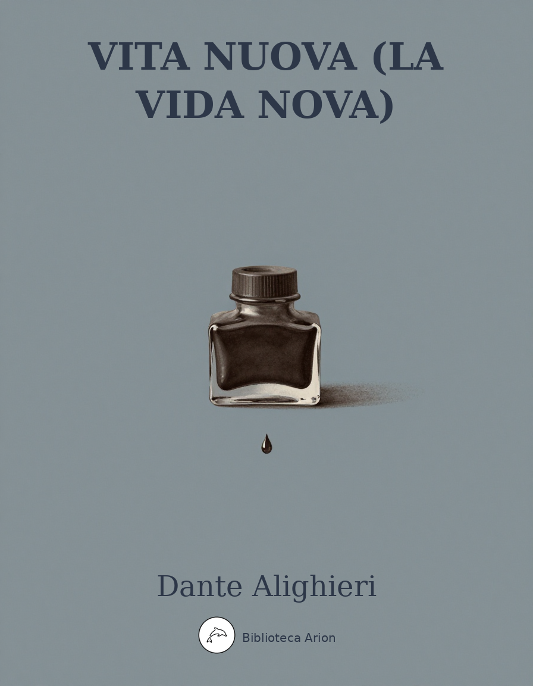

Vita Nuova (La Vida Nova)
Vita Nuova
Obra juvenil de Dante que narra el seu amor per Beatriu, alternant prosa i poesia (prosímetre). Considerada fundacional de la literatura italiana i del dolce stil novo. Conté 42 capítols amb 25 sonets, 5 cançons, 1 balada i 2 estrofes soltes.
Autor: Dante Alighieri Font: Project Gutenberg (ed. A. Agresti, 1902) Llengua: italià
In quella parte del libro della mia memoria, dinanzi alla quale poco si potrebbe leggere, si trova una rubrica la quale dice:
_INCIPIT VITA NOVA._
Sotto la quale rubrica io trovo scritte le parole, le quali è mio intendimento d’assemprare in questo libello; e se non tutte, almeno la loro sentenzia.
Nove fiate già, appresso al mio nascimento, era tornato lo cielo della luce quasi ad un medesimo punto, quanto alla sua propria girazione, quando alli miei occhi apparve prima la gloriosa donna della mia mente, la quale fu chiamata da molti Beatrice, i quali non sapeano che sì chiamare. Ella era già in questa vita stata tanto, che nel suo tempo lo cielo stellato era mosso verso la parte d’oriente delle dodici parti l’una d’un grado: sì che quasi dal principio del suo anno nono apparve a me, ed io la vidi quasi dalla fine del mio. E apparvemi vestita di nobilissimo colore, umile ed onesto sanguigno, cinta ed ornata alla guisa che alla sua giovanissima etade si convenìa. In quel punto dico veracemente che lo Spirito della Vita, lo quale dimora nella segretissima camera del core, cominciò a tremare sì fortemente, che apparia nelli menomi polsi orribilmente; e tremando disse queste parole: Ecce Deus fortior me, qui veniens dominabitur mihi. In quel punto lo Spirito animale, il quale dimora nell’alta camera, nella quale tutti li spiriti sensitivi portano le loro percezioni, si cominciò a maravigliare molto, e parlando spezialmente alli Spiriti del viso, disse queste parole: Apparuit jam beatitudo vestra. In quel punto lo Spirito naturale, il quale dimora in quella parte ove si ministra lo nutrimento nostro, cominciò a piangere, e disse queste parole: Heu miser! quia frequenter impeditus ero deinceps. D’allora innanzi dico ch’Amore signoreggiò l’anima mia, la quale fu sì tosto a lui disposata, e cominciò a prendere sopra me tanta sicurtade e tanta signoria, per la virtù che gli dava la mia imaginazione, che mi convenìa fare compiutamente tutti i suoi piaceri. Egli mi comandava molte volte, che io cercassi per vedere quest’angiola giovanissima: ond’io nella mia puerizia molte fiate l’andai cercando; e vedeala di sì nuovi e laudabili portamenti, che certo di lei si potea dire quella parola del poeta Omero: «Ella non parea figliuola d’uomo mortale, ma di Dio». Ed avvegna che la sua imagine, la quale continuamente meco stava, fosse baldanza d’Amore a signoreggiarmi, tuttavia era di sì nobile virtù, che nulla volta sofferse che Amore mi reggesse senza il fedele consiglio della ragione, in quelle cose là dove cotal consiglio fosse utile a udire. E però che soprastare alle passioni ed atti di tanta gioventudine pare alcuno parlare fabuloso, mi partirò da esse; e trapassando molte cose, le quali si potrebbero trarre dell’esemplo onde nascono queste, verrò a quelle parole, le quali sono scritte nella mia memoria sotto maggiori paragrafi.
Poi che furono passati tanti dì, che appunto erano compiuti li nove anni appresso l’apparimento soprascritto di questa gentilissima, nell’ultimo di questi dì avvenne, che questa mirabile donna apparve a me vestita di colore bianchissimo, in mezzo di due gentili donne, le quali erano di più lunga etade; e passando per una via volse gli occhi verso quella parte dov’io ero molto pauroso; e per la sua ineffabile cortesia, la quale è oggi meritata nel grande secolo, mi salutò virtuosamente tanto, ch’e’ mi parve allora vedere tutti i termini della beatitudine. L’ora, che lo suo dolcissimo salutare mi giunse, era fermamente nona di quel giorno: e però che quella fu la prima volta che le sue parole si mossero per venire alli miei orecchi, presi tanta dolcezza, che come inebriato mi partii dalle genti. E ricorsi al solingo luogo d’una mia camera, e puosimi a pensare di questa cortesissima; e pensando di lei, mi sopraggiunse un soave sonno, nel quale m’apparve una maravigliosa visione: che mi parea vedere nella mia camera una nebula di colore di fuoco, dentro dalla quale io discernea una figura d’uno signore, di pauroso aspetto a chi la guardasse: e pareami con tanta letizia, quanto a sè, che mirabil cosa era: e nelle sue parole dicea molte cose, le quali io non intendea se non poche; tra le quali io intendea queste: Ego dominus tuus. Nelle sue braccia mi parea vedere una persona dormire nuda, salvo che involta mi parea in un drappo sanguigno leggermente; la quale io riguardando molto intentivamente, conobbi ch’era la donna della salute, la quale m’avea lo giorno dinanzi degnato di salutare. E nell’una delle mani mi parea che questi tenesse una cosa, la quale ardesse tutta; e pareami che mi dicesse queste parole: Vide cor tuum. E quando egli era stato alquanto, pareami che disvegliasse questa che dormia; e tanto si sforzava per suo ingegno, che le facea mangiare quella cosa che in mano gli ardeva, la quale ella mangiava dubitosamente. Appresso ciò, poco dimorava che la sua letizia si convertia in amarissimo pianto: e così piangendo, si ricogliea questa donna nelle sue braccia, e con essa mi parea che se ne gisse verso il cielo: ond’io sostenea sì grande angoscia, che lo mio deboletto sonno non potè sostenere, anzi si ruppe, e fui disvegliato. E inmantanente cominciai a pensare; e trovai che l’ora, nella quale m’era questa visione apparita, era stata la quarta della notte: sì che appare manifestamente, ch’ella fu la prima ora delle nove ultime ore della notte. E pensando io a ciò che m’era apparito, proposi di farlo sentire a molti, i quali erano famosi trovatori in quel tempo: e con ciò fosse cosa ch’io avessi già veduto per me medesimo l’arte del dire parole per rima, proposi di fare un sonetto, nel quale io salutassi tutti li fedeli d’Amore; e pregandoli che giudicassero la mia visione, scrissi loro ciò ch’io avea nel mio sonno veduto; e cominciai allora questo Sonetto:
A ciascun’alma presa e gentil core,
Nel cui cospetto viene il dir presente,
A ciò che mi riscrivan suo parvente,
Salute in lor signor, cioè Amore.
Già eran quasi ch’atterzate l’ore
Del tempo ch’ogni stella n’è lucente,
Quando m’apparve Amor subitamente,
Cui essenza membrar mi dà orrore.
Allegro mi sembrava Amor, tenendo
Mio core in mano, e nelle braccia avea
Madonna, involta in un drappo, dormendo.
Poi la svegliava, e d’esto core ardendo
Lei paventosa umilmente pascea:
Appresso gir lo ne vedea piangendo.
Questo Sonetto si divide in due parti: nella prima parte saluto, e domando risponsione; nella seconda, significo a che si dee rispondere. La seconda parte comincia quivi: Già eran.
A questo Sonetto fu risposto da molti e di diverse sentenzie, tra li quali fu risponditore quegli, cui io chiamo primo de’ miei amici; e disse allora un Sonetto lo quale comincia: Vedesti al mio parere ogni valore. E questo fu quasi il principio dell’amistà tra lui e me, quando egli seppe ch’io era quegli che gli avea ciò mandato. Lo verace giudicio del detto sogno non fu veduto allora per alcuno: ma ora è manifesto alli più semplici.
Da questa visione innanzi cominciò il mio Spirito naturale ad essere impedito nella sua operazione, però che l’anima era tutta data nel pensare di questa gentilissima; ond’io divenni in picciolo tempo poi di sì frale e debole condizione, che a molti amici pesava della mia vista: e molti pieni d’invidia si procacciavano di sapere di me quello ch’io voleva del tutto celare ad altrui. Ed io accorgendomi del malvagio addomandare che mi faceano, per la volontà d’Amore, il quale mi comandava secondo il consiglio della ragione, rispondea loro, che Amore era quegli che così m’avea governato: dicea d’Amore, però che io portava nel viso tante delle sue insegne, che questo non si potea ricoprire. E quando mi domandavano: «Per cui t’ha così distrutto questo Amore?» ed io sorridendo li guardava, e nulla dicea loro.
Un giorno avvenne, che questa gentilissima sedea in parte, ove s’udiano parole della Reina della gloria, ed io era in luogo, dal quale vedea la mia beatitudine; e nel mezzo di lei e di me, per la retta linea, sedea una gentile donna di molto piacevole aspetto, la quale mi mirava spesse volte, maravigliandosi del mio sguardare, che parea che sopra lei terminasse; onde molti s’accorsero del suo mirare. E in tanto vi fu posto mente, che, partendomi di questo luogo, mi sentii dire appresso: «Vedi come cotale donna distrugge la persona di costui». E nominandola, intesi che diceano di colei, che mezza era stata nella linea retta che movea dalla gentilissima Beatrice, e terminava negli occhi miei. Allora mi confortai molto, assicurandomi che il mio segreto non era comunicato, lo giorno, altrui per mia vista: ed inmantanente pensai di fare di questa gentile donna ischermo della veritade; e tanto ne mostrai in poco di tempo, che il mio segreto fu creduto sapere dalle più persone che di me ragionavano. Con questa donna mi celai alquanti anni e mesi; e per più fare credente altrui, feci per lei certe cosette per rima, le quali non è mio intendimento di scrivere qui, se non in quanto facesse a trattare di quella gentilissima Beatrice: e però le lascerò tutte, salvo che alcuna ne scriverò, che pare che sia loda di lei.
Dico che in questo tempo, che questa donna era ischermo di tanto amore, quanto dalla mia parte, mi venne una volontà di voler ricordare il nome di quella gentilissima, e d’accompagnarlo di molti nomi di donne, e specialmente del nome di questa gentile donna; e presi i nomi di sessanta le più belle donne della cittade, ove la mia donna fu posta dall’altissimo Sire, e composi una epistola sotto forma di Serventese, la quale io non scriverò: e non n’avrei fatta menzione, se non per dire quello che, componendola, maravigliosamente addivenne: cioè, che in alcuno altro numero non sofferse il nome della mia donna stare, se non in sul nono, tra’ nomi di queste donne.
La donna, con la quale io avea tanto tempo celata la mia volontà, convenne che si partisse della sopradetta cittade, e andasse in paese molto lontano: per che io, quasi sbigottito della bella difesa che mi era venuta meno, assai me ne sconfortai, più che io medesimo non avrei creduto dinanzi. E pensando che, se della sua partita io non parlassi alquanto dolorosamente, le persone sarebbero accorte più tosto del mio nascondere, proposi adunque di farne alcuna lamentanza in un Sonetto, lo quale io scriverò; perciò che la mia donna fu immediata cagione di certe parole, che nel Sonetto sono, siccome appare a chi lo ’ntende: e allora dissi questo Sonetto:
O voi, che per la via d’Amor passate,
Attendete, e guardate
S’egli è dolore alcun, quanto il mio, grave:
E priego sol, ch’udir mi sofferiate;
E poi imaginate
S’io son d’ogni dolore ostello e chiave.
Amor, non già per mia poca bontate,
Ma per sua nobiltate,
Mi pose in vita sì dolce e soave,
Ch’i’ mi sentia dir dietro spesse fiate:
Deh! per qual dignitate
Così leggiadro questi lo cor have?
Ora ho perduta tutta mia baldanza,
Che si movea d’amoroso tesoro;
Ond’io pover dimoro
In guisa, che di dir mi vien dottanza.
Sì che, volendo far come coloro,
Che per vergogna celan lor mancanza,
Di fuor mostro allegranza,
E dentro dallo cor mi struggo e ploro.
Questo sonetto ha due parti principali: che nella prima intendo chiamare i fedeli d’Amore per quelle parole di Jeremia profeta: O vos omnes, qui transitis per viam, attendite et videte, si est dolor sicut dolor meus; e pregare che mi sofferino d’udire. Nella seconda narro là ove Amore m’avea posto, con altro intendimento che l’estreme parti del Sonetto non mostrano: e dico ciò che io ho perduto. La seconda parte comincia quivi: Amor non già.
Appresso il partire di questa gentil donna, fu piacere del Signore degli angeli di chiamare alla sua gloria una donna giovane e di gentile aspetto molto, la quale fu assai graziosa in questa sopraddetta cittade; lo cui corpo io vidi giacere senza anima in mezzo di molte donne, le quali piangeano assai pietosamente. Allora, ricordandomi che già l’aveva veduta fare compagnia a quella gentilissima, non potei sostenere alquante lagrime; anzi piangendo mi proposi di dire alquante parole della sua morte in guiderdone di ciò, che alcuna fiata l’avea veduta con la mia donna. E di ciò toccai alcuna cosa nell’ultima parte delle parole che io ne dissi, siccome appare manifestamente a chi le ’ntende: e dissi allora questi due Sonetti, dei quali comincia il primo: Piangete amanti; il secondo: Morte villana.
Piangete, amanti, poi che piange Amore,
Udendo qual cagion lui fa plorare:
Amor sente a pietà donne chiamare,
Mostrando amaro duol per gli occhi fuore;
Perchè villana Morte in gentil core
Ha messo il suo crudele adoperare,
Guastando ciò che al mondo è da lodare
In gentil donna, fuora dell’onore.
Udite quant’Amor le fece orranza;
Ch’io ’l vidi lamentare in forma vera
Sovra la morta imagine avvenente;
E riguardava invêr lo ciel sovente,
Ove l’alma gentil già locata era,
Che donna fu di sì gaia sembianza.
Questo primo Sonetto si divide in tre parti. Nella prima chiamo e sollecito i fedeli d’Amore a piangere; e dico che lo signore loro piange, e che udendo la cagione perch’e’ piange, si acconcino più ad ascoltarmi; nella seconda, narro la cagione; nella terza, parlo d’alcuno onore, che Amore fece a questa donna. La seconda comincia quivi: Amor sente; la terza quivi: Udite.
Morte villana, di pietà nimica,
Di dolor madre antica,
Giudicio incontestabile, gravoso,
Poi c’hai data materia al cor doglioso
Ond’io vada pensoso,
Di te biasmar la lingua s’affatica.
E se di grazia ti vo’ far mendica,
Convenesi ch’io dica
Lo tuo fallir, d’ogni torto tortoso;
Non però che alla gente sia nascoso,
Ma per farne cruccioso
Chi d’Amor per innanzi si nutrica.
Dal secolo hai partita cortesia,
E, ciò che ’n donna è da pregiar, virtute
In gaia gioventute:
Distrutta hai l’amorosa leggiadria.
Più non vo’ discovrir qual donna sia,
Che per le proprietà sue conosciute:
Chi non merta salute,
Non speri mai d’aver sua compagnia.
Questo Sonetto si divide in quattro parti: nella prima, chiamo la Morte per certi suoi nomi propri; nella seconda parlando a lei, dico la ragione perch’io mi movo a biasimarla; nella terza, la vitupero; nella quarta, mi volgo a parlare a indiffinita persona, avvegna che quanto al mio intendimento sia diffinita. La seconda parte comincia quivi: Poi c’hai data; la terza quivi: E se di grazia; la quarta quivi: Chi non merta.
Appresso la morte di questa donna alquanti dì, avvenne cosa, per la quale mi convenne partire della sopradetta cittade, ed ire verso quelle parti, dov’era la gentil donna ch’era stata mia difesa, avvegna che non tanto lontano fosse lo termine del mio andare, quanto ella era. E tutto che io fossi alla compagnia di molti, quanto alla vista, l’andare mi dispiacea sì, che quasi li sospiri non poteano disfogare l’angoscia, che il cuore sentia, però ch’io mi dilungava dalla mia beatitudine. E però lo dolcissimo signore, il quale mi signoreggiava per virtù della gentilissima donna, nella mia imaginazione apparve come peregrino leggiermente vestito, e di vili drappi. Egli mi parea sbigottito, e guardava la terra, salvo che talvolta mi parea, che li suoi occhi si volgessero ad uno fiume bello e corrente e chiarissimo, il quale sen gìa lungo questo cammino là ove io era. A me parve che Amore mi chiamasse, e dicessemi queste parole: «Io vegno da quella donna, la quale è stata lunga tua difesa, e so che il suo rivenire non sarà; e però quel cuore ch’io ti facea avere da lei, io l’ho meco, e portolo a donna, la quale sarà tua difensione come questa era»; e nomollami sì, ch’io la conobbi bene. «Ma tuttavia di queste parole, ch’io t’ho ragionate, se alcuna ne dicessi, dille per modo che per loro non si discernesse lo simulato amore che hai mostrato a questa, e che ti converrà mostrare ad altrui». E dette queste parole, disparve tutta questa mia imaginazione subitamente, per la grandissima parte, che mi parve ch’Amore mi desse di sè; e, quasi cambiato nella vista mia, cavalcai quel giorno pensoso molto, e accompagnato da molti sospiri. Appresso lo giorno, cominciai questo Sonetto:
Cavalcando l’altr’ieri per un cammino,
Pensoso dell’andar, che mi sgradia,
Trovai Amor nel mezzo della via,
In abito leggier di peregrino.
Nella sembianza mi parea meschino
Come avesse perduta signoria;
E sospirando pensoso venia,
Per non veder la gente, a capo chino.
Quando mi vide, mi chiamò per nome,
E disse: Io vegno di lontana parte,
Dov’era lo tuo cor per mio volere;
E recolo a servir novo piacere.
Allora presi di lui sì gran parte,
Ch’egli disparve, e non m’accorsi come.
Questo Sonetto ha tre parti: nella prima parte dico siccome io trovai Amore, e qual mi parea; nella seconda, dico quello ch’egli mi disse, avvegna che non compiutamente, per tema ch’io avea di non scovrire lo mio segreto; nella terza, dico com’egli disparve. La seconda comincia quivi: Quando mi vide; la terza quivi: Allora presi.
Appresso la mia tornata, mi misi a cercare di questa donna, che lo mio signore m’avea nominata nel cammino de’ sospiri. Ed acciò che il mio parlare sia più brieve, dico che in poco tempo la feci mia difesa tanto, che troppa gente ne ragionava oltra li termini della cortesia; onde molte fiate mi pesava duramente. E per questa cagione, cioè di questa soperchievole voce, che parea che m’infamasse viziosamente, quella gentilissima, la quale fu distruggitrice di tutti i vizj e reina della virtù, passando per alcuna parte mi negò il suo dolcissimo salutare, nel quale stava tutta la mia beatitudine. E uscendo alquanto del proposito presente, voglio dare ad intendere quello che il suo salutare in me virtuosamente operava.
Dico, che quando ella apparia da parte alcuna, per la speranza della mirabile salute nullo nemico mi rimanea, anzi mi giugnea una fiamma di caritade, la quale mi facea perdonare a chiunque m’avesse offeso: e chi allora m’avesse addimandato di cosa alcuna, la mia risponsione sarebbe stata solamente: «Amore» con viso vestito d’umiltà. E quando ella fosse alquanto propinqua al salutare, uno Spirito d’amore, distruggendo tutti gli altri spiriti sensitivi, pingea fuori li deboletti Spiriti del viso, e dicea loro: «Andate ad onorare la donna vostra»; ed egli si rimanea nel loco loro. E chi avesse voluto conoscere Amore, far lo potea mirando lo tremore degli occhi miei. E quando questa gentilissima donna salutava, non che Amore fosse tal mezzo, che potesse obumbrare a me la intollerabile beatitudine, ma egli quasi per soperchio di dolcezza divenia tale, che lo mio corpo, lo quale era tutto allora sotto il suo reggimento, molte volte si movea come cosa grave inanimata. Sicchè appare manifestamente che nelle sue salute abitava la mia beatitudine, la quale molte volte passava e redundava la mia capacitade.
Ora, tornando al proposito, dico che poi che la mia beatitudine mi fu negata, mi giunse tanto dolore, che partitomi dalle genti, in solinga parte andai a bagnare la terra d’amarissime lagrime: e poi che alquanto mi fu sollevato questo lagrimare, misimi nella mia camera, là dove io potea lamentarmi senza essere udito. E quivi chiamando misericordia alla donna della cortesia, e dicendo: «Amore, aiuta il tuo fedele», m’addormentai come un pargoletto battuto lagrimando. Avvenne quasi nel mezzo del mio dormire, che mi parve vedere nella mia camera lungo me sedere un giovane vestito di bianchissime vestimenta; e, pensando molto quanto alla vista sua, mi riguardava là ov’io giacea; e quando m’avea guardato alquanto, pareami che sospirando mi chiamasse, e diceami queste parole: Fili mi, tempus est ut prætermittantur simulacra nostra. Allora mi parea ch’io ’l conoscessi, però che mi chiamava così come assai fiate nelli miei sospiri m’avea già chiamato. E riguardandolo parvemi che piagnesse pietosamente, e parea che attendesse da me alcuna parola: ond’io assicurandomi, cominciai a parlare così con esso: «Signore della nobiltade, perchè piagni tu?» E quegli mi dicea queste parole: Ego tamquam centrum circuli, cui simili modo habent circumferentiæ partes; tu autem non sic. Allora pensando alle sue parole, mi parea che mi avesse parlato molto oscuro, sì che io mi sforzava di parlare, e diceagli queste parole: «Ch’è ciò, Signore, che tu mi parli con tanta scuritade?». E quegli mi dicea in parole volgari: «Non dimandare più che utile ti sia». E però cominciai con lui a ragionare della salute, la quale mi fu negata, e domanda’lo della cagione; onde in questa guisa da lui mi fu risposto: «Quella nostra Beatrice udì da certe persone, di te ragionando, che la donna, la quale io ti nominai nel cammino de’ sospiri, ricevea da te alcuna noia. E però questa gentilissima, la quale è contraria di tutte le noie, non degnò salutare la tua persona, temendo non fosse noiosa. Onde conciossiacosa che veracemente sia conosciuto per lei alquanto lo tuo segreto per lunga consuetudine, voglio che tu dichi certe parole per rima, nelle quali tu comprenda la forza ch’io tegno sovra te per lei, e come tu fosti suo tostamente dalla tua puerizia. E di ciò chiama testimonio colui che ’l sa: e come tu prieghi lui che gliele dica; ed io, che sono quello, volentieri le ne ragionerò; e per questo sentirà ella la tua volontade, la quale sentendo, conoscerà le parole degl’ingannati. Queste parole fa che sieno quasi uno mezzo, sì che tu non parli a lei immediatamente, chè non è degno. E non le mandare in parte alcuna senza me, ove potessero essere intese da lei; ma falle adornare di soave armonia, nella quale io sarò tutte le volte che farà mestieri». E dette queste parole, disparve, e lo mio sonno fu rotto. Ond’io ricordandomi, trovai che questa visione m’era apparita nella nona ora del dì; e anzi che io uscissi da questa camera, proposi di fare una Ballata, nella quale seguitassi ciò che ’l mio Signore m’avea imposto, e feci poi questa Ballata:
Ballata, io vo’ che tu ritruovi Amore,
E con lui vadi a Madonna davanti,
Sì che la scusa mia, la qual tu canti,
Ragioni poi con lei lo mio Signore.
Tu vai, Ballata, sì cortesemente,
Che, senza compagnia,
Dovresti avere in tutte parti ardire:
Ma, se tu vuogli andar securamente,
Ritruova l’Amor pria;
Chè forse non è buon sanza lui gire:
Però che quella, che ti debbe udire,
Se, com’io credo, è invêr di me adirata,
E tu di lui non fussi accompagnata,
Leggieramente ti farìa disnore.
Con dolce suono, quando se’ con lui,
Comincia este parole
Appresso ch’averai chiesta pietate:
Madonna, quegli che mi manda a vui,
Quando vi piaccia, vuole,
Se egli ha scusa, che la m’intendiate.
Amore è quei, che per vostra beltate
Lo face, come vuol, vista cangiare:
Dunque, perchè gli fece altra guardare
Pensatel voi, dacch’e’ non mutò ’l core.
Dille: Madonna, lo suo cuore è stato
Con sì fermata fede,
Ch’a voi servir l’ha pronto ogni pensero:
Tosto fu vostro, e mai non s’è smagato.
Se ella non ti crede,
Di’ che ’n domandi Amor, che sa lo vero:
Ed alla fin le fa umil preghiero,
Lo perdonare se le fosse a noia,
Che mi comandi per messo ch’i’ moia;
E vedrassi ubidir bon servidore.
E di’ a colui ch’è d’ogni pietà chiave,
Avanti che sdonnei,
Che le sappia contar mia ragion buona:
Per grazia della mia nota soave
Riman tu qui con lei,
E del tuo servo, ciò che vuol, ragiona;
E s’ella per tuo priego gli perdona,
Fa’ che gli annunzi in bel sembiante pace.
Gentil Ballata mia, quando ti piace,
Muovi in quel punto, che tu n’aggi onore.
Questa Ballata in tre parti si divide: nella prima, dico a lei ov’ella vada, e confortola però che vada più sicura; e dico nella cui compagnia si metta, se vuole securamente andare, e senza pericolo alcuno; nella seconda, dico quello che a lei s’appartiene di fare intendere; nella terza, la licenzio del gire quando vuole, raccomandando lo suo movimento nelle braccia della fortuna. La seconda parte comincia quivi: Con dolce suono; la terza quivi: Gentil Ballata. Potrebbe già l’uomo opporre contro a me e dire che non sapesse a cui fosse il mio parlare in seconda persona, però che la Ballata non è altro, che queste parole ch’io parlo: e però dico che questo dubbio io lo intendo solvere e dichiarare in questo libello ancora in parte più dubbiosa: ed allora intenderà qui chi più dubbia, o chi qui volesse opporre, in quello modo.
Appresso di questa soprascritta visione, avendo già dette le parole, che Amore m’avea imposte a dire, m’incominciarono molti e diversi pensamenti a combattere e a tentare, ciascuno quasi indefensibilmente: tra li quali pensamenti, quattro m’ingombravano più il riposo della vita. L’uno dei quali era questo: «Buona è la signoria d’Amore, però che trae lo ’ntendimento del suo fedele da tutte le vili cose». L’altro era questo: «Non buona è la signoria d’Amore, però che quanto lo suo fedele più fede gli porta, tanto più gravi e dolorosi punti gli conviene passare». L’altro era questo: «Lo nome d’Amore è sì dolce a udire, che impossibile mi pare, che la sua propria operazione sia nelle più cose altro che dolce, conciossiacosa che i nomi seguitino le nominate cose, siccome è scritto: Nomina sunt consequentia rerum». Lo quarto era questo: «La donna per cui Amore ti strigne così, non è come le altre donne, che leggiermente si mova del suo core». E ciascuno mi combattea tanto, che mi facea quasi stare come colui, che non sa per qual via pigli il suo cammino, che vuole andare, e non sa onde si vada. E se io pensava di voler cercare una comune via di costoro, cioè là ove tutti si accordassero, questa via era molto inimica verso di me, cioè di chiamare e di mettermi nelle braccia della Pietà. Ed in questo stato dimorando, mi giunse volontà di scriverne parole rimate; e dissine allora questo Sonetto:
Tutti li miei pensier parlan d’amore:
Ed hanno in lor sì gran varïetate,
Ch’altro mi fa voler sua potestate,
Altro folle ragiona il suo valore.
Altro sperando m’apporta dolzore;
Altro pianger mi fa spesse fïate;
E sol s’accordano in chieder pietate,
Tremando di paura ch’è nel core.
Ond’io non so da qual matera prenda;
E vorrei dire, e non so che mi dica:
Così mi truovo in amorosa erranza.
E se con tutti vo’ fare accordanza,
Convenemi chiamar la mia nemica,
Madonna la Pietà, che mi difenda.
Questo Sonetto in quattro parti si può dividere: nella prima, dico e propongo che tutti li miei pensieri sono d’Amore; nella seconda, dico che sono diversi, e narro la loro diversitade; nella terza, dico in che tutti pare che s’accordino; nella quarta, dico che, volendo dire d’Amore, non so da qual parte pigli matera; e se la voglio pigliare da tutti, conviene che io chiami la mia nemica, madonna la Pietà. Dico madonna, quasi per isdegnoso modo di parlare. La seconda parte comincia quivi: Ed hanno in lor; la terza quivi: E sol s’accordan; la quarta: Ond’io non so.
Appresso la battaglia delli diversi pensieri, avvenne che questa gentilissima venne in parte, ove molte donne gentili erano adunate; alla qual parte io fui condotto per amica persona, credendosi fare a me gran piacere in quanto mi menava là dove tante donne mostravano le loro bellezze. Ond’io, quasi non sapendo a che io fossi menato, e fidandomi nella persona, la quale un suo amico all’estremità della vita condotto avea, dissi a lui: «Perchè semo noi venuti a queste donne?» Allora quegli mi disse: «Per fare sì ch’elle sieno degnamente servite». E lo vero è, che adunate quivi erano alla compagnia d’una gentil donna, che disposata era lo giorno; e però, secondo la usanza della sopradetta cittade, conveniva che le facessero compagnia nel primo sedere alla mensa nella magione del suo novello sposo. Sì che io, credendomi far il piacere di questo amico, proposi di stare al servigio delle donne nella sua compagnia. E nel fine del mio proponimento mi parve sentire un mirabile tremore incominciare nel mio petto dalla sinistra parte, e distendersi di subito per tutte le parti del mio corpo. Allora dico che io poggiai la mia persona simulatamente ad una pintura, la quale circondava questa magione; e temendo non altri si fosse accorto del mio tremare, levai gli occhi, e mirando le donne, vidi tra loro la gentilissima Beatrice. Allora furono sì distrutti li miei Spiriti per la forza che Amore prese veggendosi in tanta propinquitade alla gentilissima donna, che non mi rimase in vita più che gli Spiriti del viso; ed ancor questi rimasero fuori de’ loro strumenti, però che Amore volea stare nel loro nobilissimo luogo per vedere la mirabile donna. E avvegna ch’io fossi altro che prima, molto mi dolea di questi Spiritelli, che si lamentavano forte, e diceano: «Se questi non ci sfolgorasse così fuori del nostro luogo, noi potremmo stare a vedere la maraviglia di questa donna, così come stanno gli altri nostri pari». Io dico che molte di queste donne, accorgendosi della mia trasfigurazione, si cominciarono a maravigliare; e ragionando si gabbavano di me con questa gentilissima: onde, lo ingannato amico mi prese per la mano, e traendomi fuori della veduta di queste donne, mi domandò che io avessi. Allora io riposato alquanto, e resurressiti li morti Spiriti miei, e li discacciati rivenuti alle loro possessioni, dissi a questo mio amico queste parole: «Io ho tenuti i piedi in quella parte della vita, di là dalla quale non si può ire più per intendimento di ritornare». E partitomi da lui, mi ritornai nella camera delle lagrime, nella quale, piangendo e vergognandomi, fra me stesso dicea: «Se questa donna sapesse la mia condizione, io non credo che così gabbasse la mia persona, anzi credo che molta pietà le ne verrebbe». E in questo pianto stando, proposi di dire parole, nelle quali, a lei parlando, significassi la cagione del mio trasfiguramento, e dicessi che io so bene ch’ella non è saputa, e che se fosse saputa, io credo che pietà ne giugnerebbe altrui: e propuosele di dire, desiderando che venissero per avventura nella sua audienza; e allora dissi questo Sonetto:
Con l’altre donne mia vista gabbate,
E non pensate, donna, onde si mova
Ch’io vi rassembri sì figura nova
Quando riguardo la vostra biltate.
Se lo saveste, non porrìa Pietate
Tener più contra me l’usata prova;
Chè quando Amor sì presso a voi mi trova,
Prende baldanza e tanta sicurtate,
Ch’el fier tra’ mïei Spirti paurosi,
E quale uccide, e qual pinge di fuora,
Sì ch’ei solo rimane a veder vui;
Ond’io mi cangio in figura d’altrui;
Ma non sì, ch’io non senta bene allora
Gli guai degli scacciati tormentosi.
Questo Sonetto non divido io in parti, perchè la divisione non si fa se non per aprire la sentenzia della cosa divisa: onde, conciossiacosa che, per la ragionata cagione, assai sia manifesto, non ha mestieri di divisione. Vero è che tra le parole, ove si manifesta la cagione di questo Sonetto, si trovano dubbiose parole; cioè quando dico ch’Amore uccide tutti i miei Spiriti, e li visivi rimangono in vita, salvo che fuori degli strumenti loro. E questo dubbio è impossibile a solvere a chi non fosse in simile grado fedele d’Amore; ed a coloro che vi sono, è manifesto ciò che solverebbe le dubitose parole: e però non è bene a me dichiarare cotale dubitazione, acciò che lo mio parlare sarebbe indarno, ovvero di soperchio.
Appresso la nuova trasfigurazione mi giunse un pensamento forte, lo quale poco si partìa da me; anzi continuamente mi riprendea, ed era di cotale ragionamento meco: «Poscia che tu pervieni a così schernevole vista quando tu se’ presso di questa donna, perchè pur cerchi di veder lei? Ecco che se tu fossi domandato da lei, che avresti tu da rispondere? ponendo che tu avessi libera ciascuna tua virtude, in quanto tu le rispondessi». Ed a questo rispondea un altro umile pensiero, e dicea: «Se io non perdessi le mie virtudi, e fossi libero tanto ch’io potessi rispondere, io le direi, che sì tosto com’io imagino la sua mirabil bellezza, sì tosto mi giugne un desiderio di vederla, lo quale è di tanta virtude, che uccide e distrugge nella mia memoria ciò che contra lui si potesse levare; e però non mi ritraggono le passate passioni di cercare la veduta di costei». Ond’io, mosso da cotali pensamenti, proposi di dire certe parole, nelle quali, scusandomi a lei di cotal riprensione, ponessi anche di quello che mi addiviene presso di lei; e dissi questo Sonetto:
Ciò che m’incontra, nella mente more
Quando vegno a veder voi, bella gioia,
E quand’io vi son presso, sento Amore,
Che dice: Fuggi, se ’l perir t’è noia.
Lo viso mostra lo color del core,
Che, tramortendo, dovunque s’appoia;
E per l’ebrïetà del gran tremore
Le pietre par che gridin: Moia, moia.
Peccato face chi allor mi vide,
Se l’alma sbigottita non conforta,
Sol dimostrando che di me gli doglia,
Per la pietà, che ’l vostro gabbo uccide,
La qual si cria nella vista morta
Degli occhi, c’hanno di lor morte voglia.
Questo Sonetto si divide in due parti: nella prima, dico la cagione, per che non mi tegno di gire presso a questa donna; nella seconda, dico quello che m’addiviene per andare presso di lei; e comincia questa parte quivi: E quando io vi son presso. E anche si divide questa seconda parte in cinque, secondo cinque diverse narrazioni: chè nella prima dico quello che Amore, consigliato dalla ragione, mi dice quando le son presso; nella seconda, manifesto lo stato del core per esemplo del viso; nella terza, dico siccome ogni sicurtade mi vien meno; nella quarta, dico che pecca quegli che non mostra pietà di me, acciò che mi sarebbe alcun conforto; nell’ultima, dico perchè altri dovrebbe aver pietà, cioè per la pietosa vista, che negli occhi mi giugne; la qual vista pietosa è distrutta, cioè non pare altrui, per lo gabbare di questa donna, la quale trae a sua simile operazione coloro, che forse vedrebbono questa pietà. La seconda parte comincia quivi: Lo viso mostra; la terza: E per l’ebrïetà; la quarta: Peccato face; la quinta: Per la Pietà.
Appresso ciò che io dissi questo Sonetto, mi mosse una volontà di dire anche parole, nelle quali dicessi quattro cose ancora sopra il mio stato, le quali non mi parea che fossero manifestate ancora per me. La prima delle quali si è, che molte volte io mi dolea, quando la mia memoria movesse la fantasia ad imaginare quale Amor mi facea; la seconda si è, che Amore spesse volte di subito m’assalìa sì forte, che in me non rimanea altro di vita se non un pensiero, che parlava di questa donna; la terza si è, che quando questa battaglia d’Amore mi pugnava così, io mi movea, quasi discolorito tutto, per veder questa donna, credendo che mi difendesse la sua veduta da questa battaglia, dimenticando quello che per appropinquare a tanta gentilezza m’addivenia; la quarta si è, come cotal veduta non solamente non mi difendea, ma finalmente disconfiggeva la mia poca vita; e però dissi questo Sonetto:
Spesse fïate vegnonmi alla mente
L’oscure qualità ch’Amor mi dona;
E vienmene pietà sì, che sovente
Io dico: lasso! avvien egli a persona?
Ch’Amor m’assale subitanamente
Sì, che la vita quasi m’abbandona:
Campami un spirto vivo solamente,
E quei riman, perchè di voi ragiona.
Poscia mi sforzo, chè mi voglio atare;
E così smorto, e d’ogni valor vôto,
Vegno a vedervi, credendo guarire:
E se io levo gli occhi per guardare,
Nel cor mi si comincia uno tremoto,
Che fa de’ polsi l’anima partire.
Questo Sonetto si divide in quattro parti, secondo che quattro cose sono in esso narrate: e però che sono esse ragionate di sopra, non m’intrametto se non di distinguere le parti per li loro cominciamenti: onde dico che la seconda parte comincia quivi: Ch’Amor; la terza quivi: Poscia mi sforzo; la quarta: E se io levo.
Poi che io dissi questi tre Sonetti, ne’ quali parlai a questa donna, però che furo narratori di tutto quasi lo mio stato, credendomi tacere e non dir più, però che mi parea avere di me assai manifestato, avvegna che sempre poi tacessi di dire a lei, a me convenne ripigliare materia nova e più nobile che la passata. E però che la cagione della nova materia è dilettevole a udire, la dirò quanto potrò più brevemente.
Conciossiacosa che per la vista mia molte persone avessero compreso lo segreto del mio cuore, certe donne, le quali adunate s’erano, dilettandosi l’una nella compagnia dell’altra, sapeano bene lo mio cuore, perchè ciascuna di loro era stata a molte mie sconfitte. Ed io passando presso di loro, sì come dalla fortuna menato, fui chiamato da una di queste gentili donne; e quella, che m’avea chiamato, era donna di molto leggiadro parlare. Sì che quando io fui giunto dinanzi da loro, e vidi bene che la mia gentilissima donna non era tra esse, rassicurandomi le salutai, e domandai che piacesse loro. Le donne erano molte, tra le quali n’avea certe che si rideano tra loro. Altre v’erano, che guardavanmi aspettando che io dovessi dire. Altre v’erano che parlavano tra loro, delle quali una volgendo gli occhi verso me, e chiamandomi per nome, disse queste parole: «A che fine ami tu questa tua donna, poi che tu non puoi la sua presenza sostenere? Dilloci, chè certo il fine di cotale amore conviene che sia novissimo». E poi che m’ebbe dette queste parole, non solamente ella, ma tutte le altre cominciaro ad attendere in vista la mia risponsione. Allora dissi loro queste parole: «Madonne, lo fine del mio amore fu già il saluto di questa donna, forse di cui voi intendete; ed in quello dimorava la beatitudine, ch’è ’l fine di tutti li miei disiri. Ma poi che le piacque di negarlo a me, lo mio signore Amore, la sua mercede, ha posta tutta la mia beatitudine in quello, che non mi puote venir meno». Allora queste donne cominciaro a parlare tra loro; e sì come talor vedemo cadere l’acqua mischiata di bella neve, così mi parea vedere le loro parole uscire mischiate di sospiri. E poi che alquanto ebbero parlato tra loro, anche questa donna mi disse, che prima m’avea parlato, queste parole: «Noi ti preghiamo, che tu ne dichi ove sta questa tua beatitudine». Ed io rispondendole, dissi cotanto: «In quelle parole che lodano la donna mia». Ed ella rispose: «Se tu ne dicessi vero, quelle parole che tu n’hai dette notificando la tua condizione, avresti tu operate con altro intendimento». Ond’io pensando a queste parole, quasi vergognandomi mi partii da loro; e venìa dicendo tra me medesimo: «Poi che è tanta beatitudine in quelle parole che lodano la mia donna, perchè altro parlare è stato il mio?» E però proposi di prendere per materia del mio parlare sempre mai quello che fosse loda di questa gentilissima; e pensando a ciò molto, pareami avere impresa troppo alta materia, quanto a me, sì che non ardìa di cominciare; e così dimorai alquanti dì, con desiderio di dire e con paura di cominciare.
Avvenne poi che, passando per un cammino, lungo il quale correva un rivo chiaro molto, a me giunse tanta volontà di dire, che cominciai a pensare il modo ch’io tenessi; e pensai che parlare di lei non si conveniva, se non che io parlassi a donne in seconda persona; e non ad ogni donna, ma solamente a coloro che sono gentili, e non sono pur femmine. Allora dico che la mia lingua parlò quasi come per sè stessa mossa, e disse: Donne ch’avete intelletto d’amore. Queste parole io riposi nella mente con grande letizia, pensando di prenderle per mio cominciamento: onde poi ritornato alla sopradetta cittade, e pensando alquanti dì, cominciai una Canzone con questo cominciamento, ordinata nel modo che si vedrà di sotto nella sua divisione. La Canzone comincia così:
Donne, ch’avete intelletto d’amore,
Io vo’ con voi della mia donna dire;
Non perch’io creda sua laude finire,
Ma ragionar per isfogar la mente.
Io dico che, pensando il suo valore,
Amor sì dolce mi si fa sentire,
Che, s’io allora non perdessi ardire,
Farei, parlando, innamorar la gente;
Ed io non vo’ parlar sì altamente,
Che divenissi per temenza vile:
Ma tratterò del suo stato gentile,
A rispetto di lei leggeramente,
Donne e donzelle amorose, con vui,
Chè non è cosa da parlarne altrui.
Angelo chiama in divino intelletto,
E dice: Sire, nel mondo si vede
Maraviglia nell’atto, che procede
Da un’anima, che fin quassù risplende.
Lo cielo, che non have altro difetto
Che d’aver lei, al suo Signor la chiede,
E ciascun santo ne grida mercede.
Sola Pietà nostra parte difende;
Chè parla Iddio, che di madonna intende:
Diletti miei, or sofferite in pace,
Che vostra speme sie quanto mi piace
Là, ov’è alcun che perder lei s’attende,
E che dirà nell’inferno a’ malnati:
Io vidi la speranza de’ beati.
Madonna è disiata in l’alto cielo:
Or vo’ di sua virtù farvi sapere.
Dico: qual vuol gentil donna parere
Vada con lei; chè quando va per via,
Gitta ne’ cor villani Amore un gelo,
Per che ogni lor pensiero agghiaccia e père.
E qual soffrisse di starla a vedere
Diverrìa nobil cosa, o si morrìa:
E quando trova alcun che degno sia
Di veder lei, quei prova sua virtute,
Chè gli avvien ciò che gli dona salute,
E sì l’umilia, che ogni offesa oblia.
Ancor le ha Dio per maggior grazia dato,
Che non può mal finir chi le ha parlato.
Dice di lei Amor: Cosa mortale
Come esser può sì adorna e sì pura?
Poi la riguarda, e fra sè stesso giura
Che Dio ne ’ntende di far cosa nova.
Color di perla ha quasi in forma, quale
Conviene a donna aver, non fuor misura;
Ella è quanto di ben può far natura,
Per esemplo di lei beltà si prova;
Degli occhi suoi, come ch’ella gli muova,
Escono spirti d’amore infiammati,
Che fieron gli occhi a qual, che allor la guati,
E passan sì, chè ’l cor ciascun ritrova.
Voi le vedete Amor pinto nel riso,
Là ’ve non puote alcun mirarla fiso.
Canzone, io so che tu girai parlando
A donne assai, quando t’avrò avanzata:
Or t’ammonisco, perch’io t’ho allevata
Per figliuola d’Amor giovane e piana,
Che dove giugni, tu dichi pregando:
Insegnatemi gir; ch’io son mandata
A quella, di cui loda io sono ornata.
E, se non vogli andar, sì come vana
Non ristare ove sia gente villana.
Ingègnati, se puoi, d’esser palese
Solo con donna o con uomo cortese,
Che ti merranno per la via tostana.
Tu troverai Amor con esso lei;
Raccomandami a lui come tu dêi.
Questa Canzone, acciò che sia meglio intesa, la dividerò più artificiosamente che le altre cose di sopra, e però prima ne fo tre parti. La prima parte è proemio delle seguenti parole: la seconda, è lo intento trattato; la terza, è quasi una servigiale delle precedenti parole. La seconda comincia quivi: Angelo chiama; la terza quivi: Canzone, io so. La prima parte si divide in quattro: nella prima, dico a cui dir voglio della mia donna, e perchè io voglio dire; nella seconda, dico che mi pare a me stesso quand’io penso lo suo valore, e come io direi se non perdessi l’ardimento; nella terza, dico come credo dire di lei, acciò che io non sia impedito da viltà; nella quarta, ridicendo ancora a cui intendo di dire, dico la ragione per che dico a loro. La seconda comincia quivi: Io dico; la terza quivi: Ed io non vo’ parlar; la quarta quivi: Donne e donzelle. Poi quando dico: Angelo chiama, comincio a trattare di questa donna; e dividesi questa parte in due. Nella prima, dico che di lei si comprende in cielo; nella seconda, dico che di lei si comprende in terra, quivi: Madonna è disiata. Questa seconda parte si divide in due; chè nella prima dico di lei quanto dalla parte della nobiltà della sua anima, narrando alquante delle sue virtudi effettive, che dalla sua anima procedeano: nella seconda, dico di lei quanto dalla parte della nobiltà del suo corpo, narrando alquante delle sue bellezze, quivi: Dice di lei Amor. Questa seconda parte si divide in due, chè nella prima, dico d’alquante bellezze, che sono secondo tutta la persona; nella seconda dico d’alquante bellezze, che sono secondo determinata parte della persona, quivi: Degli occhi suoi. Questa seconda parte si divide in due; che nell’una dico degli occhi, che sono principio di Amore; nella seconda, dico della bocca, ch’è fine d’Amore. Ed acciò che quinci si levi ogni vizioso pensiero, ricordisi chi legge, che di sopra è scritto che il saluto di questa donna, lo quale era operazione della sua bocca, fu fine de’ miei desiderj, mentre che io lo potei ricevere. Poscia quando dico: Canzone io so, aggiungo una stanza quasi come ancella dell’altre, nella quale dico quello che da questa mia Canzone desidero. E però che quest’ultima parte è lieve ad intendere, non mi travaglio di più divisioni. Dico bene, che a più aprire lo intendimento di questa Canzone si converrebbe usare più minute divisioni; ma tuttavia chi non è di tanto ingegno, che per queste che son fatte la possa intendere, a me non dispiace se la mi lascia stare: chè certo io temo d’avere a troppi comunicato il suo intendimento, pur per queste divisioni che fatte sono, s’egli avvenisse che molti le potessono udire.
Appresso che questa Canzone fu alquanto divolgata tra le genti, conciofossecosa che alcuno amico l’udisse, volontà lo mosse a pregarmi ch’io gli dovessi dire che è Amore, avendo forse, per le udite parole, speranza di me oltre che degna. Ond’io pensando che appresso di cotal trattato, bello era trattare alcuna cosa d’Amore, e pensando che l’amico era da servire, proposi di dire parole, nelle quali io trattassi d’Amore; e dissi allora questo Sonetto:
Amore e ’l cor gentil sono una cosa,
Sì come ’l Saggio in suo dittato pone;
E così esser l’un sanza l’altro osa,
Com’alma razional sanza ragione.
Fagli Natura, quando è amorosa,
Amor per sire, e ’l cor per sua magione,
Dentro allo qual dormendo si riposa
Tal volta brieve, e tal lunga stagione.
Beltate appare in saggia donna pui,
Che piace agli occhi sì, che dentro al core
Nasce un disio della cosa piacente:
E tanto dura talora in costui,
Che fa svegliar lo Spirito d’amore:
E simil face in donna uomo valente.
Questo Sonetto si divide in due parti. Nella prima, dico di lui in quanto è in potenza; nella seconda, dico di lui in quanto di potenza si riduce in atto. La seconda, comincia quivi: Beltate appare. La prima si divide in due: nella prima, dico in che soggetto sia questa potenza; nella seconda, dico come questo soggetto e questa potenza sieno prodotti insieme in essere, e come l’uno guarda l’altra, come forma materia. La seconda comincia quivi: Fagli natura. Poi quando dico: Beltate appare, dico come questa potenza si riduce in atto; e prima, come si riduce in uomo: poi, come si riduce in donna, quivi: E simil face in donna.
Poscia che io trattai d’Amore nella sopradetta rima, vennemi volontà di voler dire anche in loda di questa gentilissima parole, per le quali io mostrassi come si sveglia per lei quest’amore, e come non solamente si sveglia là ove dorme, ma là ove non è in potenza, ella mirabilmente operando il fa venire. E dissi allora questo Sonetto:
Negli occhi porta la mia donna Amore,
Per che si fa gentil ciò ch’ella mira:
Ov’ella passa, ogni uom vêr lei si gira,
E cui saluta fa tremar lo core:
Sì che, bassando il viso, tutto smuore,
E d’ogni suo difetto allor sospira:
Fugge dinanzi a lei superbia ed ira:
Aiutatemi, donne, a farle onore.
Ogni dolcezza, ogni pensiero umìle
Nasce nel core a chi parlar la sente;
Ond’è laudato chi prima la vide.
Quel ch’ella par quand’un poco sorride
Non si può dicer nè tener a mente,
Sì è novo miracolo gentile.
Questo Sonetto ha tre parti. Nella prima, dico siccome questa donna riduce in atto questa potenza, secondo la nobilissima parte degli occhi suoi: e nella terza, dico questo medesimo, secondo la nobilissima parte della sua bocca. E intra queste due parti ha una particella, ch’è quasi domandatrice d’aiuto alla precedente parte ed alla seguente, e comincia quivi: Aiutatemi, donne. La terza comincia quivi: Ogni dolcezza. La prima si divide in tre; chè nella prima, dico come virtuosamente fa gentile ciò ch’ella vede; e questo è tanto a dire, quanto inducere Amore in potenza là ove non è. Nella seconda, dico come riduce in atto Amore ne’ cuori di tutti coloro cui vede. Nella terza, dico quello che poi virtuosamente adopera ne’ lor cuori. La seconda comincia: Ov’ella passa; la terza: E cui saluta. Quando poscia dico: Aiutatemi, donne, do ad intendere a cui la mia intenzione è di parlare, chiamando le donne che m’aiutino ad onorare costei. Poi quando dico: Ogni dolcezza, dico quel medesimo ch’è detto nella prima parte, secondo due atti della sua bocca: uno de’ quali è il suo dolcissimo parlare, e l’altro lo suo mirabile riso; salvo che non dico di questo ultimo come adoperi ne’ cuori altrui, perchè la memoria non puote ritener lui, nè sue operazioni.
Appresso questo non molti dì passati, sì come piacque al glorioso Sire, lo quale non negò la morte a sè, colui ch’era stato genitore di tanta maraviglia, quanta si vedeva ch’era questa nobilissima Beatrice, di questa vita uscendo, se ne gìo alla gloria eternale veracemente. Onde, conciossia che cotale partire sia doloroso a coloro che rimangono, e sono stati amici di colui che se ne va; e nulla sia così intima amistà, come quella da buon padre a buon figliuolo e da buon figliuolo a buon padre; e questa donna fosse in altissimo grado di bontade, e lo suo padre, siccome da molti si crede, e vero è, fosse buono in alto grado; manifesto è, che questa donna fu amarissimamente piena di dolore. E conciossiacosa che, secondo è l’usanza della sopradetta cittade, donne con donne e uomini con uomini si adunino a cotale tristizia, molte donne s’adunaro colà, ove questa Beatrice piangea pietosamente: ond’io veggendo ritornare alquante donne da lei, udii lor dire parole di questa gentilissima com’ella si lamentava. Tra le quali parole udi’ che diceano: «Certo ella piange sì, che qual la mirasse dovrebbe morire di pietade». Allora trapassarono queste donne; ed io rimasi in tanta tristizia, che alcuna lagrima talor bagnava la mia faccia, ond’io mi ricoprìa con porre le mani spesso agli miei occhi. E se non fosse ch’io attendea anche udire di lei, però che io era in luogo onde ne gìano la maggior parte di quelle donne che da lei si partiano, io mi sarei nascoso incontanente che le lagrime m’aveano assalito. E però dimorando ancora nel medesimo luogo, donne anche passarono presso di me, le quali andavano ragionando e dicendo tra loro queste parole: «Chi dee mai esser lieta di noi, che avemo udita parlare questa donna così pietosamente?» Appresso costoro passarono altre, che veniano dicendo: «Questi che quivi è, piange nè più nè meno come se l’avesse veduta, come noi avemo». Altre poi diceano di me: «Vedi questo che non pare desso: tal è divenuto». E così passando queste donne, udii parole di lei e di me in questo modo che detto è. Ond’io poi pensando, proposi di dire parole, acciò che degnamente avea cagione di dire, nelle quali io conchiudessi tutto ciò che udito avea da queste donne. E però che volentieri le avrei domandate, se non mi fosse stata riprensione, presi materia di dire, come se io le avessi domandate, ed elle mi avessero risposto. E feci due Sonetti; che nel primo domando in quel modo che voglia mi giunse di domandare; nell’altro, dico la loro risponsione, pigliando ciò ch’io udii da loro, sì come lo m’avessero detto rispondendo. E cominciai il primo: Voi, che portate; il secondo: Se’ tu colui.
Voi, che portate la sembianza umìle,
Cogli occhi bassi mostrando dolore,
Onde venite, chè ’l vostro colore
Par divenuto di pietà simìle?
Vedeste voi nostra donna gentile
Bagnar nel viso suo di pianto Amore?
Ditelmi, donne, chè mel dice il core,
Perch’io vi veggio andar senz’atto vile.
E se venite da tanta pietate,
Piacciavi di ristar qui meco alquanto,
E che che sia di lei, nol mi celate.
Io veggio gli occhi vostri c’hanno pianto,
E veggiovi venir sì sfigurate.
Che ’l cor mi trema di vederne tanto.
Questo Sonetto si divide in due parti. Nella prima, chiamo e dimando queste donne se vengono da lei, dicendo loro ch’io il credo, perchè tornano quasi ingentilite. Nella seconda, le prego che mi dicano di lei; e la seconda comincia quivi: E se venite.
Se’ tu colui c’hai trattato sovente
Di nostra donna, sol parlando a nui?
Tu rassomigli alla voce ben lui,
Ma la figura ne par d’altra gente.
Deh! perchè piangi tu sì coralmente,
Che fai di te pietà venir altrui?
Vedustù pianger lei, chè tu non pui
Punto celar la dolorosa mente?
Lascia pianger a noi, e triste andare!
E’ fa peccato chi mai ne conforta,
Chè nel suo pianto l’udimmo parlare.
Ella ha nel viso la pietà sì scorta,
Che qual l’avesse voluta mirare,
Sarebbe innanzi a lei piangendo morta.
Questo Sonetto ha quattro parti, secondo che quattro modi di parlare ebbero in loro le donne per cui rispondo. E però che di sopra sono assai manifesti, non m’intrametto di narrare la sentenzia delle parti, e però le distinguo solamente. La seconda comincia quivi: Deh! perchè piangi tu; la terza: Lascia piangere a noi; la quarta; Ella ha nel viso.
[Illustrazione: Gli angeli portano al cielo l’anima di Beatrice]
Appresso ciò per pochi dì, avvenne che in alcuna parte della mia persona mi giunse una dolorosa infermitade, ond’io continuamente soffersi per nove dì amarissima pena; la quale mi condusse a tanta debolezza, che mi convenia stare come coloro, i quali non si possono movere. Io dico che nel nono giorno sentendomi dolore quasi intollerabilemente, a me giunse uno pensiero, il quale era della mia donna. E quando ebbi pensato alquanto di lei, e io ritornai pensando alla mia deboletta vita; e veggendo come leggiero era lo suo durare, ancora che sana fosse, cominciai a piangere fra me stesso di tanta miseria. Onde sospirando forte, fra me medesimo dicea: «Di necessità conviene che la gentilissima Beatrice alcuna volta si muoia». E però mi giunse uno sì forte smarrimento, ch’io chiusi gli occhi, e cominciai a travagliare come farnetica persona, e ad imaginare in questo modo: che nel cominciamento dell’errare che fece la mia fantasia, apparvero a me certi visi di donne scapigliate, che mi diceano: «Tu pur morrai». E poi, dopo queste donne, m’apparvero certi visi diversi ed orribili a vedere, i quali mi diceano: «Tu se’ morto». Così cominciando ad errare la mia fantasia, venni a quello, che io non sapea dov’io mi fossi; e veder mi parea donne andare scapigliate piangendo per la via, maravigliosamente triste; e pareami vedere il sole oscurare sì, che le stelle si mostravano d’un colore, che mi facea giudicare che piangessero: e parevami che gli uccelli volando cadessero morti, e che fossero grandissimi terremoti. E maravigliandomi in cotale fantasia, e paventando assai, imaginai alcuno amico che mi venisse a dire: «Or non sai? la tua mirabile donna è partita di questo secolo». Allora incominciai a piangere molto pietosamente; e non solamente piangea nella imaginazione, ma piangea con gli occhi bagnandoli di vere lagrime. Io imaginava di guardare verso il cielo, e pareami vedere moltitudine di angeli, i quali tornassero in suso ed avessero dinanzi da loro una nebuletta bianchissima: e pareami che questi angeli cantassero gloriosamente; e le parole del loro canto mi parea udire che fossero queste: Osanna in excelsis; ed altro non mi parea udire. Allora mi parea che il cuore, ov’era tanto amore, mi dicesse: «Vero e certo è che la donna nostra morta giace». E per questo mi parea andare per vedere lo corpo, nel quale era stata quella nobilissima e beata anima. E fu sì forte la erronea fantasia, che mi mostrò questa donna morta: e pareami che donne la coprissero, cioè la sua testa, con un bianco velo; e pareami che la sua faccia avesse tanto aspetto d’umiltade che parea dicesse: «Io sono a vedere lo principio della pace». In questa imaginazione mi giunse tanta umiltade per veder lei, che io chiamava la Morte, e dicea: «Dolcissima Morte, vieni a me, e non m’esser villana: però che tu dei esser fatta gentile: in tal parte se’ stata! or vieni a me che molto ti desidero: tu ’l vedi, ch’io porto già lo tuo colore». E quando io avea veduti compiere tutti i dolorosi mestieri, che alle corpora de’ morti s’usano di fare, mi parea tornare nella mia camera, e quivi mi parea guardare verso il cielo; e sì forte era la mia imaginazione, che piangendo cominciai a dire con vera voce: «O anima bellissima, com’è beato colui che ti vede!». E dicendo queste parole con doloroso singulto di pianto, e chiamando la Morte che venisse a me, una donna giovane e gentile, la quale era lungo il mio letto, credendo che il mio piangere e le mie parole fossero lamento per lo dolore della mia infermità, con grande paura cominciò a piangere. Onde altre donne, che per la camera erano, s’accorsero di me che io piangeva per lo pianto che vedeano fare a questa: onde facendo lei partire da me, la quale era meco di propinquissima sanguinità congiunta, elle si trassero verso me per isvegliarmi, credendo che io sognassi, e diceanmi: «Non dormir più, e non ti sconfortare». E parlandomi così, allora cessò la forte fantasia entro quel punto ch’io volea dire: «O Beatrice, benedetta sii tu!». E già detto avea: «O Beatrice», quando riscotendomi apersi gli occhi, e vidi ch’io era ingannato; e con tutto ch’io chiamassi questo nome, la mia voce era sì rotta dal singulto del piangere, che queste donne non mi poterono intendere. Ed avvegna che io mi vergognassi molto, tuttavia per alcuno ammonimento d’amore mi rivolsi loro. E quando mi videro, cominciaro a dire: «Questi par morto»; e a dir fra loro: «Procuriam di confortarlo»; onde molte parole mi diceano da confortarmi, e talora mi domandavano di che io avessi avuto paura. Ond’io essendo alquanto riconfortato, e conosciuto lo fallace imaginare, risposi loro: «Io vi dirò quello che io ho avuto». Allora cominciai dal principio, e fino alla fine dissi loro quello che veduto avea, tacendo il nome di questa gentilissima. Onde io poi, sanato di questa infermità, proposi di dir parole di questo che m’era avvenuto, però che mi parea che fosse amorosa cosa a udire; e dissi questa Canzone:
Donna pietosa e di novella etate,
Adorna assai di gentilezze umane,
Era là ov’io chiamava spesso Morte.
Veggendo gli occhi miei pien di pietate,
Ed ascoltando le parole vane,
Si mosse con paura a pianger forte;
Ed altre donne, che si furo accorte
Di me per quella che meco piangìa,
Fecer lei partir via,
Ed appressârsi per farmi sentire.
Qual dicea: Non dormire;
E qual dicea: Perchè sì ti sconforte?
Allor lasciai la nova fantasia,
Chiamando il nome della donna mia.
Era la voce mia sì dolorosa,
E rotta sì dall’angoscia del pianto,
Ch’io solo intesi il nome nel mio core;
E con tutta la vista vergognosa,
Ch’era nel viso mio giunta cotanto,
Mi fece verso lor volgere Amore.
Egli era tale a veder mio colore,
Che facea ragionar di morte altrui:
Deh confortiam costui,
Pregava l’una l’altra umilemente;
E dicevan sovente:
Che vedustù che tu non hai valore?
E quando un poco confortato fui,
Io dissi: Donne, dicerollo a vui.
Mentre io pensava la mia fragil vita,
E vedea ’l suo durar com’è leggiero,
Piansemi Amor nel core, ove dimora;
Perchè l’anima mia fu sì smarrita,
Che sospirando dicea nel pensiero;
Ben converrà che la mia donna mora.
Io presi tanto smarrimento allora,
Ch’io chiusi gli occhi vilmente gravati;
E furon sì smagati
Gli spirti miei, che ciascun giva errando.
E poscia imaginando,
Di conoscenza e di verità fuora,
Visi di donne m’apparver crucciati,
Che mi dicean pur: Morra’ti, morra’ti.
Poi vidi cose dubitose molte
Nel vano imaginare, ov’io entrai;
Ed esser mi parea non so in qual loco,
E veder donne andar per via disciolte,
Qual lacrimando e qual traendo guai,
Che di tristizia saettavan foco.
Poi mi parve vedere a poco a poco
Turbar lo sole ed apparir la stella,
E pianger egli ed ella;
Cader gli augelli volando per l’a’re,
E la terra tremare;
Ed uom m’apparve scolorito e fioco,
Dicendomi: Che fai? non sai novella?
Mort’è la donna tua, ch’era sì bella.
Levava gli occhi miei bagnati in pianti, E vedea, che parean pioggia di manna, Gli angeli che tornavan suso in cielo: Ed una nuvoletta avean davanti, Dopo la qual cantavan tutti: Osanna; E s’altro avesser detto, a voi dire’lo. Allor diceva Amor: Più non ti celo; Vieni a veder nostra donna che giace. L’imaginar fallace Mi condusse a veder mia donna morta; E quando l’ebbi scorta, Vedea che donne la covrian d’un velo; Ed avea seco una umiltà verace, Che parea che dicesse: Io sono in pace.
Io diveniva nel dolor sì umile,
Veggendo in lei tanta umiltà formata,
Ch’io dicea: Morte, assai dolce ti tegno:
Tu dêi omai esser cosa gentile,
Poi che tu se’ nella mia donna stata,
E dêi aver pietate, e non disdegno.
Vedi che sì desideroso vegno
D’esser de’ tuoi, ch’io ti somiglio in fede:
Vieni, chè ’l cor ti chiede.
Poi mi partìa, consumato ogni duolo;
E, quando io era solo,
Dicea, guardando verso l’alto regno:
Beato, anima bella, chi ti vede!
Voi mi chiamaste allor, vostra mercede.
Questa Canzone ha due parti; nella prima, dico parlando a indiffinita persona, com’io fui levato d’una vana fantasia da certe donne, e come promisi loro di dirla: nella seconda, dico com’io dissi a loro. La seconda comincia quivi: Mentr’io pensava. La prima parte si divide in due: nella prima, dico quello che certe donne, e che una sola, dissero e fecero per la mia fantasia, quanto è dinanzi ch’io fossi tornato in verace cognizione; nella seconda, dico quello che queste donne mi dissero, poich’io lasciai questo farneticare; e comincia questa parte quivi: Era la voce mia. Poscia quando dico: Mentr’io pensava, dico com’io dissi loro questa mia imaginazione; e intorno a ciò fo due parti. Nella prima, dico per ordine questa imaginazione; nella seconda, dicendo a che ora mi chiamaro, le ringrazio chiusamente; e questa parte comincia quivi: Voi mi chiamaste.
Appresso questa vana imaginazione, avvenne un dì, che sedendo io pensoso in alcuna parte, ed io mi sentii cominciare un tremito nel core, così come s’io fossi stato presente a questa donna. Allora dico che mi giunse una imaginazione d’Amore: che mi parve vederlo venire da quella parte ove la mia donna stava; e pareami che lietamente mi dicesse nel cuor mio: «Pensa di benedire lo dì ch’io ti presi, però che tu lo dêi fare». E certo mi parea avere lo core così lieto, che in me non parea che fosse lo core mio, per la sua nova condizione. E poco dopo queste parole che ’l core mi disse con la lingua d’Amore, io vidi venire verso me una gentil donna, la quale era di famosa beltade, e fu già molto donna di questo primo amico mio. E lo nome di questa donna era Giovanna; salvo che per la sua beltade, secondo ch’altri crede, imposto l’era nome di Primavera: e così era chiamata. E appresso lei guardando, vidi venire la mirabile Beatrice. Queste donne andaro presso di me così l’una appresso l’altra, e parvemi che Amore mi parlasse nel core, e dicesse: «Quella prima è nominata Primavera solo per questa venuta d’oggi; chè io mossi lo imponitore del nome a chiamarla così Primavera, cioè prima verrà lo dì che Beatrice si mostrerà dopo l’imaginazione del suo fedele. E se anco vuoli considerare, lo primo nome suo tanto è dire quanto Primavera, perchè lo suo nome Giovanna è da quel Giovanni, lo quale precedette la verace luce, dicendo: Ego vox clamantis in deserto: parate viam Domini». Ed anche mi parve che mi dicesse, dopo queste, altre parole, cioè: «Chi volesse sottilmente considerare, quella Beatrice chiamerebbe Amore, per molta somiglianza che ha meco». Ond’io poi ripensando, proposi di scrivere per rima al primo mio amico, tacendomi certe parole le quali pareano da tacere, credendo io che ancora il suo cuore mirasse la beltà di questa Primavera gentile. E dissi questo Sonetto:
Io mi sentii svegliar dentro dal core
Un spirito amoroso che dormìa:
E poi vidi venir da lungi Amore
Allegro sì, che appena il conoscìa;
Dicendo: Or pensa pur di farmi onore;
E ’n ciascuna parola sua ridìa.
E, poco stando meco ’l mio signore,
Guardando in quella parte onde venìa,
Io vidi monna Vanna e monna Bice
Venire invêr lo loco là ov’i’ era,
L’una appresso dell’altra maraviglia:
E sì come la mente mi ridice,
Amor mi disse: Questa è Primavera,
E quella ha nome Amor, sì mi somiglia.
Questo Sonetto ha molte parti: la prima delle quali dice, come io mi sentii svegliare lo tremore usato nel core, e come parve che Amore m’apparisse allegro da lunga parte; la seconda, dice come mi parve che Amore mi dicesse nel mio core, e quale mi parea; la terza dice come, poi che questo fu alquanto stato meco cotale, io vidi ed udii certe cose. La seconda parte comincia quivi: Dicendo: or pensa pur; la terza quivi: E poco stando. La terza parte si divide in due: nella prima, dico quello ch’io vidi; nella seconda, dico quello ch’io udii; e comincia quivi: Amor mi disse.
Potrebbe qui dubitar persona degna da dichiarargli ogni dubitazione, e dubitar potrebbe di ciò ch’io dico d’Amore, come se fosse una cosa per sè, e non solamente sostanza intelligente, ma sì come fosse sostanza corporale. La qual cosa, secondo verità, è falsa; chè Amore non è per sè siccome sostanza, ma è un accidente in sostanza. E che io dica di lui come fosse corpo, ed ancora come se fosse uomo, appare per tre cose che io dico di lui. Dico che ’l vidi di lungi venire; onde conciossiacosa che il venire dica moto locale, e localmente mobile per sè, secondo il filosofo, sia solamente corpo; appare che io ponga Amore essere corpo. Dico anche di lui che elli ridea, e anche che parlava; le quali cose paiono esser proprie dell’uomo, e specialmente esser risibile; e però appare ch’io ponga lui esser uomo. A cotal cosa dichiarare, secondo ch’è buono al presente, prima è da intendere che anticamente non erano dicitori d’Amore in lingua volgare, anzi erano dicitori d’Amore certi poeti in lingua latina: tra noi, dico, avvegna forse che tra altra gente addivenisse, e avvegna ancora che, siccome in Grecia, non volgari, ma litterati poeti queste cose trattavano. E non è molto numero d’anni passato, che apparirono prima questi poeti volgari; chè dire per rima in volgare tanto è quanto dire per versi in latino, secondo alcuna proporzione. E segno che sia picciol tempo è, che se volemo cercare in lingua d’oco e in lingua di sì, noi non troveremo cose dette anzi lo presente tempo per CL anni. E la cagione per che alquanti grossi ebbero fama di saper dire, è che quasi furono i primi che dissero in lingua di sì. E lo primo che cominciò a dire siccome poeta volgare, si mosse però che volle fare intendere le sue parole a donna, alla quale era malagevole ad intendere i versi latini. E questo è contro a coloro che rimano sopra altra materia che amorosa; conciossiacosa che cotal modo di parlare fosse dal principio trovato per dire d’Amore. Onde, conciossiacosa che a’ poeti sia conceduta maggior licenza di parlare che alli prosaici dittatori, e questi dicitori per rima non sieno altro che poeti volgari, è degno e ragionevole che a loro sia maggior licenza largita di parlare, che agli altri parlatori volgari: onde, se alcuna figura o colore retorico è conceduto alli poeti, conceduto è a’ rimatori. Dunque, se noi vedemo che gli poeti hanno parlato alle cose inanimate come se avessero senso e ragione, e fattele parlare insieme; e non solamente cose vere, ma cose non vere; cioè che detto hanno, di cose le quali non sono, che parlano, e detto che molti accidenti parlano, siccome fossero sostanze e uomini; degno è lo dicitore per rima fare lo simigliante, non senza ragione alcuna, ma con ragione, la quale poi sia possibile d’aprire per prosa. Che li poeti abbiano così parlato come detto è, appare per Virgilio; il quale dice che Giuno, cioè una dea nemica dei Troiani, parlò ad Eolo signore delli venti, quivi nel primo dell’Eneida: Æole, namque tibi, e che questo signore rispose, quivi: Tuus, o regina, quid optes. Per questo medesimo poeta parla la cosa che non è animata alle cose animate, nel terzo dell’Eneida, quivi: Dardanidæ duri. Per Lucano parla la cosa animata alla cosa inanimata, quivi: Multum, Roma, tamen debes civilibus armis. Per Orazio parla l’uomo alla sua scienza medesima, siccome ad altra persona; e non solamente sono parole di Orazio, ma dicele quasi recitando lo modo del buono Omero, quivi nella sua Poetria; Dic mihi, Musa, virum. Per Ovidio parla Amore, come se fosse persona umana, nel principio del libro c’ha nome Rimedio d’Amore, quivi: Bella mihi, video, bella parantur, ait. E per questo puote essere manifesto a chi dubita in alcuna parte di questo mio libello. E acciò che non ne pigli alcuna baldanza persona grossa, dico che nè li poeti parlano così senza ragione, nè que’ che rimano deono così parlare non avendo alcuno ragionamento in loro di quello che dicono, però che grande vergogna sarebbe a colui che compone cose sotto vesta di figura o di colore retorico, e poi domandato non sapesse dinudare le sue parole da cotal vesta, in guisa che avessero verace intendimento. E questo mio primo amico ed io ne sapemo bene di quelli che così rimano stoltamente.
Questa gentilissima donna, di cui ragionato è nelle precedenti parole, venne in tanta grazia delle genti, che quando passava per via, le persone correano per veder lei; onde mirabile letizia me ne giungea. E quando ella fosse presso ad alcuno, tanta onestà venìa nel core di quello, ch’egli non ardìa di levare gli occhi, nè di rispondere al suo saluto; e di questo molti, siccome esperti, mi potrebbono testimoniare a chi nol credesse. Ella coronata e vestita di umiltà s’andava, nulla gloria mostrando di ciò ch’ella vedeva ed udiva. Dicevano molti, poi che passata era: «Questa non è femina, anzi è uno de’ bellissimi angeli di cielo». E altri diceano: «Questa è una meraviglia; che benedetto sia lo Signore che sì mirabilmente sa operare!» Io dico ch’ella si mostrava sì gentile e sì piena di tutti i piaceri, che quelli che la miravano comprendevano in loro una dolcezza onesta e soave tanto, che ridire non la sapevano; nè alcuno era lo quale potesse mirar lei, che nel principio non gli convenisse sospirare. Queste e più mirabili cose da lei procedeano mirabilmente e virtuosamente. Ond’io pensando a ciò, volendo ripigliare lo stile della sua loda, proposi di dire parole nelle quali dessi ad intendere delle sue mirabili ed eccellenti operazioni; acciò che non pure coloro che la poteano sensibilmente vedere, ma gli altri sapessono di lei quello che le parole ne possono fare intendere. Allora dissi questo Sonetto:
Tanto gentile e tanto onesta pare La donna mia, quand’ella altrui saluta, Ch’ogni lingua divien tremando muta E gli occhi non l’ardiscon di guardare.
Ella sen va, sentendosi laudare,
Benignamente d’umiltà vestuta;
E par che sia una cosa venuta
Di cielo in terra a miracol mostrare.
Mostrasi sì piacente a chi la mira,
Che dà per gli occhi una dolcezza al core,
Che ’ntender non la può chi non la prova.
E par che della sua labbia si muova
Un spirito soave pien d’amore,
Che va dicendo all’anima: sospira.
Questo Sonetto è si piano ad intendere, per quello che narrato è dinanzi, che non ha bisogno d’alcuna divisione.
Dico che questa mia donna venne in tanta grazia, che non solamente era ella onorata e laudata, ma per lei erano onorate e laudate molte. Ond’io veggendo ciò, e volendolo manifestare a chi ciò non vedea, proposi anche di dire parole, nelle quali ciò fosse significato: e dissi allora questo altro Sonetto, lo quale narra come la sua virtù adoperava nelle altre.
Vede perfettamente ogni salute
Chi la mia donna tra le donne vede:
Quelle che van con lei sono tenute
Di bella grazia a Dio render mercede.
E sua beltate è di tanta virtute,
Che nulla invidia all’altre ne procede,
Anzi le face andar seco vestute
Di gentilezza, d’amore e di fede.
La vista sua fa ogni cosa umìle,
E non fa sola sè parer piacente,
Ma ciascuna per lei riceve onore.
Ed è negli atti suoi tanto gentile,
Che nessun la si può recare a mente,
Che non sospiri in dolcezza d’amore.
Questo Sonetto ha tre parti; nella prima, dico tra che gente questa donna più mirabile parea; nella seconda, dico come era graziosa la sua compagnia; nella terza, dico di quelle cose ch’ella virtuosamente operava in altrui. La seconda parte comincia quivi: Quelle che van; la terza quivi: E sua beltate. Quest’ultima parte si divide in tre: nella prima, dico quello che operava nelle donne, cioè per loro medesime; nella seconda, dico quello che operava in loro per altrui; nella terza, dico come non solamente nelle donne operava, ma in tutte le persone, e non solamente nella sua presenza, ma ricordandosi di lei, mirabilmente operava. La seconda comincia quivi: La vista; la terza quivi: Ed è negli atti.
Appresso ciò cominciai a pensare un giorno sopra quello che detto avea della mia donna, cioè in questi due Sonetti precedenti; e veggendo nel mio pensiero ch’io non aveva detto di quello che al presente tempo adoperava in me, pareami difettivamente aver parlato; e però proposi di dire parole, nelle quali io dicessi come mi parea esser disposto alla sua operazione, e come operava in me la sua virtude. E non credendo ciò poter narrare in brevità di Sonetto, cominciai allora una Canzone, la quale comincia:
Sì lungamente m’ha tenuto Amore,
E costumato alla sua signoria,
Che, sì com’egli m’era forte in pria,
Così mi sta soave ora nel core.
Però quando mi toglie sì ’l valore,
Che gli spiriti par che fuggan via,
Allor sente la frale anima mia
Tanta dolcezza, che ’l viso ne smuore.
Poi prende Amore in me tanta virtute,
Che fa li miei sospiri gir parlando;
Ed escon fuor chiamando
La donna mia, per darmi più salute.
Questo m’avviene ovunque ella mi vede,
E sì è cosa umìl, che non si crede.
Quomodo sedet sola civitas plena populo! facta est quasi vidua domina gentium. Io era nel proponimento ancora di questa Canzone, e compiuta n’avea questa sovrascritta stanza, quando lo Signore della giustizia chiamò questa gentilissima a gloriare sotto la insegna di quella reina benedetta, Virgo Maria, lo cui nome fue in grandissima reverenza nelle parole di questa Beatrice beata. Ed avvegna che forse piacerebbe al presente trattare alquanto della sua partita da noi, non è mio intendimento di trattarne qui per tre ragioni: la prima si è, che ciò non è del presente proposito, se volemo guardare nel proemio, che precede questo libello; la seconda si è, che, posto che fosse del presente proposito, ancora non sarebbe sufficiente la mia lingua a trattare, come si converrebbe, di ciò; la terza si è, che, posto che fosse l’uno e l’altro, non è convenevole a me trattare di ciò, per quello che, trattando, converrebbe me essere laudatore di me medesimo, la qual cosa è al postutto biasimevole a chi ’l fa; e però lascio cotale trattato ad altro chiosatore. Tuttavia, perchè molte volte il numero del nove ha preso luogo tra le parole dinanzi, onde pare che sia non senza ragione, e nella sua partita cotale numero pare che avesse molto luogo, conviensi qui dire alcuna cosa, acciò che pare al proposito convenirsi. Onde prima dirò come ebbe luogo nella sua partita, e poi ne assegnerò alcuna ragione, perchè questo numero fu a lei cotanto amico.
Io dico che, secondo l’usanza d’Italia, l’anima sua nobilissima si partì nella prima ora del nono giorno del mese; e secondo l’usanza di Sorìa, ella si partì nel nono mese dell’anno; perchè il primo mese è ivi Tisrin, il quale a noi è Ottobre. E secondo l’usanza nostra, ella si partì in quello anno della nostra indizione, cioè degli anni Domini, in cui il perfetto numero nove volte era compiuto in quel centinajo, nel quale in questo mondo ella fu posta: ed ella fu de’ cristiani del terzodecimo centinajo. Perchè questo numero fu tanto amico di lei, questa potrebb’essere una ragione: conciossiacosa che, secondo Tolomeo, e secondo la cristiana verità, nove siano li cieli che si movono, e secondo comune opinione astrologica li detti cieli adoperino quaggiù secondo la loro abitudine insieme, questo numero fu amico di lei per dare ad intendere che nella sua generazione tutti e nove li mobili cieli perfettissimamente s’aveano insieme. Questa è una ragione di ciò; ma più sottilmente pensando, e secondo la infallibile verità, questo numero fu ella medesima; per similitudine dico, e ciò intendo così: Lo numero del tre è la radice del nove, però che senz’altro numero, per sè medesimo moltiplicato, fa nove, sì come vedemo manifestamente che tre via tre fa nove. Dunque, se il tre è fattore per sè medesimo del nove, e lo fattore dei miracoli per sè medesimo è tre, cioè Padre, Figliuolo e Spirito santo, li quali sono tre ed uno, questa donna fu accompagnata da questo numero del nove a dare ad intendere che ella era un nove, cioè un miracolo, la cui radice è solamente la mirabile Trinitade. Forse ancora per più sottil persona si vedrebbe in ciò più sottil ragione; ma questa è quella ch’io ne veggio, e che più mi piace.
Poi che la gentilissima donna fu partita di questo secolo, rimase tutta la sopradetta cittade quasi vedova e dispogliata di ogni dignitade; ond’io, ancora lagrimando in questa desolata cittade, scrissi a’ prìncipi della terra alquanto della sua condizione, pigliando quello cominciamento di Geremia profeta: Quomodo sedet sola civitas! E questo dico, acciò che altri non si maravigli perchè io l’abbia allegato di sopra, quasi come entrata della nuova materia, che appresso viene. E se alcuno volesse me riprendere di ciò che non scrivo qui le parole che seguitano a quelle allegate, scusomene, però che lo intendimento mio non fu da principio di scrivere altro che per volgare: onde, conciossiacosa che le parole che seguitano a quelle che sono allegate, sieno tutte latine, sarebbe fuori del mio intendimento se io le scrivessi: e simile intenzione so che ebbe questo mio primo amico, a cui ciò scrivo, cioè ch’io gli scrivessi solamente in volgare.
Poi che gli occhi miei ebbero per alquanto tempo lagrimato, e tanto affaticati erano ch’io non potea disfogare la mia tristizia, pensai di volerla disfogare con alquante parole dolorose; e però proposi di fare una Canzone, nella quale piangendo ragionassi di lei, per cui tanto dolore era fatto distruggitore dell’anima mia; e cominciai allora: Gli occhi dolenti ec.
Acciò che questa Canzone paia rimanere più vedova dopo il suo fine, la dividerò prima ch’io la scriva: e cotal modo terrò da qui innanzi. Io dico che questa cattivella Canzone ha tre parti: la prima, è proemio; nella seconda, ragiono di lei; nella terza, parlo alla Canzone pietosamente. La seconda comincia quivi: Ita n’è Beatrice; la terza quivi: Pietosa mia Canzone. La prima parte si divide in tre: nella prima, dico per che mi muovo a dire; nella seconda, dico a cui voglio dire; nella terza, dico di cui voglio dire. La seconda comincia quivi: E perchè mi ricorda; la terza quivi: E dicerò. Poscia quando dico: Ita n’è Beatrice, ragiono di lei, e intorno a ciò fo due parti. Prima, dico la cagione perchè tolta ne fu; appresso, dico come altri si piange della sua partita, e comincia questa parte quivi: Partissi della sua. Questa parte si divide in tre: nella prima, dico chi non la piange; nella seconda, dico chi la piange; nella terza, dico della mia condizione. La seconda comincia quivi: Ma vien tristizia e doglia; la terza; Dannomi angoscia. Poscia quando dico: Pietosa mia Canzone, parlo a questa mia Canzone, designandole a quali donne sen vada, e steasi con loro.
Gli occhi dolenti per pietà del core
Hanno di lagrimar sofferta pena,
Sì che per vinti son rimasi omai.
Ora s’io voglio sfogar lo dolore,
Che a poco a poco alla morte mi mena,
Convenemi parlar traendo guai.
E perchè mi ricorda ch’io parlai
Della mia donna, mentre che vivìa,
Donne gentili, volentier con vui
Non vo’ parlare altrui,
Se non a cor gentil che ’n donna sia;
E dicerò di lei piangendo, pui
Che se n’è gita in ciel subitamente,
Ed ha lasciato Amor meco dolente.
Ita n’è Beatrice in alto cielo,
Nel reame ove gli angeli hanno pace,
E sta con loro; e voi, donne, ha lasciate.
Non la ci tolse qualità di gelo,
Nè di calor, sì come l’altre face;
Ma sola fu sua gran benignitate:
Chè luce della sua umilitate
Passò li cieli con tanta virtute,
Che fe’ maravigliar l’eterno Sire,
Sì che dolce disire
Lo giunse di chiamar tanta salute,
E fêlla di quaggiuso a sè venire;
Perchè vedea ch’esta vita noiosa
Non era degna di sì gentil cosa.
Partissi della sua bella persona
Piena di grazia l’anima gentile,
Ed èssi glorïosa in loco degno.
Chi non la piange quando ne ragiona,
Core ha di pietra sì malvagio e vile,
Ch’entrar non vi può spirito benegno.
Non è di cor villan sì alto ingegno,
Che possa imaginar di lei alquanto,
E però non gli vien di pianger voglia:
Ma vien tristizia e doglia
Di sospirare e di morir di pianto;
E d’ogni consolar l’anima spoglia
Chi vede nel pensiero alcuna volta
Qual ella fu, e com’ella n’è tolta.
Dannomi angoscia li sospiri forte.
Quando il pensiero nella mente grave
Mi reca quella che m’ha il cor diviso:
E spesse fiate pensando alla morte,
Me ne viene un disìo tanto soave,
Che mi tramuta lo color nel viso;
E quando ’l ’maginar mi tien ben fiso,
Giugnemi tanta pena d’ogni parte,
Ch’i’ mi riscuoto per dolor ch’i’ sento;
E sì fatto divento,
Che dalle genti vergogna mi parte.
Poscia piangendo, sol nel mio lamento
Chiamo Beatrice; e dico: Or se’ tu morta!
E mentre ch’io la chiamo, mi conforta.
Pianger di doglia e sospirar d’angoscia
Mi strugge il core ovunque sol mi trovo,
Sì che ne increscerebbe a chi ’l vedesse:
E qual è stata la mia vita, poscia
Che la mia donna andò nel secol novo,
Lingua non è che dicer lo sapesse:
E però, donne mie, per ch’io volesse,
Non vi saprei ben dicer quel ch’io sono,
Sì mi fa travagliar l’acerba vita:
La quale è sì invilita,
Che ogn’uom par che mi dica: Io t’abbandono,
Vedendo la mia labbia tramortita.
Ma qual ch’io sia, la mia donna sel vede,
Ed io ne spero ancor da lei mercede.
Pietosa mia Canzone, or va piangendo;
E ritrova le donne e le donzelle,
A cui le tue sorelle
Erano usate di portar letizia;
E tu che sei figliuola di tristizia,
Vattene sconsolata a star con elle.
Poi che detta fu questa Canzone, sì venne a me uno, il quale secondo li gradi dell’amistade, è amico a me immediatamente dopo il primo: e questi fu tanto distretto di sanguinità con questa gloriosa, che nullo più presso l’era. E poi che fu meco a ragionare, mi pregò che io gli dovessi dire alcuna cosa per una donna che s’era morta; e simulava sue parole, acciò che paresse che dicesse d’un’altra, la quale morta era cortamente: ond’io accorgendomi che questi dicea solo per quella benedetta, dissi di fare ciò che mi domandava lo suo prego. Ond’io poi pensando a ciò, proposi di fare un Sonetto, nel quale mi lamentassi alquanto, e di darlo a questo mio amico, acciò che paresse, che per lui l’avessi fatto; e dissi allora questo Sonetto che comincia: Venite ad intender, ecc.
Questo Sonetto ha due parti: nella prima chiamo li fedeli d’Amore che m’intendano; nella seconda, narro della mia misera condizione. La seconda comincia quivi: Li quai disconsolati.
Venite a intender li sospiri miei,
O cor gentili, che pietà il disìa;
Li quai disconsolati vanno via,
E, s’e’ non fosser, di dolor morrei;
Però che gli occhi mi sarebbon rei
Molte fïate più ch’io non vorrìa,
Lasso di pianger sì la donna mia,
Ch’io sfogherei lo cor piangendo lei.
Voi udirete lor chiamar sovente
La mia donna gentil, che se n’è gita
Al secol degno della sua virtute;
E dispregiar talora questa vita
In persona dell’anima dolente,
Abbandonata dalla sua salute.
Poi che detto ebbi questo Sonetto, pensandomi chi questi era, cui lo intendeva dare quasi come per lui fatto, vidi che povero mi pareva lo servigio e nudo a così distretta persona di questa gloriosa. E però innanzi ch’io gli dessi il soprascritto Sonetto, dissi due stanze di una Canzone; l’una per costui veracemente, e l’altra per me, avvegna che paia l’una e l’altra per una persona detta, a chi non guarda sottilmente. Ma chi sottilmente le mira, vede bene che diverse persone parlano; in ciò che l’una non chiama sua donna costei, e l’altra sì, come appare manifestamente. Questa Canzone e questo Sonetto gli diedi, dicendo io che per lui solo fatto l’avea.
La Canzone comincia: Quantunque volte, ed ha due parti: nell’una, cioè nella prima stanza, si lamenta questo mio caro amico, distretto a lei; nella seconda, mi lamento io, cioè nell’altra stanza che comincia: E’ si raccoglie. E così appare che in questa Canzone si lamentano due persone, l’una delle quali si lamenta come fratello, l’altra come servidore.
Quantunque volte, lasso! mi rimembra
Ch’io non debbo giammai
Veder la donna, ond’io vo sì dolente,
Tanto dolore intorno al cor m’assembra
La dolorosa mente,
Ch’io dico: Anima mia, chè non ten vai?
Chè li tormenti, che tu porterai
Nel secol che t’è già tanto noioso,
Mi fan pensoso di paura forte;
Ond’io chiamo la Morte,
Come soave e dolce mio riposo;
E dico: Vieni a me, con tanto amore,
Ch’io sono astioso di chiunque muore.
E’ si raccoglie negli miei sospiri
Un suono di pietate,
Che va chiamando Morte tuttavia.
A lei si volser tutti i miei desiri,
Quando la donna mia
Fu giunta dalla sua crudelitate:
Perchè il piacere della sua beltate,
Partendo sè dalla nostra veduta,
Divenne spirital bellezza grande,
Che per lo cielo spande
Luce d’amor, che gli angeli saluta,
E lo intelletto loro alto e sottile
Face maravigliar; tanto è gentile!
In quel giorno, nel quale si compiva l’anno che questa donna era fatta de’ cittadini di vita eterna, io mi sedea in parte, nella quale ricordandomi di lei, disegnava un angelo sopra certe tavolette: e mentre io ’l disegnava, volsi gli occhi e vidi lungo me uomini, a’ quali si conveniva di fare onore. E’ riguardavano quello ch’io facea, e secondo che mi fu detto poi, egli erano stati già alquanto, anzi che io me n’accorgessi. Quando li vidi, mi levai, e salutando loro dissi: «Altri era testè meco, e perciò pensava». Onde partiti costoro, ritornaimi alla mia opera, cioè del disegnare figure d’angeli. Facendo ciò, mi venne un pensiero di dire parole per rima, quasi per annovale di lei, e scrivere a costoro, li quali erano venuti a me: e dissi allora questo Sonetto, che comincia: Era venuta, lo quale ha due cominciamenti; e però lo dividerò secondo l’uno e l’altro.
Dico che, secondo il primo, questo Sonetto ha tre parti: nella prima, dico che questa donna era già nella mia memoria; nella seconda, dico quello che Amore però mi facea; nella terza, dico degli effetti d’Amore. La seconda comincia quivi: Amor che; la terza quivi: Piangendo uscivan. Questa parte si divide in due: nell’una, dico che tutti i miei sospiri usciano parlando; nell’altra, dico come alquanti diceano certe parole diverse dagli altri. La seconda comincia quivi: Ma quelli. Per questo medesimo modo si divide secondo l’altro cominciamento, salvo che nella prima parte dico quando questa donna era così venuta nella mia memoria, e ciò non dico nell’altro.
PRIMO COMINCIAMENTO.
Era venuta nella mente mia
La gentil donna, che per suo valore
Fu posta dall’altissimo Signore
Nel ciel dell’umiltate, ov’è Maria.
SECONDO COMINCIAMENTO.
Era venuta nella mente mia
Quella donna gentil, cui piange Amore,
Entro quel punto che lo suo valore
Vi trasse a riguardar quel ch’io facìa.
Amor, che nella mente la sentìa,
S’era svegliato nel distrutto core,
E diceva a’ sospiri: Andate fuore;
Per che ciascun dolente si partìa.
Piangendo uscivan fuori del mio petto
Con una voce, che sovente mena
Le lagrime dogliose agli occhi tristi.
Ma quelli, che n’uscian con maggior pena,
Venìen dicendo: O nobile intelletto,
Oggi fa l’anno che nel ciel salisti.
Poi per alquanto tempo, conciofossecosa che io fossi in parte, nella quale mi ricordava del passato tempo, molto stava pensoso, e con dolorosi pensamenti tanto, che mi faceano parere di fuori una vista di terribile sbigottimento. Ond’io, accorgendomi del mio travagliare, levai gli occhi per vedere s’altri mi vedesse. Allora vidi che una gentil donna, giovane e bella molto, da una fenestra mi riguardava molto pietosamente quant’alla vista; sicchè tutta la pietade pareva in lei accolta. Onde, conciossiacosa che quando i miseri veggono di loro compassione altrui, più tosto, si muovono a lagrimare, quasi come di sè stessi avendo pietade, io sentii allora li miei occhi cominciare a voler piangere; e però temendo di non mostrare la mia vile vita, mi partii dinanzi dagli occhi di questa gentile; e dicea fra me medesimo: «E’ non può essere, che con quella pietosa donna non sia nobilissimo amore». E però proposi di dire un Sonetto, nel quale io parlassi a lei, e conchiudessi in esso tutto ciò che narrato è in questa ragione. E però che questa ragione è assai manifesta, nol dividerò.
Videro gli occhi miei quanta pietate
Era apparita in la vostra figura,
Quando guardaste gli atti e la statura
Ch’io faccio pel dolor molte fïate.
Allor m’accorsi che voi pensavate
La qualità della mia vita oscura,
Sicchè mi giunse nello cor paura
Di dimostrar cogli occhi mia viltate.
E tolsimi dinanzi a voi, sentendo
Che si movean le lagrime dal core,
Ch’era sommosso dalla vostra vista.
Io dicea poscia nell’anima trista:
Ben è con quella donna quello Amore,
Lo qual mi face andar così piangendo.
Avvenne poi che ovunque questa donna mi vedea, si facea d’una vista pietosa e d’un color pallido, quasi come d’Amore: onde molte fiate mi ricordava della mia nobilissima donna, che di simile colore si mostrava tuttavia. E certo molte volte non potendo lagrimare nè disfogare la mia tristizia, io andava per vedere questa pietosa donna, la quale parea che tirasse le lagrime fuori delli miei occhi per la sua vista. E però mi venne anche volontade di dire parole, parlando a lei; e dissi questo Sonetto che comincia: Color d’Amore, e ch’è piano senza dividerlo per la sua precedente ragione.
Color d’amore, e di pietà sembianti,
Non preser mai così mirabilmente
Viso di donna, per veder sovente
Occhi gentili e dolorosi pianti,
Come lo vostro, qualora davanti
Vedetevi la mia labbia dolente;
Sì che per voi mi vien cosa alla mente,
Ch’io temo forte non lo cor si schianti.
Io non posso tener gli occhi distrutti
Che non riguardin voi spesse fïate,
Pel desiderio di pianger ch’egli hanno:
E voi crescete sì lor volontate,
Che della voglia si consuman tutti;
Ma lagrimar dinanzi a voi non sanno.
Io venni a tanto per la vista di questa donna, che li miei occhi si cominciaro a dilettare troppo di vederla; onde molte volte me ne crucciava nel mio cuore, ed aveamene per vile assai; e più volte bestemmiava la vanità degli occhi miei, e dicea loro nel mio pensiero: «Or voi solevate far piangere chi vedea la vostra dolorosa condizione, ed ora pare che vogliate dimenticarlo per questa donna che vi mira, che non mira voi se non in quanto le pesa della gloriosa donna di cui pianger solete; ma quanto far potete, fate; chè io ve la rimembrerò molto spesso, maledetti occhi: chè mai, se non dopo la morte, non dovrebbero le vostre lagrime esser ristate». E quando fra me medesimo così avea detto alli miei occhi, e li sospiri m’assalìano grandissimi ed angosciosi. Ed acciò che questa battaglia, che io avea meco, non rimanesse saputa pur dal misero che la sentìa, proposi di fare un Sonetto, e di comprendere in esso questa orribile condizione, e dissi questo che comincia: L’amaro lagrimar.
Il sonetto ha due parti: nella prima, parlo agli occhi miei, siccome parlava lo mio core in me medesimo; nella seconda, rimovo alcuna dubitazione, manifestando chi è che così parla; e comincia questa parte quivi: Così dice. Potrebbe bene ancora ricevere più divisioni, ma sariano indarno, però che è manifesto per la precedente ragione.
L’amaro lagrimar che voi faceste,
Occhi mïei, così lunga stagione,
Faceva lagrimar l’altre persone
Della pietate, come voi vedeste.
Ora mi par che voi l’obliereste,
S’io fossi dal mio lato sì fellone,
Ch’io non ven disturbassi ogni cagione,
Membrandovi colei, cui voi piangeste.
La vostra vanità mi fa pensare,
E spaventami sì, ch’io temo forte
Del viso d’una donna che vi mira.
Voi non dovreste mai, se non per morte,
La nostra donna, ch’è morta, obliare:
Così dice il mio core, e poi sospira.
Recommi la vista di questa donna in sì nuova condizione, che molte volte ne pensava come di persona che troppo mi piacesse; e pensava di lei così: «Questa è una donna gentile, bella, giovane e savia, ed apparita forse per volontà d’Amore, acciò che la mia vita si riposi». E molte volte pensava più amorosamente, tanto che il core consentiva in lui, cioè nel suo ragionare. E quando avea consentito ciò, io mi ripensava siccome dalla ragione mosso, e dicea fra me medesimo: «Deh, che pensiero è questo, che in così vile modo mi vuol consolare, e non mi lascia quasi altro pensare!» Poi si rilevava un altro pensiero, e dicea: «Or che tu se’ stato in tanta tribulazione d’Amore, perchè non vuo’ tu ritrarti da tanta amaritudine? Tu vedi che questo è uno spiramento, che ne reca li desiri d’Amore dinanzi, ed è mosso da così gentil parte, com’è quella degli occhi della donna, che tanto pietosa ti s’è mostrata». Ond’io avendo così più volte combattuto in me medesimo, ancora ne volli dire alquante parole; e però che la battaglia de’ pensieri vinceano coloro che per lei parlavano, mi parve che si convenisse di parlare a lei; e dissi questo Sonetto il quale comincia: Gentil pensiero. E dico gentile in quanto ragionava di gentil donna: chè per altro era vilissimo. E fo in questo Sonetto due parti di me, secondo che li miei pensieri erano in due divisi. L’una parte chiamo cuore, cioè l’appetito; l’altra chiamo anima, cioè la ragione; e dico come l’uno dice all’altro. E che degno sia di chiamare l’appetito cuore, e la ragione anima, assai è manifesto a coloro, a cui mi piace che ciò sia aperto. Vero è che nel precedente Sonetto io fo la parte del cuore contro a quella degli occhi, e ciò pare contrario di quel ch’io dico nel presente; e però dico che anche ivi il cuore intendo per l’appetito, però che maggior desiderio era il mio ancora di ricordarmi della gentilissima donna mia, che di vedere costei, avvegna che alcuno appetito ne avessi già, ma leggier parea: onde appare che l’uno detto non è contrario all’altro.
Questo Sonetto ha tre parti: nella prima, comincio a dire a questa donna come lo mio desiderio si volge tutto verso lei; nella seconda, dico come l’anima, cioè la ragione, dice al cuore, cioè all’appetito; nella terza, dico come le risponde. La seconda parte comincia quivi: L’anima dice; la terza quivi: Ei le risponde.
Gentil pensiero, che parla di vui,
Sen viene a dimorar meco sovente,
E ragiona d’amor sì dolcemente,
Che face consentir lo core in lui.
L’anima dice al cor: Chi è costui,
Che viene a consolar la nostra mente,
Ed è la sua virtù tanto possente,
Ch’altro pensier non lascia star con nui?
Ei le risponde: O anima pensosa,
Questi è uno spiritel nuovo d’amore,
Che reca innanzi a me li suoi desiri:
E la sua vita, e tutto il suo valore,
Mosse dagli occhi di quella pietosa,
Che si turbava de’ nostri martìri.
Contra questo avversario della ragione si levò un dì, quasi nell’ora di nona, una forte imaginazione in me, che mi parea vedere questa gloriosa Beatrice, con quelle vestimenta sanguigne, colle quali apparve prima agli occhi miei, e pareami giovane, in simile etade a quella in che prima la vidi. Allora incominciai a pensare di lei; e secondo l’ordine del tempo passato ricordandomene, lo mio core incominciò dolorosamente a pentirsi del desiderio, a cui così vilmente s’avea lasciato possedere alquanti dì contro alla costanza della ragione: e discacciato questo cotal malvagio desiderio, si rivolsero tutti i miei pensamenti alla loro gentilissima Beatrice. E dico che d’allora innanzi cominciai a pensare di lei sì con tutto il vergognoso cuore che li sospiri manifestavano ciò molte volte; però che quasi tutti diceano nel loro uscire quello che nel cuore si ragionava, cioè lo nome di quella gentilissima, e come si partìo da noi. E molte volte avvenìa che tanto dolore avea in sè alcuno pensiero, che io dimenticava lui, e là dov’io era. Per questo raccendimento di sospiri si raccese lo sollevato lagrimare in guisa, che li miei occhi pareano due cose, che desiderassero pur di piangere: e spesso avvenìa che, per lo lungo continuare del pianto, dintorno loro si facea un colore purpureo, quale apparir suole per alcuno martìro che altri riceva: onde appare che della loro vanità furono degnamente guiderdonati, sì che da indi innanzi non poterono mirare persona che li guardasse sì, che loro potesse trarre a simile intendimento. Onde io volendo che cotal desiderio malvagio e vana tentazione paresse destrutto, sì che alcuno dubbio non potessero inducere le rimate parole ch’io avea dette dinanzi, proposi di fare un Sonetto, nel quale io comprendessi la sentenza di questa ragione. E dissi allora: Lasso! per forza ec.; e dissi lasso, in quanto mi vergognava di ciò che gli miei occhi aveano così vaneggiato.
Questo Sonetto non divido, però che è assai manifesta la sua ragione.
Lasso! per forza de’ molti sospiri,
Che nascon de’ pensier che son nel core,
Gli occhi son vinti, e non hanno valore
Di riguardar persona che gli miri.
E fatti son che paion due disiri
Di lagrimare e di mostrar dolore,
E spesse volte piangon sì, ch’Amore
Gli cerchia di corona di martìri.
Questi pensieri, e li sospir ch’io gitto,
Diventan dentro al cor sì angosciosi,
Ch’Amor vi tramortisce, sì glien duole;
Però ch’egli hanno in sè li dolorosi
Quel dolce nome di Madonna scritto,
E della morte sua molte parole.
Dopo questa tribulazione avvenne, in quel tempo che molta gente andava per vedere quella imagine benedetta, la quale Gesù Cristo lasciò a noi per esempio della sua bellissima figura, la quale vede la mia donna gloriosamente, che alquanti peregrini passavano per una via, la quale è quasi mezzo della cittade, ove nacque, vivette e morìo la gentilissima donna, e andavano, secondo che mi parve, molto pensosi. Ond’io pensando a loro, dissi fra me medesimo: «Questi peregrini mi paiono di lontana parte, e non credo che anche udissero parlare di questa donna, e non ne sanno niente; anzi i loro pensieri sono d’altre cose che di questa qui; chè forse pensano delli loro amici lontani, li quali noi non conoscemo». Poi dicea fra me medesimo: «Io so che se questi fossero di propinquo paese, in alcuna vista parrebbero turbati, passando per lo mezzo della dolorosa cittade». Poi dicea fra me stesso: «S’io li potessi tenere alquanto, io pur gli farei piangere anzi ch’egli uscissero di questa cittade, però che io direi parole, che farebbero piangere chiunque le intendesse». Onde, passati costoro dalla mia veduta, proposi di fare un Sonetto, nel quale manifestassi ciò ch’io avea detto fra me medesimo; ed acciò che più paresse pietoso, proposi di dire come se io avessi parlato a loro; e dissi questo Sonetto, lo quale comincia; Deh peregrini ec. E dissi peregrini, secondo la larga significazione del vocabolo: chè peregrini si possono intendere in due modi, in uno largo e in uno stretto. In largo, in quanto è peregrino chiunque è fuori della patria sua; in modo stretto, non s’intende peregrino se non chi va verso la casa di santo Jacopo, o riede: e però è da sapere che in tre modi si chiamano propriamente le genti che vanno al servigio dell’Altissimo. Chiamansi palmieri, in quanto vanno oltremare, là onde molte volte recano la palma; chiamansi peregrini, in quanto vanno alla casa di Galizia, però che la sepoltura di santo Jacopo fu più lontana dalla sua patria, che d’alcuno altro apostolo; chiamansi romei, in quanto vanno a Roma, là ove questi ch’io chiamo peregrini, andavano.
Questo Sonetto non si divide, però ch’assai il manifesta la sua ragione.
Deh, peregrini, che pensosi andate
Forse di cosa che non v’è presente,
Venite voi di sì lontana gente,
Come alla vista voi ne dimostrate?
Chè non piangete, quando voi passate
Per lo suo mezzo la città dolente,
Come quelle persone, che neente
Par che ’ntendesser la sua gravitate.
Se voi restate, per volere udire,
Certo lo core ne’ sospir mi dice,
Che lagrimando n’uscirete pui.
Ella ha perduta la sua Beatrice:
E le parole, ch’uom di lei può dire,
Hanno virtù di far piangere altrui.
Poi mandaro due donne gentili a me, pregandomi che mandassi loro di queste mie parole rimate; ond’io pensando la loro nobiltà, proposi di mandar loro, e di fare una cosa nuova, la quale io mandassi loro con esse, acciò che più onorevolmente adempiessi li loro prieghi. E dissi allora un Sonetto, il quale narra il mio stato, e manda’lo loro col precedente Sonetto accompagnato, e con un altro che comincia: Venite a intender ec. Il Sonetto, il quale io feci allora, comincia: Oltre la spera ec.
Questo Sonetto ha in sè cinque parti: nella prima, dico là ove va il mio pensiero, nominandolo per nome di alcuno suo effetto; nella seconda, dico perchè va lassù, cioè chi ’l fa così andare; nella terza, dico quello che vide, cioè una donna onorata: e chiamolo allora spirito peregrino, acciò che spiritualmente va lassù, e sì come peregrino, lo quale è fuori della sua patria giusta; nella quarta, dico com’egli la vede tale, cioè in tale qualità, ch’io non la posso intendere: cioè a dire, che il mio pensiero sale nella qualità di costei in grado, che il mio intelletto nol può comprendere; conciossiacosa che il nostro intelletto s’abbia a quelle benedette anime, come l’occhio nostro debole al sole: e ciò dice il Filosofo nel secondo della Metafisica; nella quinta, dico che, avvegna che io non possa intendere là ove il pensiero mi trae, cioè alla sua mirabile qualità, almeno intendo questo, cioè che tal è il pensare della mia donna, perchè io sento spesso il suo nome nel mio pensiero. E nel fine di questa quinta parte dico: Donne mie care, a dare ad intendere che son donne coloro a cui parlo. La seconda parte comincia: Intelligenzia nuova; la terza: Quand’egli è giunto; la quarta: Vedela tal; la quinta: So io ch’el parla. Potrebbesi più sottilmente ancora dividere, e più sottilmente intendere, ma puossi passare con questa divisione; e però non mi trametto di più dividerlo.
Oltre la spera, che più larga gira, Passa il sospiro ch’esce del mio core; Intelligenzia nuova, che l’Amore Piangendo mette in lui, pur su lo tira.
Quand’egli è giunto là, dov’el desira,
Vede una donna, che riceve onore,
E luce sì, che per lo suo splendore
Lo peregrino spirito la mira.
Vedela tal, che, quando il mi ridice,
Io non lo ’ntendo, sì parla sottile
Al cor dolente, che lo fa parlare.
So io ch’el parla di quella gentile,
Però che spesso ricorda Beatrice:
Sì ch’io lo ’ntendo ben, donne mie care.
Appresso a questo Sonetto apparve a me una mirabil visione, nella quale vidi cose, che mi fecero proporre di non dir più di questa benedetta, infino a tanto che io non potessi più degnamente trattare di lei. E di venire a ciò io studio quanto posso, sì com’ella sa veramente. Sicchè, se piacere sarà di Colui, per cui tutte le cose vivono, che la mia vita duri per alquanti anni, spero di dire di lei quello che mai non fu detto d’alcuna. E poi piaccia a Colui, ch’è Sire della cortesia, che la mia anima se ne possa gire a vedere la gloria della sua donna, cioè di quella benedetta Beatrice, che gloriosamente mira nella faccia di Colui, qui est per omnia saecula benedictus.
I
En aquella part del llibre de la meva memòria, abans de la qual poc s’hi podria llegir, es troba una rúbrica que diu:
INCIPIT VITA NOVA.
Sota aquesta rúbrica trobo escrites les paraules que és la meva intenció de transcriure en aquest opuscle; i si no totes, almenys el seu sentit.
II
Nou vegades ja, després del meu naixement, el cel de la llum havia retornat gairebé al mateix punt, quant al seu propi gir, quan als meus ulls aparegué per primera vegada la gloriosa dona de la meva ment, la qual fou anomenada per molts Beatriu[1], els quals no sabien què era dir-la així. Ella ja havia estat en aquesta vida tant, que en el seu temps el cel estelat s’havia mogut vers la part d’orient una dotzena part d’un grau: de manera que gairebé des del començament del seu any novè aparegué a mi, i jo la vaig veure gairebé a la fi del meu. I se’m va aparèixer vestida de nobilíssim color, humil i honest sanguini, cenyida i adornada a la manera que convenia a la seva molt jove edat. En aquell punt dic veritablement que l’Esperit de la Vida, el qual habita a la cambra secretíssima del cor, començà a tremolar tan fortament, que es manifestava en els meus polsos mínims horriblement; i tot tremolant digué aquestes paraules: Ecce Deus fortior me, qui veniens dominabitur mihi[2]. En aquell punt l’Esperit animal, el qual habita a l’alta cambra on tots els esperits sensitius porten les seves percepcions, es començà a meravellar molt, i parlant especialment als Esperits de la vista, digué aquestes paraules: Apparuit jam beatitudo vestra. En aquell punt l’Esperit natural, el qual habita en aquella part on s’administra el nostre aliment, començà a plorar, i digué aquestes paraules: Heu miser! quia frequenter impeditus ero deinceps. D’aleshores endavant dic que Amor senyorejà la meva ànima, la qual fou tan aviat disposada a ell, i començà a prendre sobre mi tanta seguretat i tanta senyoria, per la virtut que li donava la meva imaginació, que em convenia fer complidament tots els seus plaers. Ell em comandava moltes vegades que jo cerqués per veure aquesta angelet joveneta: per la qual cosa jo en la meva puerícia moltes vegades la vaig anar cercant; i la veia de tan nous i lloables portaments, que cert d’ella es podia dir aquella paraula del poeta Homer: «Ella no semblava filla d’home mortal, sinó de Déu». I encara que la seva imatge, la qual contínuament estava amb mi, fos guiatge d’Amor per senyorejar-me, tanmateix era de tan noble virtut, que mai no permeté que Amor em regís sense el fidel consell de la raó, en aquelles coses on tal consell fos útil d’escoltar. I perquè deturar-se en les passions i actes de tan jovenívola edat sembla un parlar fabulós, me n’apartaré; i traspassant moltes coses, les quals es podrien treure de l’exemple d’on neixen aquestes, vindré a aquelles paraules que estan escrites a la meva memòria sota més grans paràgrafs.
III
Després que foren passats tants dies, que justament s’havien complert els nou anys després de l’aparició sobredita d’aquesta gentilíssima, en l’últim d’aquests dies s’esdevingué que aquesta dona admirable se m’aparegué vestida de color blanquíssim, enmig de dues dones gentils, les quals eren de més gran edat; i passant per un camí girà els ulls cap a aquella part on jo estava molt temorós; i per la seva inefable cortesia, la qual és avui premiada en el gran segle, em saludà tan virtuosament, que em semblà aleshores veure tots els termes de la beatitud. L’hora en què el seu dolcíssim salut em va atènyer era fermament la nona d’aquell dia: i perquè aquella fou la primera vegada que les seves paraules es van moure per venir als meus oïts, vaig prendre tanta dolçor, que com embriagat em vaig apartar de les gents. I vaig recórrer al lloc solitari d’una cambra meva, i em vaig posar a pensar en aquesta cortesíssima; i pensant en ella, em va sobrevenir un somni suau, en el qual se’m va aparèixer una meravellosa visió: que em semblava veure a la meva cambra un núvol de color de foc, dins del qual jo discernia una figura d’un senyor, d’aspecte espantós per a qui la mirés: i em semblava amb tanta joia, quant a ell, que era cosa admirable: i en les seves paraules deia moltes coses, de les quals jo no n’entenia sinó poques; entre les quals jo entenia aquestes: Ego dominus tuus[3]. En els seus braços em semblava veure una persona que dormia nua, excepte que em semblava embolcallada en un drap sanguini lleugerament; la qual jo mirant molt intentament, vaig conèixer que era la dona de la salut, la qual m’havia el dia anterior dignat de saludar. I en una de les mans em semblava que aquest tenia una cosa, la qual cremava tota; i em semblava que em deia aquestes paraules: Vide cor tuum. I quan ell havia estat una estona, em semblava que despertava aquella que dormia; i tant s’esforçava amb el seu enginy, que li feia menjar aquella cosa que a la mà li cremava, la qual ella menjava amb dubte. Després d’això, poc trigava que la seva alegria es convertia en amaríssim plor: i així plorant, recollia aquesta dona en els seus braços, i amb ella em semblava que se n’anava cap al cel: i jo sentia tan gran angoixa, que el meu feble somni no la pogué sostenir, sinó que es va trencar, i fui despertat. I immediatament vaig començar a pensar; i vaig trobar que l’hora en què se m’havia aparegut aquesta visió era la quarta de la nit: de manera que és manifest que fou la primera hora de les nou últimes hores de la nit. I pensant jo en el que se m’havia aparegut, vaig proposar de fer-ho sentir a molts, els quals eren famosos trobadors en aquell temps: i com que jo ja havia vist per mi mateix l’art de dir paraules en rima, vaig proposar de fer un sonet, en el qual saludés tots els fidels d’Amor; i pregant-los que jutgessin la meva visió, els vaig escriure allò que havia vist en el meu somni; i vaig començar aleshores aquest Sonet:
A cada ànima presa i gentil cor, davant la qual ve el dir present, perquè em responguin el seu parer, salut en llur senyor, que és Amor.
Ja eren quasi un terç les hores del temps que cada estel és lluminós, quan m’aparegué Amor de sobte, de qui l’essència recordar m’esfereeix.
Alegre em semblava Amor, tenint el meu cor a la mà, i en els braços tenia la meva Dona, embolcallada en un drap, dormint.
Després la despertava, i d’aquest cor ardent a ella espantada humilment alimentava: i després l’en veia marxar plorant.
Aquest Sonet es divideix en dues parts: en la primera part saludo, i demano resposta; en la segona, indico a què s’ha de respondre. La segona part comença aquí: Ja eren.
A aquest Sonet fou respost per molts i de diversos parers, entre els quals fou un que respongué aquell a qui jo anomeno el primer dels meus amics; i digué aleshores un Sonet que comença: Veieres al meu parer tot valor. I aquest fou gairebé el principi de l’amistat entre ell i jo, quan ell va saber que jo era aquell que li havia enviat això[4]. El veritable judici del dit somni no fou vist aleshores per ningú: però ara és manifest als més simples.
IV
Des d’aquesta visió endavant, el meu Esperit natural començà a ser impedit en la seva operació, perquè l’ànima era tota donada al pensament d’aquesta gentilíssima; i jo em vaig tornar en poc temps d’una tan fràgil i feble condició, que a molts amics pesava de la meva vista: i molts plens d’enveja cercaven de saber de mi allò que jo volia del tot celar als altres. I jo adonant-me de la malvada pregunta que em feien, per la voluntat d’Amor, el qual em comandava segons el consell de la raó, els responia que Amor era aquell que així m’havia governat: deia d’Amor, perquè jo portava al rostre tantes de les seves insígnies, que això no es podia encobrir. I quan em preguntaven: «Per qui t’ha destruït així aquest Amor?», i jo somrient els mirava, i no els deia res.
V
Un dia s’esdevingué que aquesta gentilíssima seia en un lloc on s’escoltaven paraules de la Reina de la glòria, i jo era en un lloc des del qual veia la meva beatitud; i enmig d’ella i de mi, per la línia recta, seia una dona gentil de molt agradable aspecte, la qual em mirava sovint, meravellant-se de la meva mirada, que semblava que sobre ella terminés; per la qual cosa molts s’adonaren de la seva mirada. I tant s’hi va parar atenció, que en apartar-me d’aquest lloc, em vaig sentir dir a prop: «Mira com tal dona destrueix la persona d’aquest». I anomenant-la, vaig entendre que deien d’aquella que havia estat enmig de la línia recta que partia de la gentilíssima Beatriu i terminava als meus ulls. Aleshores em vaig confortar molt, assegurant-me que el meu secret no havia estat comunicat, aquell dia, a altri per la meva vista; i immediatament vaig pensar de fer d’aquesta dona gentil un escamot de la veritat; i tant en vaig mostrar en poc temps, que el meu secret fou cregut saber per les més persones que de mi parlaven. Amb aquesta dona em vaig celar alguns anys i mesos; i per fer més creïble als altres, vaig fer per ella certes cosetes en rima, les quals no és la meva intenció d’escriure aquí, sinó en tant que fessin al tractar d’aquella gentilíssima Beatriu: i per això les deixaré totes, excepte que alguna n’escriuré que sembli lloança d’ella.
VI
Dic que en aquest temps, que aquesta dona era escamot de tan gran amor, quant a la meva part, em vingué una voluntat de voler recordar el nom d’aquella gentilíssima, i d’acompanyar-lo de molts noms de dones, i especialment del nom d’aquesta dona gentil; i vaig prendre els noms de seixanta de les més belles dones de la ciutat, on la meva dona fou posada per l’altíssim Senyor, i vaig compondre una epístola en forma de Sirventès, la qual jo no escriuré: i no n’hauria fet menció, si no fos per dir allò que, en compondre-la, meravellosament s’esdevingué: ço és, que en cap altre número no va sofrir el nom de la meva dona d’estar, sinó en el novè, entre els noms d’aquestes dones.
VII
La dona, amb la qual jo havia tant de temps celat la meva voluntat, va convenir que partís de la sobredita ciutat, i anés a un país molt llunyà: per la qual cosa jo, quasi esfereït de la bella defensa que m’havia mancat, molt me’n vaig desconfortar, més del que jo mateix no hauria cregut d’abans. I pensant que, si de la seva partida jo no parlés una mica dolorosament, les persones s’haurien adonat més aviat del meu amagament, vaig proposar doncs de fer-ne una lamentació en un Sonet, el qual jo escriuré; perquè la meva dona fou causa immediata de certes paraules que al Sonet hi són, com apareix a qui l’entén: i aleshores vaig dir aquest Sonet:
Oh vosaltres, que pel camí d’Amor passeu, pareu atenció, i mireu si hi ha dolor algun, quant al meu, greu: i tan sols prego que escolar-me sofriu; i després imagineu si jo sóc de tot dolor hoste i clau.
Amor, no pas per la meva poca bondat, sinó per la seva noblesa, em posà en vida tan dolça i suau, que jo em sentia dir darrere sovint: Ai! per quina dignitat tan gentil aquest el cor ha?
Ara he perdut tota la meva gosadia, que es movia d’amorós tresor; per la qual cosa pobre romanco de tal guisa, que de dir em ve temença.
Així, volent fer com aquells que per vergonya celen llur mancança, de fora mostro alegria, i dins del cor em consumeixo i ploro.
Aquest sonet té dues parts principals: en la primera pretenc cridar els fidels d’Amor per aquelles paraules del profeta Jeremies: O vos omnes, qui transitis per viam, attendite et videte, si est dolor sicut dolor meus; i pregar que em sofreixin d’escoltar. En la segona narro on Amor m’havia posat, amb un altre sentit del que les parts extremes del Sonet mostren: i dic allò que he perdut. La segona part comença aquí: Amor no pas.
VIII
Després de la partida d’aquesta dona gentil, fou plaer del Senyor dels àngels de cridar a la seva glòria una dona jove i de gentil aspecte molt, la qual fou ben graciosa en aquesta sobredita ciutat; el cos de la qual jo vaig veure jaure sense ànima enmig de moltes dones, les quals ploraven molt piadosament. Aleshores, recordant-me que ja l’havia vista fer companyia a aquella gentilíssima, no vaig poder sostenir algunes llàgrimes; ans plorant em vaig proposar de dir unes paraules de la seva mort en retribució de què alguna vegada l’havia vista amb la meva dona. I d’això vaig tocar alguna cosa en l’última part de les paraules que en vaig dir, com apareix manifestament a qui les entén: i vaig dir aleshores aquests dos Sonets, dels quals comença el primer: Ploreu amants; el segon: Mort vilana.
Ploreu, amants, ja que plora Amor, escoltant quina raó el fa plorar: Amor sent amb pietat dones cridar, mostrant amarg dol pels ulls de fora;
Perquè vilana Mort en gentil cor ha posat el seu cruel obrar, destruint allò que al món és de lloar en dona gentil, fora de l’honor.
Escolteu quant Amor li féu honrança; que jo el vaig veure lamentar-se en forma vera sobre la morta imatge agradable;
I mirava cap al cel sovint, on l’ànima gentil ja col·locada era, que dona fou de tan gaia semblança.
Aquest primer Sonet es divideix en tres parts. En la primera crido i sol·licito els fidels d’Amor a plorar; i dic que llur senyor plora, i que escoltant la raó per què plora, es disposin més a escoltar-me; en la segona, narro la raó; en la tercera, parlo d’algun honor que Amor féu a aquesta dona. La segona comença aquí: Amor sent; la tercera aquí: Escolteu.
Mort vilana, de pietat enemiga, de dolor mare antiga, judici incontestable, gravós, ja que has donat matèria al cor dolgut per la qual vaig pensarós, de blasmar-te la llengua s’afatiga.
I si de gràcia et vull fer mancada, convé que jo digui la teva falta, de tot tort tortosa; no pas perquè a la gent sigui amagada, sinó per fer irat qui d’Amor d’ara endavant s’alimenta.
Del segle has separat cortesia, i, allò que en dona és de prear, virtut en joiosa joventut: destruïda has l’amorosa gentilesa.
No vull descobrir més quina dona sigui, sinó per les propietats seves conegudes: qui no mereix salut, no esperi mai de tenir-ne la companyia.
Aquest Sonet es divideix en quatre parts: en la primera, crido la Mort per certs noms seus propis; en la segona parlant-li, dic la raó per la qual em moc a blasmar-la; en la tercera, la vitupero; en la quarta, em giro a parlar a persona indefinida, encara que quant a la meva intenció sigui definida. La segona part comença aquí: Ja que has donat; la tercera aquí: I si de gràcia; la quarta aquí: Qui no mereix.
IX
Després de la mort d’aquesta dona uns quants dies, s’esdevingué una cosa per la qual em va convenir partir de la sobredita ciutat, i anar vers aquelles parts on era la dona gentil que havia estat la meva defensa, encara que no fos tan llunyà el terme del meu anar com ella ho era. I tot i que jo fos en la companyia de molts, quant a la vista, l’anar em desplaia tant, que gairebé els sospirs no podien defogar l’angoixa que el cor sentia, perquè m’allunyava de la meva beatitud. I per això el dolcíssim senyor, el qual em senyorejava per virtut de la gentilíssima dona, en la meva imaginació aparegué com un pelegrí lleugerament vestit, i de vils draps. Ell em semblava esfereït, i mirava la terra, excepte que de vegades em semblava que els seus ulls es giressin cap a un riu bell i corrent i claríssim, el qual se n’anava per aquest camí on jo era. Em semblà que Amor em cridés, i em digués aquestes paraules: «Jo vinc d’aquella dona, la qual ha estat llarga defensa teva, i sé que el seu retorn no serà; i per això aquell cor que jo et feia tenir d’ella, el tinc amb mi, i el porto a una dona que serà la teva defensa com aquesta era»; i me la nomenà, que jo la vaig conèixer bé. «Però tanmateix d’aquestes paraules que t’he dit, si alguna en diguessis, digues-les de manera que per elles no es discernís l’amor simulat que has mostrat a aquesta, i que et convindrà mostrar a d’altres». I dites aquestes paraules, va desaparèixer tota aquesta meva imaginació sobtadament, per la grandíssima part que em semblà qu’Amor em donés de si; i, quasi canviat en la meva vista, vaig cavalcar aquell dia molt pensarós, i acompanyat de molts sospirs. L’endemà, vaig començar aquest Sonet:
Cavalcant ahir per un camí, pensarós de l’anar, que em desplaia, vaig trobar Amor al mig de la via, amb hàbit lleuger de pelegrí.
En l’aparença em semblava mesquí com si hagués perdut senyoria; i sospirant pensarós venia, per no veure la gent, amb el cap cot.
Quan em va veure, em cridà pel nom, i digué: Jo vinc d’una part llunyana, on era el teu cor per la meva voluntat;
I el porto a servir un nou plaer. Aleshores vaig prendre d’ell tan gran part, que ell desaparegué, i no vaig saber com.
Aquest Sonet té tres parts: en la primera part dic com vaig trobar Amor, i com em semblava; en la segona, dic allò que em digué, encara que no complidament, per temor que jo tenia de descobrir el meu secret; en la tercera, dic com ell desaparegué. La segona comença aquí: Quan em va veure; la tercera aquí: Aleshores vaig prendre.
X
Després del meu retorn, em vaig posar a cercar aquesta dona que el meu senyor m’havia nomenada en el camí dels sospirs. I perquè el meu parlar sigui més breu, dic que en poc temps la vaig fer la meva defensa tant, que massa gent en parlava més enllà dels termes de la cortesia; per la qual cosa moltes vegades em pesava durament. I per aquesta raó, ço és d’aquesta excessiva veu que semblava que m’infamés viciosament, aquella gentilíssima, la qual fou destructora de tots els vicis i reina de la virtut, passant per alguna part em negà el seu dolcíssim salut, en el qual estava tota la meva beatitud. I sortint una mica del propòsit present, vull fer entendre allò que el seu salut virtuosament operava en mi.
XI
Dic que quan ella apareixia en qualsevol lloc, per l’esperança de la meravellosa salutació no em quedava cap enemic, ans em sobrevenia una flama de caritat que em feia perdonar qualsevol que m’hagués ofès: i qui m’hagués preguntat aleshores cosa alguna, la meva resposta hauria estat solament: «Amor», amb semblant vestit d’humilitat. I quan ella s’acostava una mica per saludar, un Esperit d’amor, destruint tots els altres esperits sensitius, empenyia fora els febles Esperits de la vista, i els deia: «Aneu a honrar la vostra dona»; i ell es quedava al lloc d’ells. I qui hagués volgut conèixer Amor, ho podia fer mirant el tremolor dels meus ulls. I quan aquesta gentilíssima dona saludava, no és que Amor fos tal mitjancer que pogués enfosquir-me la intolerable beatitud, sinó que ell, gairebé per excés de dolçor, esdevenia tal que el meu cos, el qual era tot aleshores sota el seu regiment, moltes vegades es movia com a cosa pesada inanimada. Així es mostra manifestament que en les seves salutacions habitava la meva beatitud, la qual moltes vegades ultrapassava i desbordava la meva capacitat.
XII
Ara, tornant al propòsit, dic que després que la meva beatitud em fou negada, em va atènyer tant de dolor, que apartat de les gents, a un lloc solitari vaig anar a banyar la terra d’amaríssimes llàgrimes: i després que una mica se m’hagué alleugerit aquest llàgrimeig, em vaig ficar a la meva cambra, on podia lamentar-me sense ser escoltat. I allí cridant misericòrdia a la dona de la cortesia, i dient: «Amor, ajuda el teu fidel», m’adormí com un infant apallissat plorant. S’esdevingué quasi enmig del meu dormir, que em semblà veure a la meva cambra al meu costat assegut un jove vestit de blanquíssimes vestidures; i, pensant molt quant a la seva vista, em mirava allí on jo jeia; i quan m’havia mirat una estona, em semblava que sospirant em cridés, i em digués aquestes paraules: Fili mi, tempus est ut prætermittantur simulacra nostra[5]. Aleshores em semblava que jo el coneixia, perquè em cridava així com moltes vegades en els meus sospirs m’havia ja cridat. I mirant-lo em semblà que plorés piadosament, i semblava que esperés de mi alguna paraula: per la qual cosa jo, assegurant-me, vaig començar a parlar així amb ell: «Senyor de la noblesa, per què plores tu?» I aquell em deia aquestes paraules: Ego tamquam centrum circuli, cui simili modo habent circumferentiæ partes; tu autem non sic[6]. Aleshores pensant en les seves paraules, em semblava que m’havia parlat molt obscurament, de manera que jo m’esforçava de parlar, i li deia aquestes paraules: «Què és això, Senyor, que tu em parles amb tanta obscuritat?». I aquell em deia en paraules vulgars: «No preguntes més del que et sigui útil». I per això vaig començar amb ell a parlar del salut, el qual em fou negat, i li’n vaig demanar la raó; i d’aquesta manera ell em va respondre: «Aquella nostra Beatriu va sentir dir a certes persones, parlant de tu, que la dona que jo et vaig nomenar en el camí dels sospirs, rebia de tu alguna molèstia. I per això aquesta gentilíssima, la qual és contrària de totes les molèsties, no va dignar saludar la teva persona, tement que no fos molesta. Per la qual cosa, com que veritablement és conegut per ella una part del teu secret per llarga familiaritat, vull que tu diguis certes paraules en rima, en les quals tu comprenguis la força que jo tinc sobre tu per ella, i com tu fores d’ella de seguida des de la teva puerícia. I d’això crida per testimoni aquell que ho sap: i com tu li pregues que li ho digui; i jo, que sóc aquell, de bon grat li’n parlaré; i per això sentirà ella la teva voluntat, la qual sentint, coneixerà les paraules dels enganyats. Aquestes paraules fes que siguin quasi un intermediari, de manera que tu no parlis a ella immediatament, que no és digne. I no les enviïs a cap part sense mi, on poguessin ser enteses per ella; sinó fes-les adornar de suau harmonia, en la qual jo seré totes les vegades que faci menester». I dites aquestes paraules, desaparegué, i el meu somni fou trencat. Per la qual cosa jo, recordant-me, vaig trobar que aquesta visió se m’havia aparegut a la novena hora del dia; i abans de sortir d’aquesta cambra, vaig proposar de fer una Balada, en la qual seguís allò que el meu Senyor m’havia imposat, i vaig fer després aquesta Balada:
Balada, jo vull que tu retrobis Amor, i amb ell vagis davant de la meva Dona, perquè la meva excusa, la qual tu cantis, la raoni després amb ella el meu Senyor.
Tu vas, Balada, tan cortesament, que, sense companyia, hauries de tenir arreu coratge: però, si vols caminar amb seguretat, busca primer Amor; perquè potser no és bo anar sense ell: ja que aquella que t’ha d’escoltar, si, com jo crec, està irada amb mi, i tu no fossis acompanyada per ell, et deshonraria fàcilment.
Amb dolç so, quan siguis amb ell, comença aquestes paraules després d’haver demanat pietat: Madona, aquell qui m’envia a vós, quan volgueu, vol, si té excusa, que me la feu entendre. Amor és aquell que per la vostra bellesa el fa, com vol, canviar la mirada: doncs, per què el va fer mirar una altra dona, penseu-ho vós, ja que no canvià el cor.
Diu-li: Madona, el seu cor ha estat amb tan ferma fe, que a servir-vos té prompte cada pensament: aviat fou vostre, i mai no se n’ha apartat. Si ella no et creu, diu-li que ho pregunti a Amor, que sap la veritat: i al final fes-li humil pregària, si el perdonar li fos molest, que em mani per missatger que jo mori; i veuràs obeir bon servidor.
I diu a aquell que és clau de tota pietat, abans que la deixis, que li sàpiga explicar la meva bona raó: per gràcia de la meva dolça nota queda’t tu aquí amb ella, i del teu servent, el que vulgui, parla; i si ella per la teva pregària el perdona, fes que li anunciï un bell semblant de pau. Gentil Balada meva, quan et plagui, mou en aquell punt, que en tinguis honor.
Aquesta Balada es divideix en tres parts: en la primera, dic a ella on ha d’anar, i la conforto perquè vagi més segura; i dic en companyia de qui s’ha de posar, si vol anar segurament, i sense cap perill; en la segona, dic allò que a ella pertoca de fer entendre; en la tercera, la llicencio d’anar quan vulgui, encomanant el seu moviment als braços de la fortuna. La segona part comença aquí: Amb dolç so; la tercera aquí: Gentil Balada. Podria algú ja oposar-se contra mi i dir que no sabés a qui fos el meu parlar en segona persona, perquè la Balada no és res més que aquestes paraules que jo parlo: i per això dic que aquest dubte jo el pretenc resoldre i aclarir en aquest opuscle encara en part més dubtosa: i aleshores entendrà aquí qui més dubti, o qui aquí volgués oposar-se, d’aquella manera.
XIII
Després d’aquesta sobredita visió, havent ja dit les paraules que Amor m’havia imposat de dir, em començaren molts i diversos pensaments a combatre i a temptar, cadascun quasi indefensiblement: entre els quals pensaments, quatre m’embargaven més el repòs de la vida. L’un dels quals era aquest: «Bona és la senyoria d’Amor, perquè retira l’enteniment del seu fidel de totes les coses vils». L’altre era aquest: «No és bona la senyoria d’Amor, perquè com més el seu fidel li porta fe, més greus i dolorosos punts li convé passar». L’altre era aquest: «El nom d’Amor és tan dolç de sentir, que m’és impossible que la seva pròpia operació sigui en les més coses altra que dolça, vist que els noms segueixen les coses nomenades, com és escrit: Nomina sunt consequentia rerum»[7]. El quart era aquest: «La dona per qui Amor et constreny així, no és com les altres dones, que lleugerament es mogui del seu cor». I cadascun em combatia tant, que em feia estar quasi com aquell que no sap per quin camí pendre, que vol anar i no sap on va. I si jo pensava de voler cercar un camí comú d’ells, ço és on tots s’acordessin, aquest camí era molt enemic vers mi, ço és de cridar i de posar-me en els braços de la Pietat. I en aquest estat romandre, em vingué voluntat d’escriure’n paraules rimades; i en vaig dir aleshores aquest Sonet:
Tots els meus pensaments parlen d’amor: i tenen en si tan gran varietat, que un em fa voler la seva potestat, un altre raona follament el seu valor.
Un altre esperançat m’aporta dolçor; un altre plorar em fa sovint: i sols s’acorden en demanar pietat, tremolant de la por que és al cor.
Per la qual cosa no sé de quina matèria prengui; i voldria dir, i no sé què dir: així em trobo en amorós errar.
I si amb tots vull fer acord, em convé cridar la meva enemiga, Madona la Pietat, que em defensi.
Aquest Sonet en quatre parts es pot dividir: en la primera, dic i proposo que tots els meus pensaments són d’Amor; en la segona, dic que són diversos, i narro llur diversitat; en la tercera, dic en què tots sembla que s’acordin; en la quarta, dic que, volent dir d’Amor, no sé de quina part prendre matèria; i si la vull prendre de tots, convé que jo cridi la meva enemiga, madona la Pietat. Dic madona, quasi per un desdenyós mode de parlar. La segona part comença aquí: I tenen en si; la tercera aquí: I sols s’acorden; la quarta: Per la qual cosa no sé.
XIV
Després de la batalla dels diversos pensaments, s’esdevingué que aquesta gentilíssima vingué a un lloc on moltes dones gentils eren aplegades; al qual lloc jo fui conduït per una persona amiga, creient fer-me gran plaer en tant que em portava allà on tantes dones mostraven les seves belleses. I jo, quasi no sabent a què era menat, i fiant-me de la persona que a un seu amic a l’extremitat de la vida havia conduït, li vaig dir: «Per què hem vingut nosaltres a aquestes dones?» Aleshores aquell em digué: «Per fer que elles siguin dignament servides». I el veritable és que, aplegades allí, eren a la companyia d’una dona gentil que havia estat esposada aquell dia; i per això, segons l’usança de la sobredita ciutat, convenia que li fessin companyia en el primer seure a la taula a la mansió del seu novell espòs. I jo, creient fer el plaer d’aquest amic, vaig proposar d’estar al servei de les dones en la seva companyia. I al final del meu propòsit em semblà sentir un admirable tremolor començar al meu pit des de la part esquerra, i estendre’s de sobte per totes les parts del meu cos. Aleshores dic que vaig recolzar la meva persona dissimulant en una pintura, la qual envoltava aquesta mansió; i tement que altri s’hagués adonat del meu tremolar, vaig alçar els ulls, i mirant les dones, vaig veure entre elles la gentilíssima Beatriu. Aleshores foren tan destruïts els meus Esperits per la força que Amor prengué en veure’s en tanta propinqüitat a la gentilíssima dona, que no em restà en vida més que els Esperits de la vista; i fins i tot aquests restaren fora dels seus instruments, perquè Amor volia estar al lloc nobilíssim d’ells per veure l’admirable dona. I encara que jo fos altre del que era abans, molt em dolia d’aquests Esperitets, que es lamentaven fort, i deien: «Si aquest no ens fulminés així fora del nostre lloc, nosaltres podríem estar a veure la meravella d’aquesta dona, així com estan els altres nostres parells». Jo dic que moltes d’aquestes dones, adonant-se de la meva transfiguració, es començaren a meravellar; i parlant, es burlaven de mi amb aquesta gentilíssima: per la qual cosa, l’amic enganyat em va prendre per la mà, i traient-me fora de la vista d’aquestes dones, em va preguntar què em passava. Aleshores jo, reposat una mica, i ressuscitats els meus morts Esperits, i els expulsats tornats a les seves possessions, vaig dir a aquest meu amic aquestes paraules: «Jo he tingut els peus en aquella part de la vida, més enllà de la qual no es pot anar més per intenció de retornar». I apartat d’ell, em vaig tornar a la cambra de les llàgrimes, en la qual, plorant i avergonyint-me, dins meu deia: «Si aquesta dona sabés la meva condició, no crec que així es burlés de la meva persona, ans crec que molta pietat li’n vindria». I en aquest plor estant, vaig proposar de dir paraules, en les quals, parlant-li a ella, signifiqués la causa de la meva transfiguració, i digués que jo sé bé que ella no és sabuda, i que si fos sabuda, crec que pietat n’atenyeria a altri: i vaig proposar de dir-les, desitjant que vinguessin per ventura a la seva audiència; i aleshores vaig dir aquest Sonet:
Amb les altres dones la meva vista burleu, i no penseu, dona, d’on es mou que jo us assembli tan estranya figura quan miro la vostra beutat.
Si ho sabéssiu, no podria Pietat sostenir més contra mi la seva usada prova; perquè quan Amor tan prop de vós em troba, pren gosadia i tanta seguretat,
que fereix entre els meus Esperits temorosos, i uns mata, i uns empeny fora, i sols ell resta per veure-us a vós;
i jo em canvio en figura d’altri; però no tant que no senti bé aleshores els mals dels expulsats turmentats.
Aquest Sonet no el divideixo en parts, perquè la divisió no es fa sinó per obrir el sentit de la cosa dividida: i com que, per la raó explicada, prou és manifest, no cal divisió. Cert és que entre les paraules on es manifesta la causa d’aquest Sonet, es troben paraules dubtoses; ço és quan dic que Amor mata tots els meus Esperits, i els de la vista romanen en vida, excepte que fora dels seus instruments. I aquest dubte és impossible de resoldre per a qui no fos en semblant grau fidel d’Amor; i a aquells que ho són, és manifest allò que resoldria les paraules dubtoses: i per això no em pertoca declarar tal dubitació, perquè el meu parlar seria en va, o de sobrer.
XV
Després de la nova transfiguració em va atènyer un pensament fort, el qual poc s’apartava de mi; ans contínuament em reprenia, i era d’aquest raonament amb mi: «Ja que tu arribes a tan ridícula vista quan tu ets prop d’aquesta dona, per què cerques de veure-la? Vet aquí que si tu fossis preguntat per ella, què hauries de respondre? Posant que tu tinguessis lliure cadascuna teva virtut, com li respondries». I a aquest responia un altre humil pensament, i deia: «Si jo no perdés les meves virtuts, i fos lliure tant que pogués respondre, li diria que tan aviat com imagino la seva admirable bellesa, tan aviat m’ateny un desig de veure-la, el qual és de tanta virtut que mata i destrueix a la meva memòria tot el que contra ell es pogués alçar; i per això no em retreuen les passades passions de cercar la vista d’ella». Per la qual cosa jo, mogut per tals pensaments, vaig proposar de dir certes paraules, en les quals, excusant-me davant ella d’aquesta reprovació, hi posés també allò que m’esdevé prop d’ella; i vaig dir aquest Sonet:
Allò que m’ocorre, a la ment mor quan vinc a veure-us, bella joia, i quan us sóc a prop, sento Amor, que diu: Fuig, si el perir t’és enoi.
El rostre mostra el color del cor, que, esmortint-se, on que es recolzi; i per l’embriaguesa del gran tremolor les pedres sembla que cridin: Mori, mori.
Peca qui aleshores em va veure, si l’ànima espantada no conforta, sols demostrant que de mi li dol,
per la pietat, que la vostra burla mata, la qual es cria a la vista morta dels ulls, que tenen de llur mort desig.
Aquest Sonet es divideix en dues parts: en la primera, dic la raó per la qual no em refreno d’anar prop d’aquesta dona; en la segona, dic allò que m’esdevé per anar-hi prop; i comença aquesta part aquí: I quan us sóc a prop. I també es divideix aquesta segona part en cinc, segons cinc narracions diverses: en la primera dic allò que Amor, aconsellat per la raó, em diu quan li sóc a prop; en la segona, manifesto l’estat del cor per l’exemple del rostre; en la tercera, dic com tota seguretat em manca; en la quarta, dic que peca aquell qui no mostra pietat de mi, perquè em seria algun consol; en l’última, dic per què altri hauria de tenir pietat, ço és per la piadosa vista que als ulls em ve; la qual vista piadosa és destruïda, ço és no sembla a altri, per la burla d’aquesta dona, la qual arrossega a semblant operació aquells que potser veurien aquesta pietat. La segona part comença aquí: El rostre mostra; la tercera: I per l’embriaguesa; la quarta: Peca qui; la cinquena: Per la Pietat.
XVI
Després que vaig dir aquest Sonet, em va moure una voluntat de dir també paraules, en les quals digués quatre coses encara sobre el meu estat, les quals no em semblava que fossin manifestades encara per mi. La primera de les quals és que moltes vegades em dolia, quan la meva memòria movia la fantasia a imaginar com Amor em feia; la segona és que Amor sovint de sobte m’assaltava tan fort, que en mi no restava altra cosa de vida sinó un pensament que parlava d’aquesta dona; la tercera és que quan aquesta batalla d’Amor em pugnava així, jo em movia, quasi del tot descolorit, per veure aquesta dona, creient que la seva vista em defensés d’aquesta batalla, oblidant allò que per aproximar-me a tanta gentilesa m’esdevenia; la quarta és que tal vista no solament no em defensava, sinó que finalment desfeia la meva poca vida; i per això vaig dir aquest Sonet:
Sovint em vénen a la ment les fosques qualitats que Amor em dóna; i me’n ve pietat tal, que sovint dic: Ai las! s’esdevé a algú?
Perquè Amor m’assalta sobtadament tant, que la vida quasi m’abandona: me’n salva un sol esperit viu, i aquell resta perquè de vós raona.
Després m’esforço, que em vull ajudar; i així esgrogueït, i de tot valor buit, vinc a veure-us, creient guarir:
i si alço els ulls per mirar, al cor em comença un tremolor que dels polsos fa l’ànima partir.
Aquest Sonet es divideix en quatre parts, segons que quatre coses hi són narrades: i perquè ja són raonades més amunt, no m’entrefico sinó a distingir les parts pels seus començaments: per la qual cosa dic que la segona part comença aquí: Perquè Amor; la tercera aquí: Després m’esforço; la quarta: I si alço els ulls.
XVII
Després que vaig dir aquests tres Sonets, en els quals vaig parlar a aquesta dona, perquè foren narradors de gairebé tot el meu estat, creient callar i no dir més, perquè em semblava haver manifestat prou de mi, encara que sempre després callés de dir a ella, a mi em convingué reprendre matèria nova i més noble que la passada. I perquè la raó de la nova matèria és plaent de sentir, la diré tan breument com pugui.
XVIII
Com que per la meva vista moltes persones havien comprès el secret del meu cor, certes dones, les quals aplegades s’havien, gaudint l’una de la companyia de l’altra, sabien bé el meu cor, perquè cadascuna d’elles havia estat present a moltes de les meves derrotes. I jo passant prop d’elles, com si la fortuna m’hi portés, fui cridat per una d’aquestes dones gentils; i aquella que m’havia cridat era dona de molt gentil parlar. De manera que quan jo fui davant d’elles, i vaig veure bé que la meva gentilíssima dona no era entre elles, assegurant-me les vaig saludar, i els vaig preguntar què els plagués. Les dones eren moltes, entre les quals n’hi havia certes que es reien entre elles. Altres n’hi havia que em miraven esperant que jo digués. Altres n’hi havia que parlaven entre elles, de les quals una girant els ulls vers mi, i cridant-me pel nom, digué aquestes paraules: «A quin fi estimes tu aquesta dona teva, ja que tu no pots sostenir la seva presència? Digues-nos-ho, que cert el fi de tal amor convé que sigui ben nou». I després que m’hagué dit aquestes paraules, no solament ella, sinó totes les altres començaren a esperar en la vista la meva resposta. Aleshores els vaig dir aquestes paraules: «Dones meves, la fi del meu amor fou ja el salut d’aquesta dona, potser de la qual vosaltres enteneu; i en aquell residia la beatitud, que és la fi de tots els meus desigs. Però després que li va plaure de negar-me’l, el meu senyor Amor, per la seva mercè, ha posat tota la meva beatitud en allò que no em pot mancar». Aleshores aquestes dones començaren a parlar entre elles; i així com de vegades veiem caure l’aigua barrejada de bella neu, així em semblava veure les seves paraules sortir barrejades de sospirs. I després que una estona hagueren parlat entre elles, també aquesta dona em digué, la que primer m’havia parlat, aquestes paraules: «Nosaltres et preguem que ens diguis on resideix aquesta teva beatitud». I jo responent-li, vaig dir això: «En aquelles paraules que lloen la meva dona». I ella va respondre: «Si ens diguessis veritat, aquelles paraules que has dit notificant la teva condició, les hauries operada amb un altre sentit». Per la qual cosa jo, pensant en aquestes paraules, quasi avergonyint-me, em vaig apartar d’elles; i venia dient dins meu: «Ja que és tanta beatitud en aquelles paraules que lloen la meva dona, per què altre parlar ha estat el meu?» I per això vaig proposar de prendre per matèria del meu parlar sempre més allò que fos lloança d’aquesta gentilíssima; i pensant-hi molt, em semblava haver emprès massa alta matèria, quant a mi, de manera que no gosava començar; i així vaig romandre alguns dies, amb desig de dir i amb por de començar.
XIX
S’esdevingué després que, passant per un camí, al llarg del qual corria un rierol molt clar, em va atènyer tanta voluntat de dir, que vaig començar a pensar el mode que hauria de tenir; i vaig pensar que parlar d’ella no convenia, sinó que jo parlés a dones en segona persona; i no a qualsevol dona, sinó solament a aquelles que són gentils, i no són solament femelles. Aleshores dic que la meva llengua parlà quasi com per si mateixa moguda, i digué: Dones que teniu enteniment d’amor. Aquestes paraules les vaig reposar a la ment amb gran joia, pensant de prendre-les per començament meu: i després retornat a la sobredita ciutat, i pensant-hi uns quants dies, vaig començar una Cançó amb aquest començament, ordenada de la manera que es veurà avall en la seva divisió. La Cançó comença així:
Dones, que teniu enteniment d’amor, jo vull amb vós de la meva dona dir; no pas perquè cregui la seva lloança finir, sinó parlar per esbravar la ment. Jo dic que, pensant el seu valor, Amor tan dolç se’m fa sentir, que, si aleshores no perdés l’ardiment, faria, parlant, enamorar la gent; i jo no vull parlar tan altament, que esdevingués per temença covard: sinó tractaré del seu estat gentil, a respecte d’ella lleument, dones i donzelles amoroses, amb vós, que no és cosa de parlar-ne a altri.
Un àngel crida en diví enteniment, i diu: Senyor, al món es veu meravella en l’acte, que procedeix d’una ànima, que fins aquí dalt resplendeix. El cel, que no té altre defecte sinó de tenir-la, al seu Senyor la demana, i cada sant en clama mercè. Sols Pietat la nostra part defensa; car parla Déu, que de madona entén: Dilectes meus, ara sofriu en pau, que la vostra esperança sigui tant com em plau allà on hi ha algú que perdre-la espera, i que dirà a l’infern als maleïts: Jo vaig veure l’esperança dels benaurats.
Madona és desitjada al cel alt: ara vull de la seva virtut fer-vos saber. Dic: qui vol gentil dona semblar vagi amb ella; que quan va pel camí, Amor llança als cors vilans un gel, pel qual tot pensament se’ls glaça i mor. I qui sofrís d’estar-la a veure esdevindria noble cosa, o moriria: i quan troba algú que digne sigui de veure-la, aquell prova la seva virtut, car li esdevé allò que li dóna salut, i tan l’humilia, que tota ofensa oblida. Encara li ha Déu per major gràcia donat, que no pot mal finir qui li ha parlat.
Diu d’ella Amor: Cosa mortal com pot ser tan adornada i tan pura? Després la mira, i dins seu jura que Déu n’entén fer cosa nova. Color de perla té quasi en forma, qual convé a dona tenir, no fora mesura; ella és tot el bé que pot fer natura, per l’exemple d’ella la beutat es prova; dels seus ulls, encara que ella els mogui, surten esperits d’amor inflamats, que fereixen els ulls de qui aleshores la miri, i passen tant, que el cor cadascun retroba. Vosaltres li veieu Amor pintat al riure, allà on ningú no pot mirar-la fixament.
Cançó, jo sé que tu aniràs parlant a moltes dones, quan t’hauré avançada: ara t’amonesto, perquè t’he criada com a filla d’Amor jove i plana, que on arribis, tu diguis pregant: Ensenyeu-me el camí; que sóc enviada a aquella, de la qual lloança sóc ornada. I, si no vols anar, com a vana no restis on hi hagi gent vilana. Enginyat, si pots, d’ésser palesa sols amb dona o amb home cortès, que et menaran pel camí dreturer. Tu hi trobaràs Amor amb ella; recomana’m a ell com tu deus.
Aquesta Cançó, perquè sigui millor entesa, la dividiré més artificiosament que les altres coses de més amunt, i per això primer en faig tres parts. La primera part és proemi de les paraules següents: la segona, és l’argument tractat; la tercera, és quasi una serventa de les paraules precedents. La segona comença aquí: Un àngel crida; la tercera aquí: Cançó, jo sé. La primera part es divideix en quatre: en la primera, dic a qui vull dir de la meva dona, i per què vull dir; en la segona, dic què em sembla a mi mateix quan penso el seu valor, i com jo diria si no perdés l’ardiment; en la tercera, dic com crec dir d’ella, perquè no sigui impedit per covardia; en la quarta, redient encara a qui pretenc de dir, dic la raó per la qual dic a elles.
XX
Després que aquesta Cançó fou una mica divulgada entre les gents, com que algun amic l’escoltés, la voluntat el va moure a pregar-me que jo li digués què és Amor, tenint potser, per les paraules escoltades, esperança de mi més enllà del que era digne. Per la qual cosa jo, pensant que després de tal tractat, bell seria tractar alguna cosa d’Amor, i pensant que l’amic era de servir, vaig proposar de dir paraules en les quals jo tractés d’Amor; i vaig dir aleshores aquest Sonet:
Amor i el cor gentil són una cosa, així com el Savi al seu dictat posa; i així pot ser l’un sense l’altre com ànima racional sense raó.
Els fa Natura, quan és amorosa, Amor per senyor, i el cor per la seva mansió, dins de la qual dormint es reposa tal vegada breu, i tal llarga estació.
Beutat apareix en sàvia dona aleshores, que plau als ulls tant, que dins el cor neix un desig de la cosa plaent:
i tant dura de vegades en aquell, que fa despertar l’Esperit d’amor: i semblant fa en dona un home valent.
Aquest Sonet es divideix en dues parts. En la primera, dic d’ell en tant que és en potència; en la segona, dic d’ell en tant que de potència es redueix en acte. La segona comença aquí: Beutat apareix.
XXI
Després que vaig tractar d’Amor en la sobredita rima, em vingué voluntat de voler dir també en lloança d’aquesta gentilíssima paraules, per les quals jo mostrés com es desperta per ella aquest amor, i com no solament es desperta allà on dorm, sinó allà on no és en potència, ella admirablement operant el fa venir. I vaig dir aleshores aquest Sonet:
Als ulls porta la meva dona Amor, pel qual es fa gentil tot el que ella mira: on ella passa, tot home vers ella es gira, i a qui saluda fa tremolar el cor:
tant que, baixant el rostre, tot descolora, i de tot defecte seu aleshores sospira: fugen davant d’ella supèrbia i ira: ajudeu-me, dones, a fer-li honor.
Tota dolçor, tot pensament humil neix al cor de qui parlar la sent; per la qual cosa és lloat qui primer la va veure.
Allò que ella sembla quan un poc somriu no es pot dir ni tenir a la ment, tan és nou miracle gentil.
Aquest Sonet té tres parts. En la primera, dic com aquesta dona redueix en acte aquesta potència, segons la nobilíssima part dels seus ulls: i en la tercera, dic el mateix, segons la nobilíssima part de la seva boca. I entre aquestes dues parts hi ha una partícula, la qual és quasi demanadora d’ajut a la part precedent i a la següent, i comença aquí: Ajudeu-me, dones. La tercera comença aquí: Tota dolçor.
XXII
Després d’això no molts dies passats, així com va plaure al gloriós Senyor, el qual no negà la mort a si mateix, aquell qui havia estat genitor de tanta meravella, quanta es veia que era aquesta nobilíssima Beatriu, d’aquesta vida sortint, se n’anà a la glòria eterna veritablement[8]. Per la qual cosa, com que tal partida sigui dolorosa a aquells que romanen, i han estat amics d’aquell que se’n va; i no hi hagi amitat tan íntima com aquella de bon pare a bon fill i de bon fill a bon pare; i aquesta dona fos en altíssim grau de bondat, i el seu pare, com per molts es creu, i és ver, fos bo en alt grau; manifest és que aquesta dona fou amaríssimament plena de dolor. I com que, segons és l’usança de la sobredita ciutat, dones amb dones i homes amb homes s’apleguin a tal tristesa, moltes dones s’aplegaren allà on aquesta Beatriu ploraba piadosament: i jo veient retornar algunes dones d’ella, vaig sentir-les dir paraules d’aquesta gentilíssima com ella es lamentava. Entre les quals paraules vaig sentir que deien: «Cert ella plora de tal manera, que qui la mirés hauria de morir de pietat». Aleshores passaren aquestes dones; i jo vaig romandre en tanta tristesa, que alguna llàgrima de vegades banyava la meva cara, per la qual cosa em cobria amb posar les mans sovint als meus ulls. I si no fos que jo esperava també sentir d’ella, perquè jo era en un lloc per on passaven la major part d’aquelles dones que d’ella es partien, jo m’hauria amagat de seguida que les llàgrimes m’havien assaltat. I per tant romanent encara al mateix lloc, dones també passaren prop de mi, les quals anaven parlant i dient entre elles aquestes paraules: «Qui pot mai ser alegra de nosaltres, que hem sentit parlar aquesta dona tan piadosament?» Després d’elles passaren unes altres, que venien dient: «Aquest que és aquí, plora ni més ni menys com si l’hagués vista, com nosaltres l’hem vist». Altres després deien de mi: «Mira aquest que no sembla ell: tal s’ha tornat». I així passant aquestes dones, vaig sentir paraules d’ella i de mi en aquest mode que he dit. Per la qual cosa jo després pensant, vaig proposar de dir paraules, ja que dignament tenia raó de dir, en les quals jo inclogués tot el que havia sentit d’aquestes dones. I perquè de bon grat els hauria demanat, si no m’hagués estat reprensió, vaig prendre matèria de dir, com si jo els hagués demanat, i elles m’haguessin respost. I vaig fer dos Sonets; en el primer demano de la manera que em va venir gana de demanar; en l’altre, dic la seva resposta, prenent allò que vaig sentir d’elles, com si m’ho haguessin dit responent. I vaig començar el primer: Vós, que porteu; el segon: Ets tu aquell.
Vós, que porteu la semblança humil, amb els ulls baixos mostrant dolor, d’on veniu, que el vostre color sembla tornat de pietat semblant?
Vau veure la nostra dona gentil banyar al seu rostre de plor Amor? Digueu-m’ho, dones, que m’ho diu el cor, perquè us veig anar sense acte vil.
I si veniu de tanta pietat, plagui-us de restar aquí amb mi una estona, i el que sigui d’ella, no m’ho celeu.
Jo veig els vostres ulls que han plorat, i us veig venir tan desfigurades, que el cor em tremola de veure’n tant.
Aquest Sonet es divideix en dues parts. En la primera, crido i pregunto aquestes dones si vénen d’ella, dient-los que jo ho crec, perquè tornen quasi ennoblides. En la segona, les prego que em diguin d’ella; i la segona comença aquí: I si veniu.
Ets tu aquell que has tractat sovint de la nostra dona, sols parlant a nosaltres? Tu t’assembles a la veu bé a ell, però la figura ens sembla d’altra gent.
Ai! per què plores tu tan cordialment, que fas de tu pietat venir a altri? L’has vista plorar, que tu no pots gens celar la dolorosa ment?
Deixa plorar a nosaltres, i tristes anar! I fa pecat qui mai ens conforti, que en el seu plor la vam sentir parlar.
Ella té al rostre la pietat tan evident, que qui l’hagués volguda mirar, hauria davant d’ella plorant mort.
Aquest Sonet té quatre parts, segons que quatre modes de parlar van tenir les dones per les quals respono.
XXIII
Després d’això per pocs dies, s’esdevingué que en alguna part de la meva persona m’atenyé una dolorosa malaltia, per la qual jo vaig sofrir contínuament per nou dies amaríssima pena; la qual em va conduir a tanta debilitat, que em convenia estar com aquells que no es poden moure. Dic que al novè dia sentint-me un dolor quasi intolerable, em vingué un pensament que era de la meva dona. I quan vaig haver pensat una estona en ella, vaig retornar pensant en la meva feble vida; i veient com lleuger era el seu durar, encara que fos sana, vaig començar a plorar dins meu de tanta misèria. Per la qual cosa sospirant fort, dins meu deia: «De necessitat convé que la gentilíssima Beatriu alguna vegada mori». I per això em va atènyer un tan fort esgarriament, que vaig tancar els ulls, i vaig començar a delirar com a persona que desvariejava, i a imaginar d’aquesta manera: que al començament de l’errar que féu la meva fantasia, m’aparegueren certs rostres de dones escabellades, que em deien: «Tu també moriras». I després, darrere d’aquestes dones, m’aparegueren certs rostres diversos i horribles de veure, els quals em deien: «Tu ets mort». Així començant a errar la meva fantasia, vaig arribar a un punt que jo no sabia on era; i em semblava veure dones anar escabellades plorant pel camí, meravellosament tristes; i em semblava veure el sol enfosquir-se tant, que les estrelles es mostraven d’un color que em feia jutjar que ploressin: i em semblava que els ocells volant caiguessin morts, i que hi hagués grandíssims terratrèmols. I meravellant-me en tal fantasia, i espantant-me molt, vaig imaginar algun amic que em vingués a dir: «No ho saps? La teva admirable dona ha partit d’aquest segle». Aleshores vaig començar a plorar molt piadosament; i no solament plorava en la imaginació, sinó plorava amb els ulls banyant-los de veres llàgrimes. Jo imaginava de mirar vers el cel, i em semblava veure multitud d’àngels, els quals tornaven amunt i tenien davant d’ells un nuvolet blanquíssim: i em semblava que aquests àngels cantessin gloriosament; i les paraules del seu cant em semblava sentir que fossin aquestes: Osanna in excelsis; i res més no em semblava sentir. Aleshores em semblava que el cor, on hi havia tant amor, em digués: «Cert i veritable és que la nostra dona morta jau». I per això em semblava anar a veure el cos, en el qual havia estat aquella nobilíssima i benaurada ànima. I fou tan forta l’errònia fantasia, que em mostrà aquesta dona morta: i em semblava que dones la cobrissin, ço és el seu cap, amb un vel blanc; i em semblava que la seva faç tingués tant aspecte d’humilitat que semblava dir: «Jo sóc a veure el principi de la pau». En aquesta imaginació em va atènyer tanta humilitat per veure-la, que jo cridava la Mort, i deia: «Dolcíssima Mort, vine a mi, i no em siguis vilana: perquè tu has de ser ja feta gentil: en tal lloc has estat! Ara vine a mi que molt et desitjo: tu ho veus, que jo porto ja el teu color». I quan jo havia vist complir tots els dolorosos oficis que als cossos dels morts s’acostumen de fer, em semblava tornar a la meva cambra, i allí em semblava mirar vers el cel; i tan forta era la meva imaginació, que plorant vaig començar a dir amb veritable veu: «Oh ànima bellíssima, que benhaurat aquell que et veu!». I dient aquestes paraules amb dolorós singló de plor, i cridant la Mort que vingués a mi, una dona jove i gentil, la qual era al costat del meu llit, creient que el meu plorar i les meves paraules fossin lament pel dolor de la meva malaltia, amb gran por va començar a plorar. Per la qual cosa altres dones, que per la cambra eren, s’adonaren de mi que jo plorava pel plor que veien fer a aquesta: i fent-la apartar de mi, la qual era amb mi de propinquíssima consanguinitat unida, elles es van acostar a mi per despertar-me, creient que jo somniés, i em deien: «No dormis més, i no et desconfortis». I parlant-me així, aleshores va cessar la forta fantasia en aquell punt que jo volia dir: «Oh Beatriu, beneïda siguis tu!». I ja havia dit: «Oh Beatriu», quan sacsejant-me vaig obrir els ulls, i vaig veure que estava enganyat; i tot i que jo cridés aquest nom, la meva veu era tan trencada pel singló del plorar, que aquestes dones no em van poder entendre. I encara que jo m’avergonyís molt, tanmateix per algun admoniment d’amor em vaig girar vers elles. I quan em van veure, van començar a dir: «Aquest sembla mort»; i a dir entre elles: «Procurem de confortar-lo»; per la qual cosa moltes paraules em deien per confortar-me, i de vegades em preguntaven de què havia tingut por. I jo essent una mica reconfortat, i conegut el fal·laç imaginar, els vaig respondre: «Jo us diré allò que he tingut». Aleshores vaig començar des del principi, i fins al final els vaig dir el que havia vist, callant el nom d’aquesta gentilíssima. I jo després, guarit d’aquesta malaltia, vaig proposar de dir paraules del que m’havia passat, perquè em semblava que fos cosa amorosa de sentir; i vaig dir aquesta Cançó:
Dona piadosa i de novella edat, adornada molt de gentileses humanes, era allà on jo cridava sovint la Mort. Veient els meus ulls plens de pietat, i escoltant les paraules vanes, es va moure amb por a plorar fort; i altres dones, que se n’adonaren de mi per aquella que amb mi plorava, van fer-la apartar, i van acostar-se per fer-me sentir. Qual deia: No dormis; i qual deia: Per què tant et desconfortes? Aleshores vaig deixar la nova fantasia, cridant el nom de la meva dona.
Era la meva veu tan dolorosa, i trencada tan per l’angoixa del plor, que jo sol vaig entendre el nom al meu cor; i amb tota la vista vergonyosa, que era al meu rostre sorgida tant, em féu vers elles girar Amor. Ell era tal de veure el meu color, que feia raonar de mort a altri: Ai, confortem-lo, pregava l’una a l’altra humilment; i deien sovint: Què vas veure que no tens força? I quan una mica confortat fui, vaig dir: Dones, us ho diré a vós.
Mentre jo pensava la meva fràgil vida, i veia el seu durar com és lleuger, em plorà Amor al cor, on habita; pel qual l’ànima meva fou tan esgarriada, que sospirant deia al pensament: Bé caldrà que la meva dona mori. Vaig prendre tal esgarriament aleshores, que vaig tancar els ulls vilment gravats; i foren tan desvaïts els meus esperits, que cadascun anava errant. I després imaginant, fora de coneixença i de veritat, rostres de dones m’aparegueren irats, que em deien: Moriras, moriras.
Després vaig veure coses dubtoses moltes en el van imaginar, on vaig entrar; i ésser em semblava no sé en quin lloc, i veure dones anar pel camí soltes, qual llagrimejant i qual traient gemecs, que de tristesa sageteaven foc. Després em semblà veure a poc a poc torbar-se el sol i aparèixer l’estrella, i plorar ell i ella; caure els ocells volant per l’aire, i la terra tremolar; i un home m’aparegué descolorit i feble, dient-me: Què fas? No saps la nova? Morta és la teva dona, que era tan bella.
Alçava els meus ulls banyats en plors, i veia, que semblaven pluja de mannà, els àngels que tornaven amunt al cel: i un nuvolet tenien al davant, darrere del qual cantaven tots: Hosanna; i si res més haguessin dit, a vós ho diria. Aleshores deia Amor: No t’amagui més; vine a veure la nostra dona que jau. L’imaginar fal·laç em va conduir a veure la meva dona morta; i quan l’vaig haver mirada, veia que dones la cobrien d’un vel; i tenia amb si una humilitat veraç, que semblava que digués: Jo sóc en pau.
Jo esdevenia en el dolor tan humil, veient en ella tanta humilitat formada, que deia: Mort, molt dolça et tinc: tu has de ser ja cosa gentil, ja que tu has estat en la meva dona, i has de tenir pietat, i no desdeny. Mira que tan desitjós vinc d’ésser dels teus, que et semblo en la fe: vine, que el cor et demana. Després me n’anava, consumit tot dol; i, quan era sol, deia, mirant vers l’alt regne: Benhaurat, ànima bella, qui et veu! Vós em cridàreu aleshores, per la vostra mercè.
Aquesta Cançó té dues parts; en la primera, dic parlant a persona indefinida, com fui alçat d’una vana fantasia per certes dones, i com els vaig prometre de dir-la: en la segona, dic com els vaig dir. La segona comença aquí: Mentre jo pensava.
XXIV
Després d’aquesta vana imaginació, s’esdevingué un dia, que seient jo pensarós en algun lloc, vaig sentir-me començar un tremolor al cor, així com si hagués estat present a aquesta dona. Aleshores dic que em va atènyer una imaginació d’Amor: que em semblà veure’l venir d’aquella part on la meva dona estava; i em semblava que alegrement em digués al meu cor: «Pensa en beneir el dia que et vaig prendre, perquè tu ho has de fer». I cert em semblava tenir el cor tan content, que en mi no semblava que fos el meu cor, per la seva nova condició. I poc després d’aquestes paraules que el cor em digué amb la llengua d’Amor, jo vaig veure venir vers mi una dona gentil, la qual era de famosa beutat, i fou molt dona d’aquest primer amic meu. I el nom d’aquesta dona era Joana; excepte que per la seva beutat, segons altri creu, li fou imposat el nom de Primavera: i així era cridada. I després d’ella mirant, vaig veure venir l’admirable Beatriu. Aquestes dones anaren prop de mi així l’una darrere l’altra, i em semblà que Amor em parlés al cor, i em digués: «Aquella primera és nomenada Primavera sols per aquesta vinguda d’avui; perquè jo vaig moure l’impositor del nom a cridar-la així Primavera, ço és prima verrà el dia que Beatriu es mostrarà després de la imaginació del seu fidel. I si encara vols considerar, el primer nom seu tant és dir com Primavera, perquè el seu nom Joana és d’aquell Joan, el qual va precedir la veritable llum, dient: Ego vox clamantis in deserto: parate viam Domini»[9]. I també em semblà que em digués, després d’aquestes, altres paraules, ço és: «Qui volgués subtilment considerar, aquella Beatriu la cridaria Amor, per molta semblança que té amb mi». Per la qual cosa jo, després repensant-hi, vaig proposar d’escriure en rima al primer amic meu, callant certes paraules les quals semblaven de callar, creient jo que encara el seu cor mirés la beutat d’aquesta gentil Primavera. I vaig dir aquest Sonet:
Jo em vaig sentir despertar dins del cor un esperit amorós que dormia: i després vaig veure venir de lluny Amor tan alegre, que a penes el coneixia;
dient: Ara pensa tan sols en fer-me honor; i en cada paraula seva reia. I, poc estant amb mi el meu senyor, mirant cap a aquella part d’on venia,
jo vaig veure madona Vanna i madona Bice venir cap al lloc on jo era, l’una darrere l’altra, meravella:
i així com la ment m’ho rediu, Amor em digué: Aquesta és Primavera, i aquella té nom Amor, tant se m’assembla.
Aquest Sonet té moltes parts: la primera de les quals diu com jo em vaig sentir despertar el tremolor acostumat al cor, i com semblà que Amor m’aparegués alegre d’una part llunyana; la segona, diu com em semblà que Amor em digués al meu cor, i com em semblava; la tercera diu com, després que aquest va estar una estona amb mi, jo vaig veure i vaig sentir certes coses. La segona part comença aquí: Dient: ara pensa; la tercera aquí: I, poc estant.
XXV
Podria aquí algú digne de tenir-li aclarits tots els dubtes, dubtar del que jo dic d’Amor, com si fos una cosa per si, i no solament substància intel·ligent, sinó com si fos substància corporal. La qual cosa, segons veritat, és falsa; perquè Amor no és per si com a substància, sinó que és un accident en substància[10]. I que jo digui d’ell com si fos cos, i encara com si fos home, apareix per tres coses que jo dic d’ell. Dic que el vaig veure venir de lluny; i com que el venir digui moviment local, i localment mòbil per si, segons el filòsof, sigui solament cos; apareix que jo poso Amor com a cos. Dic també d’ell que reia, i també que parlava; les quals coses semblen pròpies de l’home, i especialment ésser risible; i per això apareix que jo el poso com a home. A tal cosa aclarir, segons que és bo al present, primer s’ha d’entendre que antigament no hi havia ditors d’Amor en llengua vulgar, ans eren ditors d’Amor certs poetes en llengua llatina: entre nosaltres, dic, encara que potser entre altra gent s’esdevingués, i encara que, com a Grècia, no vulgars, sinó lletrats poetes tractessin aquestes coses. I no ha passat gran nombre d’anys, que aparegueren primer aquests poetes vulgars; car dir en rima en vulgar tant és com dir en versos en llatí, segons alguna proporció. I senyal que és poc temps és, que si volem cercar en llengua d’oc i en llengua de sí, no trobarem coses dites abans del temps present per cent cinquanta anys. I la raó per la qual alguns grossers tingueren fama de saber dir, és que foren quasi els primers que digueren en llengua de sí. I el primer que va començar a dir com a poeta vulgar, es va moure perquè volgué fer entendre les seves paraules a una dona, a la qual era malastruc d’entendre els versos llatins. I això és contra aquells que rimen sobre altra matèria que amorosa; com que tal manera de parlar fos des del principi trobada per dir d’Amor. Per la qual cosa, com que als poetes sigui concedida major llicència de parlar que als prosistes, i aquests ditors en rima no siguin altra cosa que poetes vulgars, és digne i raonable que a ells els sigui atorgada major llicència de parlar, que als altres parladors vulgars: i si alguna figura o color retòric és concedida als poetes, concedida és als rimadors. Doncs, si nosaltres veiem que els poetes han parlat a les coses inanimades com si tinguessin sentit i raó, i les han fet parlar entre elles; i no solament coses veres, sinó coses no veres; ço és que han dit, de coses les quals no són, que parlen, i han dit que molts accidents parlen, com si fossin substàncies i homes; digne és el ditor en rima fer el semblant, no sense raó alguna, sinó amb raó, la qual després sigui possible d’obrir per prosa.
XXVI
Aquesta gentilíssima dona, de la qual s’ha parlat en les precedents paraules, va arribar a tanta gràcia de les gents, que quan passava pel camí, les persones corrien per veure-la; per la qual cosa admirable joia me n’atenyia. I quan ella fos prop d’algú, tanta honestedat venia al cor d’aquell, que ell no gosava alçar els ulls, ni respondre al seu salut; i d’això molts, com a experts, em podrien testimoniar a qui no ho cregués. Ella coronada i vestida d’humilitat s’anava, sense mostrar cap glòria d’allò que ella veia i sentia. Deien molts, després que havia passat: «Aquesta no és dona, ans és un dels bellíssims àngels del cel». I altres deien: «Aquesta és una meravella; que beneit sigui el Senyor que tan admirablement sap obrar!» Jo dic que ella es mostrava tan gentil i tan plena de tots els plaers, que aquells que la miraven comprenien en si una dolçor honesta i suau tant, que redir no la sabien; ni ningú era el qual pogués mirar-la, que al principi no li convingués sospirar. Aquestes i més admirables coses d’ella procedien admirablement i virtuosament. Per la qual cosa jo, pensant-hi, volent reprendre l’estil de la seva lloança, vaig proposar de dir paraules en les quals donés a entendre de les seves admirables i excel·lents operacions; perquè no sols aquells que la podien sensiblement veure, sinó els altres sabessin d’ella allò que les paraules en poden fer entendre. Aleshores vaig dir aquest Sonet:
Tan gentil i tan honesta apareix la meva dona, quan ella a altri saluda, que tota llengua esdevé tremolant muda i els ulls no gosen de mirar-la.
Ella se’n va, sentint-se lloar, benignament d’humilitat vestida; i sembla que sigui una cosa vinguda del cel a la terra a mostrar miracle.
Es mostra tan plaent a qui la mira, que dóna pels ulls una dolçor al cor, que entendre no la pot qui no la prova.
I sembla que del seu llavi es mogui un esperit suau ple d’amor, que va dient a l’ànima: sospira.
Aquest Sonet és tan pla d’entendre, per allò que s’ha narrat abans, que no necessita cap divisió.
XXVII
Dic que aquesta meva dona va arribar a tanta gràcia, que no solament ella era honorada i lloada, sinó que per ella eren honorades i lloades moltes. Per la qual cosa jo veient-ho, i volent-ho manifestar a qui no ho veia, vaig proposar també de dir paraules, en les quals fos significat això: i vaig dir aleshores aquest altre Sonet, el qual narra com la seva virtut operava en les altres.
Veu perfectament tota salut qui la meva dona entre les dones veu: aquelles que van amb ella són tingudes de bella gràcia a Déu retre mercè.
I la seva beutat és de tanta virtut, que cap enveja a les altres en procedeix, ans les fa anar amb ella vestides de gentilesa, d’amor i de fe.
La vista seva fa tot humil, i no fa sols ella semblar plaent, sinó que cadascuna per ella rep honor.
I és en els seus actes tan gentil, que ningú no se la pot portar a la ment, que no sospiri en dolçor d’amor.
Aquest Sonet té tres parts; en la primera, dic entre quina gent aquesta dona més admirable semblava; en la segona, dic com era graciosa la seva companyia; en la tercera, dic d’aquelles coses que ella virtuosament operava en altres. La segona part comença aquí: Aquelles que van; la tercera aquí: I la seva beutat.
XXVIII
Després d’això vaig començar a pensar un dia sobre allò que havia dit de la meva dona, ço és en aquests dos Sonets precedents; i veient en el meu pensament que jo no havia dit d’allò que al temps present operava en mi, em semblava haver parlat defectuosament; i per això vaig proposar de dir paraules, en les quals jo digués com em semblava estar disposat a la seva operació, i com operava en mi la seva virtut. I no creient poder narrar-ho en brevetat de Sonet, vaig començar aleshores una Cançó, la qual comença:
Tan llargament m’ha tingut Amor, i acostumat a la seva senyoria, que, així com em fou dur al principi, ara em resta suau al cor. Per això quan em pren tant el valor, que els esperits sembla que fugin, aleshores sent la fràgil ànima meva tanta dolçor, que el rostre en descolora. Després pren Amor en mi tanta virtut, que fa els meus sospirs anar parlant; i surten fora cridant la meva dona, per donar-me més salut. Això m’ocorre on ella em vegi, i és cosa tan humil, que no es creu.
Quomodo sedet sola civitas plena populo! facta est quasi vidua domina gentium[11]. Jo era encara en el propòsit d’aquesta Cançó, i n’havia acabat aquesta sobreescrita estrofa, quan el Senyor de la justícia va cridar aquesta gentilíssima a gloriejar sota la insígnia d’aquella reina benaurada, la Verge Maria, el nom de la qual fou en grandíssima reverència en les paraules d’aquesta Beatriu benaurada.
XXIX
I encara que potser plauria al present tractar una mica de la seva partida de nosaltres, no és la meva intenció de tractar-ne aquí per tres raons: la primera és que això no és del present propòsit, si volem mirar al proemi que precedeix aquest opuscle; la segona és que, posat que fos del present propòsit, encara no seria suficient la meva llengua a tractar, com es convindria, d’això; la tercera és que, posat que fos l’un i l’altre, no és convenient a mi tractar-ne, per allò que, tractant-ne, em convindria ésser lloador de mi mateix, la qual cosa és del tot blasmable a qui ho fa; i per això deixo tal tractat a un altre comentarista. Tanmateix, perquè moltes vegades el número del nou ha pres lloc entre les paraules anteriors, i sembla que no sigui sense raó, i en la seva partida tal número sembla que tingués molt de lloc, convé aquí dir alguna cosa, ja que sembla al propòsit convenir-se. Per la qual cosa primer diré com va tenir lloc en la seva partida, i després n’assignaré alguna raó, per la qual aquest número li fou tan amic.
Jo dic que, segons l’usança d’Itàlia, la seva ànima nobilíssima partí a la primera hora del novè dia del mes; i segons l’usança de Síria, ella partí al novè mes de l’any; perquè el primer mes és allà Tixrín, el qual per a nosaltres és Octubre. I segons la nostra usança, ella partí en aquell any de la nostra indicció, ço és dels anys del Senyor, en el qual el número perfecte nou vegades era complert en aquell centenar en el qual en aquest món ella fou posada: i ella fou dels cristians del tretzè centenar[12]. Per què aquest número li fou tan amic, aquesta podria ésser una raó: com que, segons Ptolemeu, i segons la veritat cristiana, nou siguin els cels que es mouen, i segons comuna opinió astrològica els dits cels operin aquí baix segons llur disposició conjunta, aquest número li fou amic per donar a entendre que en la seva generació tots nou els cels mòbils perfectíssimament es van disposar junts. Aquesta és una raó d’això; però més subtilment pensant, i segons la infal·lible veritat, aquest número fou ella mateixa; per similitud dic, i això entenc així: El número del tres és l’arrel del nou, perquè sense cap altre número, per si mateix multiplicat, fa nou, com veiem manifestament que tres per tres fa nou. Doncs, si el tres és factor per si mateix del nou, i el factor dels miracles per si mateix és tres, ço és Pare, Fill i Esperit sant, els quals són tres i un, aquesta dona fou acompanyada d’aquest número del nou per donar a entendre que ella era un nou, ço és un miracle, l’arrel del qual és solament l’admirable Trinitat. Potser encara per persona més subtil es veuria en això raó més subtil; però aquesta és la que jo en veig, i la que més em plau.
XXX
Després que la gentilíssima dona va partir d’aquest segle, va romandre tota la sobredita ciutat quasi vídua i despullada de tota dignitat; per la qual cosa jo, encara llagrimejant en aquesta desolada ciutat, vaig escriure als prínceps de la terra una mica de la seva condició, prenent aquell començament del profeta Jeremies: Quomodo sedet sola civitas! I això dic, perquè altri no es meravelli per què jo l’he al·legat més amunt, quasi com a entrada de la nova matèria que ve darrere. I si algú volgués reprendre’m que no escric aquí les paraules que segueixen a les al·legades, me n’excuso, perquè la meva intenció no fou des del principi d’escriure sinó en vulgar: i com que les paraules que segueixen a les que són al·legades siguin totes llatines, seria fora de la meva intenció si les escrivís: i semblant intenció sé que tingué aquest primer amic meu, a qui ho escric, ço és que jo li escrivís solament en vulgar.
XXXI
Després que els meus ulls hagueren plorat un bon temps, i tant fatigats estaven que jo no podia defogar la meva tristesa, vaig pensar de voler-la defogar amb unes paraules doloroses; i per això vaig proposar de fer una Cançó, en la qual plorant parlés d’ella, per la qual tant dolor era fet destructor de la meva ànima; i vaig començar aleshores: Els ulls dolents etc.
Els ulls dolents per pietat del cor han de llagrimejar sofert pena, que per vençuts han romàs ja. Ara si vull esbravar el dolor, que a poc a poc a la mort em mena, em convé parlar traient gemecs. I perquè em recordo que vaig parlar de la meva dona, mentre ella vivia, dones gentils, de bon grat amb vós no vull parlar a altri, sinó a cor gentil que en dona sigui; i diré d’ella plorant, ja que se n’ha anat al cel sobtadament, i ha deixat Amor amb mi dolgut.
Se n’ha anat Beatriu al cel alt, al reialme on els àngels tenen pau, i està amb ells; i a vós, dones, ha deixades. No la ens va prendre qualitat de gel, ni de calor, com les altres fa; sinó sols fou la seva gran benignitat: perquè llum de la seva humilitat va traspassar els cels amb tanta virtut, que va fer meravellar l’etern Senyor, que un dolç desig el va atènyer de cridar tanta salut, i la va fer de quí baix venir a ell; perquè veia que aquesta vida enojosa no era digna de tan gentil cosa.
Va partir del seu bell cos plena de gràcia l’ànima gentil, i està gloriosament en lloc digne. Qui no la plora quan en parla, cor té de pedra tan malvat i vil, que entrar-hi no pot esperit benigne. No és de cor vilà tan alt enginy que pugui imaginar d’ella una mica, i per això no li ve de plorar gana: però ve tristesa i dol de sospirar i de morir de plor; i de tot consol l’ànima despulla qui veu en el pensament alguna volta quina ella fou, i com ens ha estat presa.
Em donen angoixa els sospirs forts. Quan el pensament a la ment greu em porta aquella que m’ha el cor dividit: i sovint pensant en la mort, me’n ve un desig tan suau, que em transmuta el color del rostre; i quan l’imaginar em té ben fix, m’ateny tanta pena de tot arreu, que em sacso pel dolor que sento; i tal esdevinc, que de les gents vergonya em separa. Després plorant, sol en el meu lament crido Beatriu; i dic: Ara ets morta! I mentre que la crido, em conforta.
Plorar de dol i sospirar d’angoixa em destrueix el cor on que sol em trobi, que n’amoïnaria a qui ho veiés: i quina ha estat la meva vida, des que la meva dona va anar al segle nou, llengua no hi ha que dir-ho sabés: i per això, dones meves, tot i que volgués, no us sabria ben dir el que sóc, tant em fa treballar l’amarga vida: la qual és tan envilida, que tot home sembla dir-me: Jo t’abandono, veient la meva faç esmortida. Però el que jo sigui, la meva dona ho veu, i jo n’espero encara d’ella mercè.
Piadosa Cançó meva, ara vés plorant; i retroba les dones i les donzelles, a les quals les teves germanes solien portar joia; i tu que ets filla de tristesa, vés-te’n desconsolada a estar amb elles.
XXXII
Després que fou dita aquesta Cançó, vingué a mi un que segons els graus de l’amistat és amic a mi immediatament després del primer: i aquest era tan estret de consanguinitat amb aquesta gloriosa, que ningú no li era més proper. I després que fou amb mi a parlar, em pregà que jo li digués alguna cosa per una dona que s’havia mort; i simulava les seves paraules, perquè semblés que digués d’una altra, la qual morta era recentment: per la qual cosa jo, adonant-me que aquest deia sols per aquella benaurada, vaig dir de fer allò que em demanava el seu prec. I jo després pensant-hi, vaig proposar de fer un Sonet, en el qual em lamentés una mica, i de donar-lo a aquest amic meu, perquè semblés que per ell l’hagués fet; i vaig dir aleshores aquest Sonet que comença: Veniu a entendre, etc.
Veniu a entendre els sospirs meus, oh cors gentils, que pietat ho desitja; els quals desconsolats se’n van, i, si no fossin, de dolor moriria;
perquè els ulls em serien dolents moltes vegades més del que voldria, cansat de plorar tan la meva dona, que desfogaria el cor plorant-la.
Vós els sentireu cridar sovint la meva dona gentil, que se n’ha anat al segle digne de la seva virtut;
i menysprear de vegades aquesta vida en persona de l’ànima dolguda, abandonada per la seva salut.
XXXIII
Després de dir aquest Sonet, pensant qui era aquell a qui el pretenia donar quasi com per ell fet, vaig veure que pobre em semblava el servei i nu a tan propera persona d’aquesta gloriosa. I per això abans de donar-li el Sonet sobreescrit, vaig dir dues estrofes d’una Cançó; la primera per a ell veritablement, i l’altra per a mi, encara que sembli l’una i l’altra dita per una persona, a qui no mira subtilment. Però qui subtilment les mira, veu bé que persones diverses parlen; en tant que l’una no crida dona seva aquesta, i l’altra sí, com apareix manifestament. Aquesta Cançó i aquest Sonet li vaig donar, dient jo que per ell sol l’havia fet.
Tantes vegades, ai las! em recordo que no he mai de tornar a veure la dona per la qual vaig tan dolgut, tant dolor entorn del cor m’apleguen la dolorosa ment, que dic: Ànima meva, per què no te’n vas? Que els turments, que tu portaràs en el segle que ja t’és tan enojós, em fan pensarós de por forta; per la qual crido la Mort, com a suau i dolç repòs meu; i dic: Vine a mi, amb tant d’amor, que jo sóc envejós de qualsevol que mori.
Es recull en els meus sospirs un so de pietat, que va cridant la Mort contínuament. A ella es van girar tots els meus desigs, quan la meva dona fou atrapada per la seva crueltat: perquè el plaer de la seva beutat, partint de la nostra vista, esdevingué espiritual bellesa gran, que pel cel escampa llum d’amor, que saluda els àngels, i l’enteniment seu alt i subtil els fa meravellar; tant és gentil!
XXXIV
En aquell dia en què es complia l’any que aquesta dona havia estat feta dels ciutadans de la vida eterna, jo seia en un lloc on, recordant-me d’ella, dibuixava un àngel sobre unes tauletes: i mentre el dibuixava, vaig girar els ulls i vaig veure prop meu homes, als quals convenia de fer honor. Miraven allò que jo feia, i segons que em fou dit després, havien estat ja una estona, abans que jo me n’adonés. Quan els vaig veure, em vaig aixecar, i saludant-los vaig dir: «Algú altre era tot just amb mi, i per això pensava». Per la qual cosa partits ells, vaig tornar a la meva obra, ço és de dibuixar figures d’àngels. Fent això, em vingué un pensament de dir paraules en rima, quasi per aniversari d’ella, i d’escriure a ells, els quals havien vingut a mi: i vaig dir aleshores aquest Sonet, que comença: Havia vingut, el qual té dos començaments; i per això el dividiré segons l’un i l’altre.
PRIMER COMENÇAMENT.
Havia vingut a la meva ment la dona gentil, que pel seu valor fou posada per l’altíssim Senyor al cel de la humilitat, on és Maria.
SEGON COMENÇAMENT.
Havia vingut a la meva ment aquella dona gentil, que plora Amor, en aquell punt que el seu valor us va atreure a mirar el que jo feia.
Amor, que a la ment la sentia, s’havia despertat al cor destruït, i deia als sospirs: Aneu fora; pel qual cadascun dolgut partia.
Plorant sortien fora del meu pit amb una veu, que sovint mena les llàgrimes doloroses als ulls tristos.
Però aquells que en sortien amb més pena, venien dient: Oh noble enteniment, avui fa l’any que al cel vas pujar.
XXXV
Després per algun temps, com que jo fos en un lloc on em recordava del temps passat, molt estava pensarós, i amb pensaments tan dolorosos, que em feien semblar de fora una vista de terrible esfereïment. Per la qual cosa jo, adonant-me del meu patiment, vaig alçar els ulls per veure si altri em veia. Aleshores vaig veure que una dona gentil, jove i molt bella, des d’una finestra em mirava molt piadosament quant a la vista; de manera que tota la pietat semblava en ella recollida. Per la qual cosa, com que quan els desgracitats veuen d’ells compassió d’altri, més aviat es mouen a llagrimejar, quasi com de si mateixos tenint pietat, jo vaig sentir aleshores els meus ulls començar a voler plorar; i per això tement de mostrar la meva vida vilana, em vaig apartar de davant dels ulls d’aquesta gentil; i deia dins meu: «No pot ser, que amb aquella piadosa dona no hi hagi nobilíssim amor». I per això vaig proposar de dir un Sonet, en el qual parlés a ella, i hi inclogués tot allò que narrat és en aquesta raó. I vaig dir:
Van veure els meus ulls quanta pietat era apareguda a la vostra figura, quan miràveu els actes i l’estatura que jo faig pel dolor moltes vegades.
Aleshores em vaig adonar que vós pensàveu la qualitat de la meva vida fosca, de manera que em va atènyer al cor la por de demostrar amb els ulls la meva vilesa.
I em vaig apartar de davant vós, sentint que es movien les llàgrimes del cor, que era commogut per la vostra vista.
Jo deia després en l’ànima trista: Bé és amb aquella dona aquell Amor, el qual em fa anar així plorant.
XXXVI
S’esdevingué després que on que aquesta dona em veia, es feia d’una vista piadosa i d’un color pàl·lid, quasi com d’Amor: per la qual cosa moltes vegades em recordava de la meva nobilíssima dona, que de semblant color es mostrava sempre. I cert moltes vegades no podent llagrimejar ni defogar la meva tristesa, jo anava per veure aquesta piadosa dona, la qual semblava que tragués les llàgrimes fora dels meus ulls per la seva vista. I per això em vingué també voluntat de dir paraules, parlant a ella; i vaig dir aquest Sonet:
Color d’amor, i de pietat semblants, no van prendre mai tan admirablement rostre de dona, per veure sovint ulls gentils i dolorosos plors,
com el vostre, quan davant veieu la meva faç dolguda; de manera que per vós em ve cosa a la ment, que temo fort que no se’m trenqui el cor.
Jo no puc retenir els ulls destruïts que no us mirin a vós sovint, pel desig de plorar que ells tenen:
i vós els creixeu tant llur voluntat, que del desig es consumeixen tots; però llagrimejar davant vós no saben.
XXXVII
Jo vaig arribar a tant per la vista d’aquesta dona, que els meus ulls es començaren a delectar massa de veure-la; per la qual cosa moltes vegades me n’enutjava al meu cor, i me n’havia per vil molt; i més vegades blasmava la vanitat dels meus ulls, i els deia en el meu pensament: «Vosaltres solíeu fer plorar qui veia la vostra dolorosa condició, i ara sembla que vulgueu oblidar-ho per aquesta dona que us mira, que no us mira sinó en tant que li pesa de la gloriosa dona de la qual solet plorar; però tant com pugueu, feu-ho; que jo us la recordaré molt sovint, ulls maleïts: que mai, sinó després de la mort, no haurien de cessar les vostres llàgrimes». I quan dins meu havia dit això als meus ulls, i els sospirs m’assaltaven grandíssims i angoixosos. I perquè aquesta batalla que jo tenia amb mi no restés sabuda sols pel desgraciat que la sentia, vaig proposar de fer un Sonet, i de comprendre-hi aquesta horrible condició, i vaig dir aquest que comença: L’amarg llagrimejar.
L’amarg llagrimejar que vós féreu, ulls meus, tan llarga estació, feia llagrimejar les altres persones de la pietat, com vós vau veure.
Ara em sembla que ho oblidaríeu, si jo fos de la meva part tan feló, que no us en destorbés tota ocasió, recordant-vos d’aquella que vau plorar.
La vostra vanitat em fa pensar, i m’espanta tant, que temo fort del rostre d’una dona que us mira.
Vosaltres no hauríeu mai, sinó per mort, la nostra dona, que és morta, oblidar: així diu el meu cor, i després sospira.
XXXVIII
La vista d’aquesta dona em portà a tan nova condició, que moltes vegades en pensava com de persona que massa em plavia; i pensava d’ella així: «Aquesta és una dona gentil, bella, jove i sàvia, i apareguda potser per voluntat d’Amor, perquè la meva vida es reposi». I moltes vegades pensava més amorosament, tant que el cor consentia en ell, ço és en el seu raonar. I quan havia consentit això, jo hi repensava com mogut per la raó, i deia dins meu: «Ai, quin pensament és aquest, que d’una manera tan vil em vol consolar, i no em deixa quasi altre pensar!» Després s’alçava un altre pensament, i deia: «Ara que tu has estat en tanta tribulació d’Amor, per què no et vols retirar de tanta amargor? Tu veus que això és un alè, que ens porta els desigs d’Amor davant, i és mogut d’una part tan gentil com és la dels ulls de la dona que tan piadosa se t’ha mostrat». Per la qual cosa jo havent així combat dins meu, en volia dir encara unes paraules; i perquè la batalla dels pensaments vencia aquells que per ella parlaven, em semblà que convingués de parlar a ella; i vaig dir aquest Sonet:
Gentil pensament, que parla de vós, ve a habitar amb mi sovint, i raona d’amor tan dolçament, que fa consentir el cor en ell.
L’ànima diu al cor: Qui és aquest, que ve a consolar la nostra ment, i és la seva virtut tan potent, que altre pensament no deixa estar amb nosaltres?
Ell li respon: Oh ànima pensarosa, aquest és un nou esperitet d’amor, que porta davant meu els seus desigs:
i la seva vida, i tot el seu valor, nasqueren dels ulls d’aquella piadosa, que es torbava dels nostres martiris.
XXXIX
Contra aquest adversari de la raó s’alçà un dia, quasi a l’hora de nona, una forta imaginació en mi, que em semblà veure aquesta gloriosa Beatriu, amb aquelles vestidures sanguínies amb les quals va aparèixer per primera vegada als meus ulls, i em semblava jove, en semblant edat a aquella en què primer la vaig veure. Aleshores vaig començar a pensar en ella; i segons l’ordre del temps passat recordant-me’n, el meu cor va començar dolorosament a penedir-se del desig, al qual tan vilment s’havia deixat posseir uns quants dies contra la constància de la raó: i llançat fora aquest malvat desig, es van girar tots els meus pensaments a la seva gentilíssima Beatriu. I dic que d’aleshores endavant vaig començar a pensar en ella amb tot el cor avergonyit de manera que els sospirs ho manifestaven moltes vegades; perquè gairebé tots deien al sortir allò que al cor es raonava, ço és el nom d’aquella gentilíssima, i com va partir de nosaltres. I moltes vegades s’esdevenia que tant dolor tenia en si algun pensament, que jo oblidava ell, i on jo era. Per aquest reenceniment de sospirs es va reencendre el sollevat llagrimejar de tal guisa, que els meus ulls semblaven dues coses que desitgessin sols plorar: i sovint s’esdevenia que, pel llarg continuar del plor, entorn d’ells es feia un color purpuri, com sol aparèixer per algun martiri que altri rebi: per la qual cosa apareix que de llur vanitat foren dignament castigats, de manera que d’aleshores endavant no pogueren mirar persona que els mirés de manera que els pogués atreure a semblant intenció. Per la qual cosa jo volent que tal desig malvat i vana temptació semblés destruït, de manera que cap dubte no poguessin induir les paraules rimades que jo havia dit abans, vaig proposar de fer un Sonet, en el qual jo comprengués el sentit d’aquesta raó. I vaig dir aleshores: Ai las! per força etc.
Ai las! per força dels molts sospirs, que neixen dels pensaments que són al cor, els ulls són vençuts, i no tenen força de mirar persona que els miri.
I fets són que semblen dos desigs de llagrimejar i de mostrar dolor, i sovint ploren tant, que Amor els envolta de corona de martiris.
Aquests pensaments, i els sospirs que llanco, esdevenen dins el cor tan angoixosos, que Amor hi desmai, tant li’n dol;
perquè ells tenen en si els dolorosos aquell dolç nom de Madona escrit, i de la mort seva moltes paraules.
XL
Després d’aquesta tribulació s’esdevingué, en aquell temps que molta gent anava per veure aquella imatge beneïda, la qual Jesucrist ens va deixar per exemple de la seva bellíssima figura, la qual veu la meva dona gloriosament, que uns quants pelegrins passaven per un camí que és quasi enmig de la ciutat on va néixer, va viure i va morir la gentilíssima dona, i anaven, segons que em semblà, molt pensarosos. Per la qual cosa jo, pensant en ells, vaig dir dins meu: «Aquests pelegrins em semblen de llunyanes terres, i no crec que hagin sentit parlar d’aquesta dona, i no en saben res; ans els seus pensaments són d’altres coses que d’aquesta aquí; perquè potser pensen en els seus amics llunyans, els quals nosaltres no coneixem». Després deia dins meu: «Jo sé que si aquests fossin de proper país, en alguna vista semblarien torbats, passant pel mig de la dolorosa ciutat». Després deia dins meu: «Si jo els pogués retenir una estona, jo els faria plorar abans que sortissin d’aquesta ciutat, perquè jo diria paraules que farien plorar qualsevol que les entengués». Per la qual cosa, passats ells de la meva vista, vaig proposar de fer un Sonet, en el qual manifestés allò que havia dit dins meu; i perquè més semblés piadós, vaig proposar de dir com si jo els hagués parlat; i vaig dir aquest Sonet:
Ai, pelegrins, que aneu pensarosos potser de cosa que no us és present, veniu vós de tan llunyana gent, com a la vista ens ho demostreu?
Que no ploreu, quan vosaltres passeu pel seu mig la ciutat dolguda, com aquelles persones, que res sembla que entenguin de la seva gravetat.
Si vós resteu, per voler sentir, cert el cor en els sospirs em diu, que llagrimejant en sortireu.
Ella ha perdut la seva Beatriu: i les paraules que hom d’ella pot dir, tenen virtut de fer plorar a altri.
XLI
Després em van enviar dues dones gentils, pregant-me que els enviés d’aquestes meves paraules rimades; per la qual cosa jo pensant la seva noblesa, vaig proposar d’enviar-los-en, i de fer una cosa nova, la qual els enviés amb elles, perquè més honorablement complís els seus precs. I vaig dir aleshores un Sonet, el qual narra el meu estat, i l’envií amb el precedent Sonet acompanyat, i amb un altre que comença: Veniu a entendre etc. El Sonet, el qual vaig fer aleshores, comença: Més enllà de l’esfera etc.
Més enllà de l’esfera, que més ampla gira, passa el sospir que surt del meu cor; intel·ligència nova, que l’Amor plorant posa en ell, encara amunt el tira.
Quan ell ha arribat allà on desitja, veu una dona, que rep honor, i lluu tant, que pel seu esplendor l’esperit pelegrí la mira.
La veu tal, que, quan m’ho rediu, jo no ho entenc, tan parla subtil al cor dolgut, que el fa parlar.
Sé jo que ell parla d’aquella gentil, perquè sovint recorda Beatriu: de manera que ho entenc bé, dones meves cares.
XLII
Després d’aquest Sonet m’aparegué una admirable visió, en la qual vaig veure coses que em van fer proposar de no dir més d’aquesta benaurada, fins que jo no pogués més dignament tractar d’ella. I de venir a això jo estudio tant com puc, com ella sap veritablement. De manera que, si serà plaer d’Aquell per qui totes les coses viuen, que la meva vida duri per uns quants anys, espero de dir d’ella allò que mai no fou dit de cap altra. I després plagui a Aquell, que és Senyor de la cortesia, que la meva ànima se’n pugui anar a veure la glòria de la seva dona, ço és d’aquella benaurada Beatriu, que gloriosament mira en la faç d’Aquell, qui est per omnia saecula benedictus.
Traducció de domini públic.
Notes
El nom de Beatriu
El nom «Beatrice» (Beatriu en català) conté la clau hermenèutica de tota l’obra. Deriva del llatí beatrix, «la que fa feliç» o «la que beatifica». Dante explota contínuament aquesta etimologia: la beatitud del poeta depèn del salut de Beatriu, i quan ella mor, esdevé la «benaurada» (beata) que contempla Déu. La identificació amb Bice di Folco Portinari (1266-1290) prové de la Vita di Dante de Boccaccio i ha estat debatuda per la crítica, però la majoria d’estudiosos l’accepten com a plausible.
↩ Tornar al textSee: Boccaccio, Trattatello in laude di Dante; Barbi, M. La Vita Nuova (ed. crítica, 1932)
Les frases llatines: *Ecce Deus fortior me*
Les tres frases dels tres esperits al capítol II estan en llatí, llengua de la litúrgia i del saber: Ecce Deus fortior me, qui veniens dominabitur mihi («Vet aquí un déu més fort que jo, que venint em dominarà»); Apparuit jam beatitudo vestra («Ja ha aparegut la vostra beatitud»); Heu miser! quia frequenter impeditus ero deinceps («Ai desgraciat! perquè sovint seré impedit d’ara endavant»). L’ús del llatí eleva la primera trobada a una epifania quasi sacramental.
↩ Tornar al text*Ego dominus tuus*
«Jo sóc el teu senyor»: Amor es presenta amb paraules que evoquen la revelació divina (cf. Èxode 20:2). La visió del capítol III —Amor que fa menjar el cor del poeta a Beatriu— pertany a la tradició del «cor menjat» (coeur mangé), tema recurrent a la lírica trobadoresca i als lais francesos.
↩ Tornar al textEl «primer amic»: Guido Cavalcanti
El «primer amic» de Dante és Guido Cavalcanti (c. 1255-1300), a qui la Vita Nuova està dedicada (cf. cap. XXV, XXX). Cavalcanti va respondre al primer sonet de Dante amb «Vedesti al mio parere ogni valore», iniciant una amistat literària fonamental per al dolce stil novo. Cavalcanti representava una concepció de l’amor com a força destructiva i angoixant, contrastant amb la progressiva espiritualització dantesca.
↩ Tornar al textSee: Cavalcanti, G. Rime (ed. De Robertis, 1986)
*Fili mi, tempus est ut prætermittantur simulacra nostra*
«Fill meu, és temps que s’abandonin els nostres simulacres»: Amor exigeix a Dante que abandoni les dones-pantalla i s’expressi amb sinceritat. El passatge marca la crisi central de la Vita Nuova i la transició cap a la poesia de la lloança.
↩ Tornar al text*Ego tamquam centrum circuli*
«Jo sóc com el centre del cercle, al qual de manera semblant tenen les parts de la circumferència; tu en canvi no»: Amor explica que ell, com a principi universal, es relaciona igualment amb tots els éssers, mentre que Dante, subjecte particular, no pot fer el mateix. La imatge geomètrica del centre i la circumferència prové de la tradició neoplatònica (Procle, Pseudo-Dionís).
↩ Tornar al text*Nomina sunt consequentia rerum*
«Els noms són conseqüència de les coses»: principi derivat de les Institutiones de Justinià (II.7.3) i àmpliament citat a la filosofia medieval. Dante l’aplica per argumentar que el nom d’Amor, essent dolç, implica una operació dolça.
↩ Tornar al textLa mort del pare de Beatriu
Folco Portinari va morir el 31 de desembre de 1289. Dante no inclou cap dels seus propis poemes per a l’ocasió, sinó que narra l’episodi en prosa amb gran intensitat emocional, construint dos parells de sonets dialogats (caps. XXII) que representen l’experiència indirecta del dolor.
↩ Tornar al text*Ego vox clamantis in deserto: parate viam Domini*
«Jo sóc la veu que clama al desert: prepareu el camí del Senyor» (Joan 1:23). Dante estableix un paral·lel tipològic entre Joan Baptista (que precedeix Crist) i Joana/Primavera (que precedeix Beatriu), elevant Beatriu a figura cristològica. Aquesta tipologia anticipa el paper de Beatriu a la Divina Comèdia.
↩ Tornar al textAmor com a «accident en substància»
Al capítol XXV, Dante ofereix una digressió filosòfica per justificar la personificació d’Amor. Segons la doctrina aristotèlica, Amor no és una substància (entitat independent) sinó un accident (qualitat) que resideix en una substància (l’ànima). Dante defensa el dret dels poetes vulgars a personificar Amor citant precedents clàssics: Virgili (Eneida), Lucà (Farsàlia), Horaci (Ars poetica) i Ovidi (Remedia amoris). Aquesta és una de les primeres defenses teòriques de la poesia en llengua vulgar.
↩ Tornar al text*Quomodo sedet sola civitas*
Començament de les Lamentacions de Jeremies (1:1): «Com seu sola la ciutat plena de poble! Ha esdevingut quasi vídua la senyora de les nacions». Dante cita el profeta per descriure Florència després de la mort de Beatriu (8 de juny de 1290), equiparant la ciutat terrenal a la Jerusalem destruïda.
↩ Tornar al textLa mort de Beatriu i el número nou
Beatriu va morir el 8 de juny de 1290. Dante calcula que va morir: la primera hora del novè dia del mes (segons l’usança italiana); al novè mes de l’any (segons el calendari sirià, que comença a l’octubre); i l’any 1290, on el «número perfecte» (nou) es compleix nou vegades dins el centenar tretze. La relació amb el nou deriva de la Trinitat: 3 × 3 = 9, i el tres és el número del Pare, el Fill i l’Esperit Sant. Beatriu mateixa és un «nou», ço és un miracle, l’arrel del qual és la Trinitat.
Sobre la traducció
La Vita Nuova és un prosimetrum (prosímetre): alterna prosa narrativa i reflexiva amb composicions poètiques (25 sonets, 5 cançons, 1 balada i 2 estrofes soltes). Hem mantingut aquesta estructura bipartida, traduint tant la prosa com els versos. Per als versos, hem optat per una traducció que prioritza la fidelitat semàntica i el ritme natural del català per sobre de la rima, atès que forçar rimes en català adulteraria sovint el sentit original. Les frases llatines s’han mantingut en llatí, com a l’original, atès que Dante les utilitza deliberadament per marcar un registre elevat o litúrgic.
La numeració en 42 capítols segueix l’edició de Michele Barbi (1932), que és l’estàndard de referència.
↩ Tornar al textSee: Barbi, M. (ed.), Vita Nuova, Firenze, Bemporad, 1932; Gorni, G. (ed.), Vita Nova, Torino, Einaudi, 1996; De Robertis, D. (ed.), Vita Nuova, Milano-Napoli, Ricciardi, 1980
Glossari
- ()
-
Traducció: Beatriu
Nom de la dona estimada per Dante, identificada tradicionalment amb Bice Portinari (1266-1290), filla del banquer florentí Folco Portinari. El nom conté un joc etimològic essencial: Beatrice deriva del llatí 'beatrix' (la que fa feliç, la que beatifica), i Dante explota constantment aquesta connexió entre el nom i la beatitud que la seva presència li atorga. A la Vita Nuova, Beatriu és progressivament transfigurada de dona terrenal a figura quasi angèlica.
↩ Tornar al text - ()
-
Traducció: Amor
Personificació d'Amor com a senyor feudal que governa el cor del poeta. Dante el presenta com a figura visionària que apareix en somnis i fantàsies, vestit de blanc o com a pelegrí. En el capítol XXV, Dante justifica teòricament la personificació d'Amor com a recurs retòric legítim de la poesia vulgar, citant precedents de Virgili, Lucà, Horaci i Ovidi. Amor actua com a intermediari entre Dante i Beatriu.
↩ Tornar al text - ()
-
Traducció: gloriosa dona de la meva ment
Epítet amb què Dante designa Beatriu al capítol II. Estableix des del principi la dimensió intel·lectual i espiritual de l'amor dantesc: Beatriu no és sols objecte de desig sensual, sinó presència a la ment ('della mia mente'), que il·lumina l'enteniment del poeta.
↩ Tornar al text - ()
-
Traducció: gentilíssima
Superlatiu de 'gentile', epítet constant de Beatriu a la Vita Nuova. 'Gentile' al dolce stil novo no significa simplement 'amable' sinó 'noble d'esperit', 'dotada de gentilesa interior'. La gentilesa és qualitat de l'ànima, no de llinatge, com teoritza Guinizelli al sonet 'Al cor gentil rempaira sempre amore' i el mateix Dante al capítol XX.
↩ Tornar al text - ()
-
Traducció: salut / salutació
Terme polisèmic central a la Vita Nuova. 'Salute' significa simultàniament 'salutació' (l'acte de saludar), 'salut' (benestar) i 'salvació' (gràcia espiritual). El salut de Beatriu atorga beatitud al poeta (cap. XI) i la seva negació el precipita en la desesperació (cap. X, XII). Dante juga constantment amb aquesta triple significació.
↩ Tornar al text - ()
-
Traducció: Esperit de la Vida / Esperit animal / Esperit natural
Sistema dels tres esperits segons la fisiologia medieval derivada de Galè: l'Esperit vital (al cor, governa la vida), l'Esperit animal (al cervell, governa els sentits i el moviment) i l'Esperit natural (al fetge, governa la nutrició). Dante els utilitza per descriure l'efecte físic de l'amor: cadascun reacciona diferentment davant la visió de Beatriu.
↩ Tornar al text - ()
-
Traducció: beatitud
Estat de felicitat suprema que el poeta experimenta gràcies a Beatriu. Inicialment resideix en el salut de Beatriu; després de la negació del salut (cap. X-XII), Dante trasllada la seva beatitud a les paraules de lloança (cap. XVIII), la qual cosa marca el gir fonamental de l'obra cap a la poesia de la 'loda' (lloança).
↩ Tornar al text - ()
-
Traducció: dolç estil nou
Escola poètica florentina de finals del segle XIII, representada per Guido Guinizelli, Guido Cavalcanti, Dante, Cino da Pistoia i Lapo Gianni. Caracteritzada per la identificació d'amor i cor gentil, la dona angèlica, l'anàlisi dels efectes psicofísics de l'amor, i un estil refinat i musical. La Vita Nuova és l'obra teòrica i narrativa central del moviment.
↩ Tornar al text - ()
-
Traducció: escamot de la veritat / dona-pantalla
Estratagema cortès consistent a fingir amor per una altra dona per amagar l'objecte veritable del desig. Dante utilitza dues dones-pantalla successives (caps. V-VII i IX-X) per protegir el secret del seu amor per Beatriu. L'excés de fingiment causa que Beatriu li negui el salut.
↩ Tornar al text - ()
-
Traducció: trobadors / ditors en rima
Poetes que componen en llengua vulgar. Al capítol XXV, Dante distingeix entre els poetes llatins clàssics i els nous 'ditors per rima' en vulgar, defensant el dret d'aquests a utilitzar la personificació i altres figures retòriques reservades anteriorment als llatins. El 'primer amic' de Dante és Guido Cavalcanti.
↩ Tornar al text - ()
-
Traducció: Balada
Forma poètica musical originàriament lligada a la dansa (de 'ballare'), amb estructura de tornada i estrofes. Dante utilitza una Balada al capítol XII com a missatgera a Beatriu, seguint les instruccions d'Amor aparegut en somni.
↩ Tornar al text - ()
-
Traducció: accident en substància
Concepte filosòfic aristotèlic emprat per Dante al capítol XXV per definir la natura d'Amor: no és una substància independent (ni corporal ni intel·ligent), sinó un accident (qualitat) que existeix en una substància (l'ànima humana). Aquesta precisió filosòfica justifica la llicència poètica de personificar-lo.
↩ Tornar al text - ()
-
Traducció: Primavera / 'primera vindrà'
Sobrenom de Joana, la dona de Guido Cavalcanti. Dante al capítol XXIV interpreta el nom com a profecia: 'Prima-vera' = 'prima verrà' (primera vindrà), prefigurant l'arribada de Beatriu, així com Joan Baptista va precedir Crist. És un dels passatges on la tipologia cristiana s'aplica més explícitament a Beatriu.
↩ Tornar al text